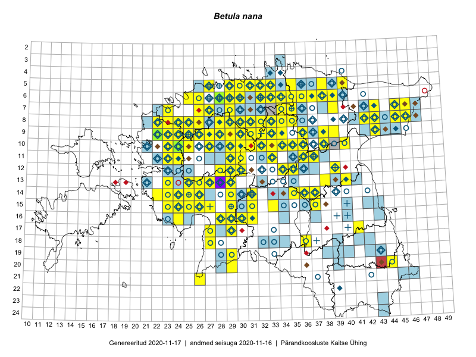

Betula nana — vaevakask
Betulaceae :: Betula nana L. (873)

Kaart põhineb 2257 kirjel:
vaatlusi 498
herbaareksemplare 375
PKÜ kirjeid1 3
ELFi kirjeid2 1364
LVA kirjeid3 17
Taime kaasaegsed ja ajaloolised leiukohad asuvad 253 ruudus.
Tingmärgid ja leidudega ruutude arvud periooditi uues (u) ja 2005 andmestikus (v)
| █ | vahemik | u4 | v5 |
|---|---|---|---|
| █ | 2006–2020 | 213 | – |
| ◆/◇ | 1971–2005 | 128 | 127 |
| ○ | 1921–1970 | 160 | 67 |
| + | kuni 1920 | 22 | 0 |
| × | hävinud | – | 0 |
| ? | kaheldav | – | 0 |
| Ruut | Leidja(d) | Leiuaeg | Kirje |
|---|---|---|---|
| 05-31 | Eerik Leibak | 2020-10-05 | ELF: 1143 |
| 13-38 | Ulvi Selgis | 2020-09-27 | punkt: Betula nana L. |
| 14-30 | Toivo Sepp | 2020-09-24 | ELF: 1109 |
| 08-29 | Toivo Sepp | 2020-09-18 | ELF: 1052 |
| 08-29;08-30 | Toivo Sepp | 2020-09-18 | ELF: 1059 |
| 08-29 | Toivo Sepp | 2020-09-18 | ELF: 24984 |
| 08-29 | Toivo Sepp | 2020-09-17 | ELF: 1915 |
| 16-29;17-29 | Tiit Hallikma, Kaia Kask | 2020-09-17 | ELF: 852 |
| 09-30 | Toivo Sepp | 2020-09-16 | ELF: 24686 |
| 16-28;16-29 | Tiit Hallikma | 2020-09-13 | ELF: 1367 |
| 16-29 | Tiit Hallikma | 2020-09-13 | ELF: 1366 |
| 16-29;17-29 | Tiit Hallikma | 2020-09-13 | ELF: 850 |
| 11-27 | Toivo Sepp | 2020-09-06 | ELF: 141 |
| 10-36 | Peedu Saar | 2020-08-25 | ruut/ala: Betula nana L. |
| 10-38 | Peedu Saar | 2020-08-25 | ruut/ala: Betula nana L. |
| 11-37 | Peedu Saar | 2020-08-25 | ruut/ala: Betula nana L. |
| 07-46;07-47;08-46;08-47 | Alar Soppe | 2020-08-25 | ELF: 925 |
| 07-46;08-46 | Alar Soppe | 2020-08-25 | ELF: 926 |
| 09-29 | Toivo Sepp | 2020-08-24 | ELF: 24975 |
| 09-29;09-30 | Toivo Sepp | 2020-08-24 | ELF: 24976 |
| 10-30 | Ott Luuk | 2020-08-24 | ruut/ala: Betula nana L. |
| 10-29 | Ott Luuk | 2020-08-24 | ruut/ala: Betula nana L. |
| 08-45 | Alar Soppe | 2020-08-24 | ELF: 912 |
| 08-45 | Alar Soppe | 2020-08-24 | ELF: 24954 |
| 09-29 | Toivo Sepp | 2020-08-23 | ELF: 153 |
| 05-35 | Eerik Leibak | 2020-08-23 | ELF: 24891 |
| 09-43 | Alar Soppe | 2020-08-23 | ELF: 23417 |
| 09-43 | Alar Soppe | 2020-08-23 | ELF: 786 |
| 07-42 | Alar Soppe | 2020-08-19 | ELF: 814 |
| 08-42 | Alar Soppe | 2020-08-19 | ELF: 3056 |
| 10-23 | Peedu Saar | 2020-08-05 | ruut/ala: Betula nana L. |
| 10-23 | Ott Luuk | 2020-08-05 | punkt: Betula nana L. |
| 10-23 | Ott Luuk | 2020-08-05 | ruut/ala: Betula nana L. |
| 05-39;05-40;06-39;06-40 | Jaan Spiegel | 2020-08-05 | ELF: 2867 |
| 05-33 | Eerik Leibak | 2020-08-01 | ELF: 995 |
| 05-33;06-33 | Eerik Leibak | 2020-08-01 | ELF: 2519 |
| 06-38 | Jaan Spiegel | 2020-07-31 | ELF: 24898 |
| 13-35;14-35 | Tiit Hallikma | 2020-07-26 | ELF: 469 |
| 08-25 | Ott Luuk | 2020-07-22–2020-07-23 | ruut/ala: Betula nana L. |
| 06-31 | Eerik Leibak | 2020-07-19 | ELF: 316 |
| 05-36 | Jaan Spiegel | 2020-07-18 | ELF: 159 |
| 05-36 | Jaan Spiegel | 2020-07-18 | ELF: 158 |
| 06-26 | Eerik Leibak | 2020-07-18 | ELF: 24547 |
| 08-26 | Eerik Leibak | 2020-07-16 | ELF: 3337 |
| 08-26 | Eerik Leibak | 2020-07-15 | ELF: 2751 |
| 08-26 | Eerik Leibak | 2020-07-15 | ELF: 31 |
| 07-31 | Eerik Leibak | 2020-07-14 | ELF: 302 |
| 07-31 | Eerik Leibak | 2020-07-14 | ELF: 301 |
| 06-31 | Eerik Leibak | 2020-07-14 | ELF: 307 |
| 19-29 | Värdi Soomann | 2020-07-10 | LVA: 1560759616 |
| 09-23 | Thea Kull | 2020-07-07 | punkt: Betula nana L. |
| 09-23 | Thea Kull | 2020-07-07 | punkt: Betula nana L. |
| 09-23 | Thea Kull | 2020-07-07 | punkt: Betula nana L. |
| 09-23 | Thea Kull | 2020-06-28 | punkt: Betula nana L. |
| 10-27 | Thea Kull | 2020-06-16 | ruut/ala: Betula nana L. |
| 04-33 | Toomas Kukk, Meeli Mesipuu | 2020-06-09 | ELF: 19736 |
| 09-33 | Agu Leivits | 2020-05-30 | punkt: Betula nana L. |
| 09-32 | Agu Leivits | 2020-05-28 | punkt: Betula nana L. |
| 10-23 | Tõnu Ploompuu | 2019-10-01 | ELF: 7778 |
| 10-23 | Tõnu Ploompuu | 2019-10-01 | ELF: 7781 |
| 10-24;11-24 | Tõnu Ploompuu | 2019-10-01 | ELF: 7790 |
| 10-24;11-24 | Tõnu Ploompuu | 2019-10-01 | ELF: 7791 |
| 11-24 | Tõnu Ploompuu | 2019-10-01 | ELF: 24799 |
| 10-23 | Tõnu Ploompuu | 2019-10-01 | ELF: 24801 |
| 10-23;10-24 | Tõnu Ploompuu | 2019-09-29 | ELF: 9883 |
| 09-30;09-31 | Toivo Sepp | 2019-09-29 | ELF: 1473 |
| 09-44 | Eerik Leibak | 2019-09-27 | ELF: 914 |
| 05-32 | Eerik Leibak | 2019-09-21 | ELF: 21434 |
| 05-29;05-30;06-29 | Eerik Leibak | 2019-09-20 | ELF: 10797 |
| 06-29 | Eerik Leibak | 2019-09-19 | ELF: 24765 |
| 07-27;08-27 | Eerik Leibak | 2019-09-18 | ELF: 259 |
| 07-27 | Eerik Leibak | 2019-09-18 | ELF: 24764 |
| 07-43 | Meeli Mesipuu, Ott Luuk | 2019-09-12 | ruut/ala: Betula nana L. |
| 10-23 | Tõnu Ploompuu | 2019-09-10 | ELF: 196 |
| 10-23 | Tõnu Ploompuu | 2019-09-10 | ELF: 24798 |
| 08-43 | Ott Luuk, Meeli Mesipuu | 2019-09-10 | ruut/ala: Betula nana L. |
| 12-34 | Eerik Leibak | 2019-09-07 | ELF: 735 |
| 12-34 | Eerik Leibak | 2019-09-07 | ELF: 737 |
| 08-25 | Ott Luuk, Peedu Saar | 2019-09-05 | ruut/ala: Betula nana L. |
| 08-22 | Peedu Saar | 2019-09-04 | ELF: 323 |
| 08-22 | Peedu Saar | 2019-09-04 | ELF: 24809 |
| 09-22 | Ott Luuk | 2019-09-03–2019-09-04 | ruut/ala: Betula nana L. |
| 09-22 | Ott Luuk | 2019-09-03 | ELF: 326 |
| 09-22 | Ott Luuk | 2019-09-03 | ELF: 2330 |
| 09-22 | Ott Luuk | 2019-09-03 | ELF: 10000 |
| 09-22 | Ott Luuk | 2019-09-03 | ELF: 24829 |
| 09-22 | Ott Luuk | 2019-09-03 | ELF: 24830 |
| 09-22 | Ott Luuk | 2019-09-03 | ELF: 24831 |
| 07-27 | Eerik Leibak | 2019-09-02 | ELF: 3092 |
| 08-27 | Eerik Leibak | 2019-09-02 | ELF: 24763 |
| 06-32;06-33 | Eerik Leibak | 2019-09-01 | ELF: 294 |
| 06-32;06-33 | Eerik Leibak | 2019-09-01 | ELF: 24760 |
| 08-30;09-30 | Toivo Sepp, Ott Luuk | 2019-08-30 | ELF: 934 |
| 08-30 | Toivo Sepp, Ott Luuk | 2019-08-30 | ELF: 24746 |
| 08-30 | Toivo Sepp | 2019-08-30 | ELF: 1057 |
| 08-30 | Ott Luuk, Toivo Sepp | 2019-08-30 | ruut/ala: Betula nana L. |
| 08-30 | Ott Luuk, Toivo Sepp | 2019-08-30 | ELF: 24747 |
| 08-30 | Ott Luuk | 2019-08-30 | ELF: 1060 |
| 08-30 | Ott Luuk | 2019-08-30 | ELF: 11335 |
| 16-30 | Peedu Saar, Martin Tikk, Toomas Kukk | 2019-08-28 | ruut/ala: Betula nana L. |
| 14-31 | Ott Luuk, Eerik Leibak | 2019-08-28 | ruut/ala: Betula nana L. |
| 14-31 | Ott Luuk, Eerik Leibak | 2019-08-28 | ELF: 21544 |
| 15-31 | Meeli Mesipuu, Timo Luhamäe | 2019-08-28 | ruut/ala: Betula nana L. |
| 13-29 | Mari Reitalu, Thea Kull | 2019-08-28 | ruut/ala: Betula nana L. |
| 12-35 | Ott Luuk, Eerik Leibak | 2019-08-27 | punkt: Betula nana L. |
| 12-34 | Ott Luuk, Eerik Leibak | 2019-08-27 | ruut/ala: Betula nana L. |
| 12-34;12-35 | Eerik Leibak | 2019-08-27 | ELF: 738 |
| 08-23 | Peedu Saar, Ott Luuk, Sten Mander, Kersti Tambets, Kristine Fenske | 2019-08-22 | ruut/ala: Betula nana L. |
| 11-24 | Thea Kull | 2019-08-18 | ruut/ala: Betula nana L. |
| 11-24 | Thea Kull | 2019-08-18 | ELF: 2302 |
| 09-22 | Peedu Saar | 2019-08-17 | ELF: 24826 |
| 08-22;09-22 | Peedu Saar | 2019-08-17 | ELF: 24827 |
| 09-22 | Peedu Saar | 2019-08-17 | ELF: 24828 |
| 13-27 | Thea Kull | 2019-08-16 | punkt: Betula nana L. |
| 13-27 | Thea Kull | 2019-08-16 | ELF: 975 |
| 09-22 | Peedu Saar | 2019-08-16 | ruut/ala: Betula nana L. |
| 09-22 | Peedu Saar | 2019-08-16 | ELF: 2187 |
| 11-36 | Peedu Saar | 2019-08-10 | ruut/ala: Betula nana L. |
| 10-36 | Peedu Saar, Timo Luhamäe | 2019-08-08 | ruut/ala: Betula nana L. |
| 08-33 | Ott Luuk, Jaak-Albert Metsoja | 2019-08-08 | ruut/ala: Betula nana L. |
| 05-35 | Peedu Saar, Timo Luhamäe | 2019-08-07 | ruut/ala: Betula nana L. |
| 12-24 | Tõnu Ploompuu, Arvo Talalaev | 2019-08-05 | ELF: 215 |
| 12-23;12-24 | Tõnu Ploompuu, Arvo Talalaev | 2019-08-05 | ELF: 24791 |
| 12-24 | Tõnu Ploompuu, Arvo Talalaev | 2019-08-05 | ELF: 24793 |
| 12-24 | Tõnu Ploompuu, Arvo Talalaev | 2019-08-05 | ELF: 24794 |
| 05-33 | Peedu Saar, Timo Luhamäe | 2019-08-05 | ruut/ala: Betula nana L. |
| 10-24 | Tõnu Ploompuu | 2019-08-03 | ELF: 7763 |
| 10-24 | Tõnu Ploompuu | 2019-08-03 | ELF: 7764 |
| 10-24 | Tõnu Ploompuu | 2019-08-03 | ELF: 7765 |
| 10-24 | Tõnu Ploompuu | 2019-08-03 | ELF: 7773 |
| 12-28;12-29 | Toivo Sepp | 2019-08-02 | ELF: 972 |
| 12-28;12-29;13-28;13-29 | Toivo Sepp | 2019-08-02 | ELF: 1399 |
| 12-29 | Toivo Sepp | 2019-08-02 | ELF: 24739 |
| 12-29 | Toivo Sepp | 2019-08-02 | ELF: 24740 |
| 12-29;13-29 | Toivo Sepp | 2019-07-30 | ELF: 1259 |
| 12-29;13-29 | Toivo Sepp, Merili Hermlin | 2019-07-29 | ELF: 984 |
| 09-31;09-32 | Toivo Sepp, Ott Luuk | 2019-07-25 | ELF: 24736 |
| 09-31 | Toivo Sepp | 2019-07-25 | ELF: 24733 |
| 09-31 | Ott Luuk, Toivo Sepp | 2019-07-25 | ELF: 15845 |
| 09-31;09-32 | Ott Luuk, Toivo Sepp | 2019-07-25 | ELF: 24737 |
| 09-32 | Toivo Sepp, Ott Luuk | 2019-07-24 | ELF: 24544 |
| 08-31 | Toivo Sepp, Ott Luuk | 2019-07-24 | ELF: 24732 |
| 08-31 | Ott Luuk, Toivo Sepp | 2019-07-24 | ruut/ala: Betula nana L. |
| 09-31 | Ott Luuk, Toivo Sepp | 2019-07-24 | ELF: 15838 |
| 08-31 | Ott Luuk, Toivo Sepp | 2019-07-24 | ELF: 24730 |
| 08-31 | Ott Luuk, Toivo Sepp | 2019-07-24 | ELF: 24731 |
| 11-29 | Toivo Sepp, Ott Luuk | 2019-07-23 | ELF: 1125 |
| 11-29 | Toivo Sepp | 2019-07-23 | ELF: 1126 |
| 11-29 | Ott Luuk, Toivo Sepp | 2019-07-23 | ELF: 1124 |
| 11-29 | Ott Luuk, Toivo Sepp | 2019-07-23 | ELF: 24728 |
| 10-24;11-24 | Tõnu Ploompuu, Eliko Kõiv | 2019-07-20 | ELF: 7789 |
| 10-24 | Tõnu Ploompuu, Eliko Kõiv | 2019-07-20 | ELF: 7801 |
| 10-24;11-24 | Tõnu Ploompuu, Eliko Kõiv | 2019-07-20 | ELF: 24787 |
| 10-24 | Tõnu Ploompuu, Eliko Kõiv | 2019-07-20 | ELF: 24788 |
| 10-24 | Tõnu Ploompuu, Eliko Kõiv | 2019-07-20 | ELF: 24789 |
| 13-32 | Eerik Leibak | 2019-07-20 | ELF: 1184 |
| 08-27 | Eerik Leibak | 2019-07-14 | ELF: 870 |
| 08-27 | Eerik Leibak | 2019-07-12 | ELF: 863 |
| 11-36 | Jaanus Paal, Elo Raspel | 2019-07-10 | ELF: 2749 |
| 10-36 | Jaanus Paal, Elo Raspel | 2019-07-10 | ELF: 24720 |
| 10-38 | Jaanus Paal | 2019-07-09 | ELF: 24717 |
| 10-38 | Jaanus Paal | 2019-07-09 | ELF: 24718 |
| 11-36;11-37 | Jaanus Paal, Elo Raspel | 2019-07-05 | ELF: 2049 |
| 11-36 | Jaanus Paal, Elo Raspel | 2019-07-05 | ELF: 2754 |
| 09-38 | Jaanus Paal | 2019-07-04 | ELF: 789 |
| 10-33 | Jaanus Paal | 2019-07-01 | ELF: 2284 |
| 06-35 | Tõnis Valing, Ojar Kristal | 2019-06-15 | punkt: Betula nana L. |
| 09-43 | Veronika Plotnikova, Anne-Ly Fersel | 2019-06-14 | punkt: Betula nana L. |
| 05-33 | Ott Luuk, Peedu Saar | 2019-06-11 | ruut/ala: Betula nana L. |
| 09-30 | Meelis Leivits | 2019-06-06 | ELF: 1080 |
| 09-30 | Meelis Leivits | 2019-06-06 | ELF: 1518 |
| 08-29 | Eerik Leibak | 2019-06-06 | ELF: 1048 |
| 10-23 | Eerik Leibak | 2019-05-18 | ELF: 195 |
| 10-23 | Eerik Leibak | 2019-05-18 | ELF: 197 |
| 10-23;10-24 | Meelis Leivits | 2019-05-17 | ELF: 7782 |
| 10-23;10-24 | Meelis Leivits | 2019-05-17 | ELF: 7792 |
| 10-24 | Eerik Leibak | 2019-05-17 | ELF: 7759 |
| 10-24 | Eerik Leibak | 2019-05-17 | ELF: 7760 |
| 10-24 | Eerik Leibak | 2019-05-17 | ELF: 7761 |
| 10-23;10-24 | Alar Soppe | 2019-05-17 | ELF: 2472 |
| 10-23;10-24 | Alar Soppe | 2019-05-17 | ELF: 7766 |
| 10-23 | Agu Leivits | 2019-05-17 | ELF: 7772 |
| 10-23 | Agu Leivits | 2019-05-17 | ELF: 24685 |
| 10-24 | Kristel Kadak | 2019-05-01 | LVA: -1408406092 |
| 10-24 | Greete-Liis Järvine, Hanna-Triinu Järvine, Anni Joamets, Anette Kosenkranius, Artur Raik, Jan Sihvola, Teodora Touart | 2018-09-08 | LVA: 1037012036 |
| 10-24 | Tõnu Ploompuu, Marko Vainu | 2018-09-07 | ELF: 7788 |
| 08-22;09-22;09-23 | Tõnu Ploompuu, Laura Paju, Helen Valts, Marko Vainu | 2018-09-06 | ELF: 325 |
| 09-25 | Ott Luuk, Thea Kull | 2018-09-06 | ruut/ala: Betula nana L. |
| 09-26 | Ott Luuk, Thea Kull | 2018-09-06 | ruut/ala: Betula nana L. |
| 20-43 | Helen Õunap | 2018-08-31 | LVA: -1469973720 |
| 10-32 | Ott Luuk | 2018-08-29 | ruut/ala: Betula nana L. |
| 10-32 | Ott Luuk | 2018-08-29 | ELF: 1329 |
| 10-31 | Ott Luuk | 2018-08-28 | ruut/ala: Betula nana L. |
| 10-31;10-32 | Ott Luuk | 2018-08-28 | ELF: 1170 |
| 10-31 | Ott Luuk | 2018-08-28 | ELF: 1330 |
| 10-31 | Ott Luuk | 2018-08-28 | ELF: 1331 |
| 10-31;10-32 | Ott Luuk | 2018-08-28 | ELF: 1332 |
| 09-30 | Ott Luuk, Toivo Sepp | 2018-08-27 | ELF: 1338 |
| 09-30 | Ott Luuk, Toivo Sepp | 2018-08-27 | ELF: 1339 |
| 14-35 | Eerik Leibak | 2018-08-24 | ELF: 23390 |
| 11-29 | Toivo Sepp | 2018-08-23 | ELF: 9904 |
| 12-29 | Toivo Sepp | 2018-08-23 | ELF: 20741 |
| 11-33 | Ott Luuk, Toivo Sepp | 2018-08-22 | ruut/ala: Betula nana L. |
| 11-33 | Ott Luuk, Toivo Sepp | 2018-08-22 | ELF: 1168 |
| 11-33 | Ott Luuk, Toivo Sepp | 2018-08-22 | ELF: 1169 |
| 11-33 | Ott Luuk, Toivo Sepp | 2018-08-22 | ELF: 1171 |
| 11-33 | Ott Luuk, Toivo Sepp | 2018-08-22 | ELF: 1172 |
| 08-22 | Tõnu Ploompuu, Priit Kukk | 2018-08-21 | ELF: 322 |
| 10-27 | Ott Luuk, Toivo Sepp | 2018-08-21 | ELF: 1026 |
| 10-28 | Ott Luuk, Toivo Sepp | 2018-08-21 | ELF: 2732 |
| 14-31 | Toomas Kukk | 2018-08-18 | ruut/ala: Betula nana L. |
| 14-31 | Toomas Kukk | 2018-08-18 | ELF: 1202 |
| 15-33 | Eerik Leibak | 2018-08-18 | ELF: 19426 |
| 10-21 | Tõnu Ploompuu | 2018-08-16 | ELF: 2062 |
| 10-27 | Peedu Saar, Toomas Kukk, Ott Luuk, Kersti Tambets, Sten Mander | 2018-08-16 | ruut/ala: Betula nana L. |
| 10-24 | Tõnu Ploompuu | 2018-08-06 | ELF: 1243 |
| 10-24 | Tõnu Ploompuu | 2018-08-06 | ELF: 2179 |
| 10-24 | Tõnu Ploompuu | 2018-08-06 | ELF: 24597 |
| 07-26 | Eerik Leibak | 2018-08-06 | ELF: 1354 |
| 09-31 | Ott Luuk, Toivo Sepp | 2018-08-02 | ELF: 24568 |
| 12-28 | Indrek Tammekänd | 2018-08-02 | ELF: 1218 |
| 13-27 | Indrek Tammekänd | 2018-08-02 | ELF: 2156 |
| 13-27 | Indrek Tammekänd | 2018-08-02 | ELF: 24585 |
| 12-28 | Indrek Tammekänd | 2018-08-02 | ELF: 24586 |
| 10-31 | Ott Luuk | 2018-08-01 | ruut/ala: Betula nana L. |
| 10-31 | Ott Luuk | 2018-08-01 | punkt: Betula nana L. |
| 06-34 | Alar Soppe | 2018-07-29 | ELF: 22289 |
| 06-35 | Alar Soppe | 2018-07-29 | ELF: 24455 |
| 05-27 | Eerik Leibak | 2018-07-26 | ELF: 1240 |
| 06-26 | Eerik Leibak | 2018-07-26 | ELF: 1241 |
| 06-26 | Eerik Leibak | 2018-07-26 | ELF: 24547 |
| 08-33 | Eerik Leibak | 2018-07-25 | ELF: 1336 |
| 08-33 | Eerik Leibak | 2018-07-25 | ELF: 24546 |
| 09-45 | Peedu Saar | 2018-07-19 | ELF: 20615 |
| 07-46 | Peedu Saar | 2018-07-18 | ruut/ala: Betula nana L. |
| 07-46 | Peedu Saar | 2018-07-18 | ELF: 24647 |
| 08-45;09-45 | Peedu Saar | 2018-07-18 | ELF: 24648 |
| 08-29 | Thea Kull | 2018-07-16 | ELF: 1051 |
| 07-28;08-28 | Thea Kull | 2018-07-15 | ELF: 1423 |
| 09-32;09-33 | Eerik Leibak | 2018-07-13 | ELF: 1328 |
| 19-29 | Värdi Soomann | 2018-07-12 | LVA: -1233147694 |
| 08-24 | Eerik Leibak | 2018-07-12 | ELF: 1239 |
| 06-36 | Alar Soppe | 2018-07-11 | ELF: 24477 |
| 05-36 | Alar Soppe | 2018-07-11 | ELF: 24478 |
| 05-36 | Alar Soppe | 2018-07-09 | ELF: 24527 |
| 07-45;08-45 | Alar Soppe | 2018-06-28 | ELF: 1718 |
| 07-45;08-45;08-46 | Alar Soppe | 2018-06-28 | ELF: 24526 |
| 05-34 | Alar Soppe | 2018-06-27 | ELF: 24502 |
| 05-33 | Alar Soppe | 2018-06-27 | ELF: 24532 |
| 06-33 | Alar Soppe | 2018-06-26 | ELF: 295 |
| 06-33 | Alar Soppe | 2018-06-26 | ELF: 22173 |
| 06-33 | Alar Soppe | 2018-06-26 | ELF: 22181 |
| 06-33 | Alar Soppe | 2018-06-26 | ELF: 24531 |
| 12-30 | Tiina Ploom | 2018-06-24 | punkt: Betula nana L. |
| 16-31 | Indrek Tammekänd | 2018-06-04–2018-06-05 | ruut/ala: Betula nana L. |
| 06-28 | Aire Asu | 2018-05-30 | TALL A011046: Betula nana L. |
| 10-36 | Indrek Tammekänd | 2018-05-27 | ruut/ala: Betula nana L. |
| 11-37 | Indrek Tammekänd, Jaak Tammekänd, Alar Soppe, Margus Pensa | 2018-05-26 | ruut/ala: Betula nana L. |
| 11-36 | Indrek Tammekänd, Jaak Tammekänd, Agu Leivits, Meelis Leivits, Alar Soppe, Triin Leetmaa, Margus Pensa | 2018-05-25–2018-05-27 | ruut/ala: Betula nana L. |
| 15-31 | Eerik Leibak | 2018-05-13 | ELF: 21527 |
| 11-30 | Toivo Sepp | 2017-10-01 | punkt: Betula nana L. |
| 06-35 | Eerik Leibak, Säde Lahtmets | 2017-09-10 | ELF: 10511 |
| 14-35 | Peedu Saar, Susanna Vain | 2017-08-28 | ruut/ala: Betula nana L. |
| 14-35 | Meeli Mesipuu, Ott Luuk, Helen Toom | 2017-08-28 | ruut/ala: Betula nana L. |
| 15-37 | Peedu Saar, Susanna Vain | 2017-08-22 | ruut/ala: Betula nana L. |
| 14-35 | Ott Luuk | 2017-08-16 | ruut/ala: Betula nana L. |
| 14-35 | Ott Luuk | 2017-08-16 | punkt: Betula nana L. |
| 14-36 | Indrek Tammekänd | 2017-08-16 | ruut/ala: Betula nana L. |
| 14-35 | Peedu Saar | 2017-08-15–2017-09-16 | ruut/ala: Betula nana L. |
| 14-36 | Meeli Mesipuu, Helen Toom | 2017-08-15 | ruut/ala: Betula nana L. |
| 14-37 | Peedu Saar | 2017-08-14 | ruut/ala: Betula nana L. |
| 09-24 | Mari Reitalu, Eerik Leibak | 2017-08-11 | ruut/ala: Betula nana L. |
| 15-29 | Ilmar Uibopuu, Toomas Kukk | 2017-08-11 | ruut/ala: Betula nana L. |
| 09-29 | Toomas Kukk, Ilmar Uibopuu, Kadri Kuusksalu | 2017-08-09 | ruut/ala: Betula nana L. |
| 08-26 | Toomas Kukk, Ilmar Uibopuu, Kadri Kuusksalu | 2017-08-08 | ruut/ala: Betula nana L. |
| 07-26 | Toomas Kukk, Ilmar Uibopuu, Kadri Kuusksalu | 2017-08-08 | ruut/ala: Betula nana L. |
| 07-27 | Peedu Saar, Timo Luhamäe | 2017-08-08 | ruut/ala: Betula nana L. |
| 09-26 | Meeli Mesipuu, Indrek Tammekänd | 2017-08-08 | ruut/ala: Betula nana L. |
| 08-28 | Mari Reitalu, Eerik Leibak | 2017-08-08 | ruut/ala: Betula nana L. |
| 15-37 | Peedu Saar | 2017-08-03–2017-08-04 | ruut/ala: Betula nana L. |
| 15-37 | Peedu Saar | 2017-08-03 | punkt: Betula nana L. |
| 12-34 | Ott Luuk, Thea Kull | 2017-08-03 | punkt: Betula nana L. |
| 12-34 | Ott Luuk, Thea Kull | 2017-08-03 | ruut/ala: Betula nana L. |
| 08-28 | Helle Mäemets, Kadi Palmik | 2017-08-03 | ruut/ala: Betula nana L. |
| 08-22 | Toomas Kukk, Ilmar Uibopuu | 2017-07-29 | ruut/ala: Betula nana L. |
| 12-39 | Ulvi Selgis, Enn Selgis | 2017-07-28 | ruut/ala: Betula nana L. |
| 12-39 | Ulvi Selgis | 2017-07-28 | LVA: -2101156616 |
| 08-45 | Eerik Leibak | 2017-07-28 | punkt: Betula nana L. |
| 05-31 | Rein Kalamees | 2017-07-24 | ruut/ala: Betula nana L. |
| 10-39 | Ulvi Selgis | 2017-07-21 | LVA: -1089914696 |
| 06-34 | Peedu Saar, Ott Luuk | 2017-07-19 | ruut/ala: Betula nana L. |
| 08-25 | Helle Mäemets, Kadi Palmik | 2017-07-14 | ruut/ala: Betula nana L. |
| 06-34 | Anneli Palo | 2017-06-29 | LVA: -1999120030 |
| 08-45 | Eerik Leibak | 2017-06-28 | ELF: 20753 |
| 08-45 | Eerik Leibak | 2017-06-28 | ELF: 20757 |
| 10-36 | Avo Veermäe | 2017-06-12 | LVA: 906484978 |
| 10-27 | Ilmar Uibopuu | 2017-06-10 | LVA: -1496834076 |
| 08-32 | Ott Luuk, Peedu Saar | 2016-09-28 | ruut/ala: Betula nana L. |
| 17-27 | Indrek Tammekänd | 2016-09-23 | ruut/ala: Betula nana L. |
| 18-27 | Indrek Tammekänd | 2016-09-23 | ruut/ala: Betula nana L. |
| 08-33 | Peedu Saar, Toomas Kukk | 2016-09-15 | ruut/ala: Betula nana L. |
| 06-33 | Peedu Saar, Toomas Kukk | 2016-09-14 | ruut/ala: Betula nana L. |
| 08-30 | Peedu Saar, Toomas Kukk | 2016-09-09 | ruut/ala: Betula nana L. |
| 06-32 | Toomas Kukk, Peedu Saar | 2016-09-08 | ruut/ala: Betula nana L. |
| 09-30 | Peedu Saar, Toomas Kukk | 2016-09-06–2016-09-07 | punkt: Betula nana L. |
| 09-30 | Ott Luuk, Peedu Saar | 2016-09-06–2016-09-07 | ruut/ala: Betula nana L. |
| 05-32 | Toomas Kukk, Sander Laherand | 2016-08-31 | ruut/ala: Betula nana L. |
| 06-30 | Toomas Kukk, Sander Laherand | 2016-08-30 | ruut/ala: Betula nana L. |
| 05-31 | Sander Laherand, Toomas Kukk | 2016-08-30 | ruut/ala: Betula nana L. |
| 05-29 | Toomas Kukk, Sander Laherand | 2016-08-29 | ruut/ala: Betula nana L. |
| 06-29 | Sander Laherand, Toomas Kukk | 2016-08-29 | ruut/ala: Betula nana L. |
| 10-27 | Jüri Kõiv | 2016-08-28 | LVA: -1835631418 |
| 10-30 | Indrek Tammekänd, Janno Tammekänd, Üllar Tammekänd, Andreas Tammekänd, Tene Johanson | 2016-08-20–2016-08-21 | ruut/ala: Betula nana L. |
| 10-29 | Indrek Tammekänd, Janno Tammekänd, Üllar Tammekänd, Andreas Tammekänd, Tene Johanson | 2016-08-20–2016-08-21 | ruut/ala: Betula nana L. |
| 09-39 | Ott Luuk, Eerik Leibak | 2016-08-09 | ruut/ala: Betula nana L. |
| 09-38 | Ott Luuk, Eerik Leibak | 2016-08-08 | ruut/ala: Betula nana L. |
| 10-40 | Ott Luuk, Eerik Leibak | 2016-08-03 | ruut/ala: Betula nana L. |
| 06-35 | Anneli Palo | 2016-08-03 | LVA: -703664910 |
| 05-30 | Sander Laherand, Eerik Leibak | 2016-07-29 | ruut/ala: Betula nana L. |
| 08-42 | Peedu Saar, Timo Luhamäe | 2016-07-29 | ruut/ala: Betula nana L. |
| 09-43 | Hannes Pehlak, Ott Luuk | 2016-07-29 | ruut/ala: Betula nana L. |
| 05-40 | Sander Laherand, Peedu Saar | 2016-07-28 | punkt: Betula nana L. |
| 05-40 | Peedu Saar, Sander Laherand | 2016-07-28 | ruut/ala: Betula nana L. |
| 05-38 | Hannes Pehlak, Toomas Kukk, Susanna Vain | 2016-07-28 | ruut/ala: Betula nana L. |
| 08-35 | Sander Laherand, Toomas Kukk, Nele Jõessar | 2016-07-27 | ruut/ala: Betula nana L. |
| 06-36 | Peedu Saar, Liina Oja, Susanna Vain | 2016-07-27 | ruut/ala: Betula nana L. |
| 06-37 | Meeli Mesipuu, Tiit Hallikma | 2016-07-27 | ruut/ala: Betula nana L. |
| 10-35 | Toomas Kukk, Tiit Hallikma | 2016-07-25 | ruut/ala: Betula nana L. |
| 06-39 | Thea Kull, Hannes Pehlak | 2016-07-25 | ruut/ala: Betula nana L. |
| 09-33 | Ott Luuk, Eerik Leibak | 2016-07-25 | ruut/ala: Betula nana L. |
| 11-36 | Meeli Mesipuu, Timo Luhamäe | 2016-07-25 | ruut/ala: Betula nana L. |
| 10-36 | Meeli Mesipuu, Timo Luhamäe | 2016-07-25 | ruut/ala: Betula nana L. |
| 06-38 | Hannes Pehlak, Thea Kull | 2016-07-25 | ruut/ala: Betula nana L. |
| 10-30 | Erkki Otsman, Sergei Smirnov | 2016-07-25 | ruut/ala: Betula nana L. |
| 08-31 | Erkki Otsman, Sergei Smirnov | 2016-07-24 | ruut/ala: Betula nana L. |
| 12-35 | Ott Luuk, Hannes Pehlak | 2016-07-22 | ruut/ala: Betula nana L. |
| 08-31 | Erkki Otsman, Sergei Smirnov | 2016-07-22 | ruut/ala: Betula nana L. |
| 10-34 | Mari Metsoja, Eerik Leibak | 2016-07-21 | ruut/ala: Betula nana L. |
| 10-33 | Mari Metsoja, Eerik Leibak | 2016-07-21 | ruut/ala: Betula nana L. |
| 15-29 | Elle Rajandu, Tiit Hallikma | 2016-07-21 | ruut/ala: Betula nana L. |
| 16-29 | Thea Kull, Hannes Pehlak | 2016-07-20 | ruut/ala: Betula nana L. |
| 20-29 | Lena Neuenkamp, Jaak-Albert Metsoja, Timo Luhamäe | 2016-07-19 | ruut/ala: Betula nana L. |
| 14-25 | Toomas Kukk, Oliver Parrest | 2016-07-08 | ruut/ala: Betula nana L. |
| 15-25 | Toomas Kukk, Oliver Parrest | 2016-07-08 | ruut/ala: Betula nana L. |
| 08-29 | Sander Laherand, Rein Kalamees | 2016-07-08 | ruut/ala: Betula nana L. |
| 07-29 | Rein Kalamees, Sander Laherand | 2016-07-08 | ruut/ala: Betula nana L. |
| 14-26 | Maret Gerz, Liina Oja | 2016-07-08 | ruut/ala: Betula nana L. |
| 13-26 | Maret Gerz, Liina Oja | 2016-07-08 | ruut/ala: Betula nana L. |
| 13-26 | Liina Oja, Maret Gerz | 2016-07-08 | punkt: Betula nana L. |
| 09-24 | Jaak-Albert Metsoja, Mari Metsoja | 2016-07-08 | ruut/ala: Betula nana L. |
| 09-29 | Toomas Kukk, Sander Laherand | 2016-07-06 | ruut/ala: Betula nana L. |
| 10-25 | Sirje Azarov, Meeli Mesipuu | 2016-07-06 | ruut/ala: Betula nana L. |
| 09-30 | Sander Laherand, Toomas Kukk | 2016-07-06 | ruut/ala: Betula nana L. |
| 09-27 | Rein Kalamees, Liina Oja | 2016-07-06 | ruut/ala: Betula nana L. |
| 12-28 | Mari Reitalu, Eerik Leibak | 2016-07-06 | ruut/ala: Betula nana L. |
| 12-29 | Mari Reitalu, Eerik Leibak | 2016-07-06 | ruut/ala: Betula nana L. |
| 09-23 | Jaak-Albert Metsoja, Mari Metsoja | 2016-07-06 | ruut/ala: Betula nana L. |
| 10-24 | Helle Mäemets, Tiina Elvisto | 2016-07-06 | ruut/ala: Betula nana L. |
| 10-23 | Aat Sarv, Maret Gerz | 2016-07-06 | ruut/ala: Betula nana L. |
| 14-23 | Thea Kull, Eerik Leibak | 2016-07-05 | ruut/ala: Betula nana L. |
| 07-26 | Jaak-Albert Metsoja, Mari Metsoja | 2016-07-04 | ruut/ala: Betula nana L. |
| 08-33 | Miina Krabbi | 2016-07-01 | LVA: -1011108184 |
| 10-36 | Karin Kikas, Elle Rajandu | 2016-06-30 | ruut/ala: Betula nana L. |
| 07-23 | Jaak-Albert Metsoja, Mari Metsoja | 2016-06-30 | ruut/ala: Betula nana L. |
| 06-35 | Karin Kikas, Elle Rajandu | 2016-06-29 | ruut/ala: Betula nana L. |
| 07-35 | Karin Kikas, Elle Rajandu | 2016-06-29 | ruut/ala: Betula nana L. |
| 06-37 | Karin Kikas, Elle Rajandu | 2016-06-28 | ruut/ala: Betula nana L. |
| 06-36 | Karin Kikas, Elle Rajandu | 2016-06-28 | ruut/ala: Betula nana L. |
| 12-39 | Eeva-Maria Jeletsky, Tarmo Niitla | 2016-06-26 | ruut/ala: Betula nana L. |
| 14-22 | Erkki Otsman, Sergei Smirnov | 2016-06-23 | ruut/ala: Betula nana L. |
| 13-25 | Thea Kull | 2016-06-22 | ruut/ala: Betula nana L. |
| 14-25 | Thea Kull | 2016-06-21 | ruut/ala: Betula nana L. |
| 14-24 | Thea Kull | 2016-06-21 | ruut/ala: Betula nana L. |
| 06-29 | Anneli Palo | 2016-06-20 | LVA: 2124552562 |
| 19-29 | Indrek Tammekänd, Eike Vunk | 2016-06-15 | ruut/ala: Betula nana L. |
| 16-30 | Indrek Tammekänd | 2016-06-08 | ruut/ala: Betula nana L. |
| 21-26 | Thea Kull, Peedu Saar | 2016-06-07 | ruut/ala: Betula nana L. |
| 08-42 | Rein Kalamees, Kersti Püssa | 2016-06-07 | ruut/ala: Betula nana L. |
| 16-29 | Indrek Tammekänd | 2016-06-07 | ruut/ala: Betula nana L. |
| 08-29 | Thea Kull, Ott Luuk | 2016-05-30 | ruut/ala: Betula nana L. |
| 07-45 | Indrek Tammekänd | 2016-05-30 | ruut/ala: Betula nana L. |
| 07-46 | Indrek Tammekänd | 2016-05-30 | ruut/ala: Betula nana L. |
| 08-46 | Indrek Tammekänd | 2016-05-28–2016-05-29 | ruut/ala: Betula nana L. |
| 07-33 | Miina Krabbi | 2016-05-21 | LVA: -882972822 |
| 14-26 | Indrek Tammekänd, Eike Tammekänd | 2015-09-24 | ruut/ala: Betula nana L. |
| 06-34 | Rein Kalamees, Kersti Püssa | 2015-09-11 | ruut/ala: Betula nana L. |
| 10-30 | Toivo Sepp, Ott Luuk | 2015-08-21 | ruut/ala: Betula nana L. |
| 10-29 | Ott Luuk, Toivo Sepp | 2015-08-21 | ruut/ala: Betula nana L. |
| 11-29 | Ott Luuk, Toivo Sepp | 2015-08-20 | ruut/ala: Betula nana L. |
| 13-23 | Kirsi Loide, Marje Loide | 2015-08-18–2015-08-20 | ruut/ala: Betula nana L. |
| 08-24 | Sirje Lagle, Tõnu Ploompuu | 2015-08-18 | ruut/ala: Betula nana L. |
| 09-32 | Ott Luuk, Toivo Sepp | 2015-08-18 | ruut/ala: Betula nana L. |
| 15-23 | Maret Gerz, Leena Gerz | 2015-08-15 | ruut/ala: Betula nana L. |
| 09-36 | Jana-Maria Habicht, Ester Valdvee | 2015-08-15 | ruut/ala: Betula nana L. |
| 13-40 | Peedu Saar | 2015-08-10 | ruut/ala: Betula nana L. |
| 15-24 | Maret Gerz, Leena Gerz | 2015-08-10 | ruut/ala: Betula nana L. |
| 16-24 | Maret Gerz, Leena Gerz | 2015-08-09 | ruut/ala: Betula nana L. |
| 15-25 | Maret Gerz, Leena Gerz | 2015-08-08 | ruut/ala: Betula nana L. |
| 14-36 | Peedu Saar | 2015-08-04 | ruut/ala: Betula nana L. |
| 11-23 | Hanna-Eliisa Luts, Marian Hiie, Tõnu Ploompuu | 2015-08-04 | ruut/ala: Betula nana L. |
| 10-32 | Ott Luuk | 2015-08-03–2015-08-10 | ruut/ala: Betula nana L. |
| 08-34 | Jana-Maria Habicht, Ester Valdvee | 2015-07-31 | ruut/ala: Betula nana L. |
| 09-31 | Ott Luuk, Toivo Sepp | 2015-07-29 | ruut/ala: Betula nana L. |
| 06-26 | Mari Metsoja, Jaak-Albert Metsoja | 2015-07-29 | ruut/ala: Betula nana L. |
| 15-26 | Kadi-Liis Kesler, Tiina Elvisto | 2015-07-28 | ruut/ala: Betula nana L. |
| 15-27 | Kadi-Liis Kesler, Tiina Elvisto | 2015-07-28 | ruut/ala: Betula nana L. |
| 10-35 | Peedu Saar, Ott Luuk | 2015-07-27 | ruut/ala: Betula nana L. |
| 09-34 | Jana-Maria Habicht, Ester Valdvee, Kirke Pilvik | 2015-07-25–2015-07-26 | ruut/ala: Betula nana L. |
| 06-25 | Mari Metsoja, Jaak-Albert Metsoja | 2015-07-25 | ruut/ala: Betula nana L. |
| 11-37 | Ülle Jõgar, Illi Tarmu, K. Rünk | 2015-07-24 | ruut/ala: Betula nana L. |
| 15-33 | Maria Abakumova | 2015-07-23 | ruut/ala: Betula nana L. |
| 08-45 | Peedu Saar, Liina Oja | 2015-07-22 | ruut/ala: Betula nana L. |
| 07-34 | Jana-Maria Habicht, Ester Valdvee | 2015-07-20 | ruut/ala: Betula nana L. |
| 10-24 | Hanna-Eliisa Luts, Tõnu Ploompuu, Anna-Grete Rebane | 2015-07-19 | ruut/ala: Betula nana L. |
| 09-23 | Hanna-Eliisa Luts, Tõnu Ploompuu | 2015-07-16 | ruut/ala: Betula nana L. |
| 08-35 | Jana-Maria Habicht, Ester Valdvee, Kirke Pilvik | 2015-07-14–2015-07-26 | ruut/ala: Betula nana L. |
| 05-27 | Erkki Otsman, Sergei Smirnov | 2015-07-08 | ruut/ala: Betula nana L. |
| 08-33 | Erkki Otsman, Sergei Smirnov | 2015-07-02–2015-07-03 | ruut/ala: Betula nana L. |
| 17-29 | Indrek Tammekänd | 2015-06-25–2015-06-28 | ruut/ala: Betula nana L. |
| 11-24 | Aat Sarv | 2015-06-24–2015-06-29 | ruut/ala: Betula nana L. |
| 18-36 | Helle Mäemets, Mare Leis | 2015-06-24 | ruut/ala: Betula nana L. |
| 17-41 | Thea Kull, Peedu Saar | 2015-06-19 | ruut/ala: Betula nana L. |
| 07-39 | Kaili Orav, Silvia Pihu | 2015-06-17 | ruut/ala: Betula nana L. |
| 12-34 | Toomas Kukk, Tiit Hallikma | 2015-06-12 | ruut/ala: Betula nana L. |
| 11-29 | Toomas Kukk, Tiit Hallikma | 2015-06-11 | ruut/ala: Betula nana L. |
| 10-29 | Tiit Hallikma, Toomas Kukk | 2015-06-11 | ruut/ala: Betula nana L. |
| 14-31 | Peedu Saar, Liina Oja | 2015-06-10 | ruut/ala: Betula nana L. |
| 14-29 | Ott Luuk, Hannes Pehlak | 2015-06-10 | ruut/ala: Betula nana L. |
| 13-29 | Meeli Mesipuu, Timo Luhamäe | 2015-06-10 | ruut/ala: Betula nana L. |
| 13-27 | Mari Metsoja, Jaak-Albert Metsoja | 2015-06-10 | ruut/ala: Betula nana L. |
| 12-29 | Tiit Hallikma, Indrek Tammekänd, Toomas Kukk | 2015-06-09 | ruut/ala: Betula nana L. |
| 16-31 | Mari Metsoja, Jaak-Albert Metsoja | 2015-06-09 | ruut/ala: Betula nana L. |
| 16-30 | Mari Metsoja, Jaak-Albert Metsoja | 2015-06-09 | ruut/ala: Betula nana L. |
| 10-33 | Peedu Saar, Liina Oja | 2015-06-08 | ruut/ala: Betula nana L. |
| 11-33 | Ott Luuk, Hannes Pehlak | 2015-06-08 | ruut/ala: Betula nana L. |
| 10-38 | Karin Kikas, Elle Rajandu | 2015-06-02–2015-08-14 | ruut/ala: Betula nana L. |
| 16-31 | Indrek Tammekänd | 2015-06-02 | ruut/ala: Betula nana L. |
| 09-38 | Karin Kikas, Elle Rajandu | 2015-06-01–2016-06-03 | ruut/ala: Betula nana L. |
| 08-33 | Jana-Maria Habicht, Ester Valdvee, Kirke Pilvik | 2015-05-17 | ruut/ala: Betula nana L. |
| 15-24 | Indrek Tammekänd, Liisa Rennel, Agu Leivits, Hannes Pehlak, Irja Tammekänd | 2015-04-27–2015-08-02 | ruut/ala: Betula nana L. |
| 08-22 | Aat Sarv | 2014-09-19 | punkt: Betula nana L. |
| 12-28 | Indrek Tammekänd | 2014-09-17 | ruut/ala: Betula nana L. |
| 08-22 | Aat Sarv | 2014-09-16 | punkt: Betula nana L. |
| 08-22 | Aat Sarv, Eke Jaan Sarv | 2014-09-13 | punkt: Betula nana L. |
| 16-28 | Indrek Tammekänd | 2014-09-04 | ruut/ala: Betula nana L. |
| 17-29 | Indrek Tammekänd | 2014-09-04 | ruut/ala: Betula nana L. |
| 16-29 | Indrek Tammekänd | 2014-09-04 | ruut/ala: Betula nana L. |
| 15-31 | Indrek Tammekänd, Eerik Leibak | 2014-08-29 | ELF: 5374 |
| 09-28 | Peedu Saar, Ott Luuk | 2014-08-27 | ruut/ala: Betula nana L. |
| 09-22 | Ott Luuk, Peedu Saar, Maret Gerz | 2014-08-21–2014-08-22 | ruut/ala: Betula nana L. |
| 13-24 | Eerik Leibak | 2014-08-18 | ELF: 24048 |
| 05-33 | Miina Krabbi | 2014-08-16 | LVA: -773650930 |
| 20-44 | Kaire Lanno, Indrek Melts | 2014-08-06 | punkt: Betula nana L. |
| 20-44 | Kaire Lanno, Indrek Melts | 2014-08-06 | punkt: Betula nana L. |
| 09-33 | Peedu Saar, Ott Luuk | 2014-08-05 | ruut/ala: Betula nana L. |
| 08-29 | Ester Valdvee | 2014-07-21 | punkt: Betula nana L. |
| 08-31 | Thea Kull | 2014-07-17 | ruut/ala: Betula nana L. |
| 09-33 | Thea Kull | 2014-07-14 | ruut/ala: Betula nana L. |
| 15-29 | Indrek Tammekänd, Eerik Leibak | 2014-07-03 | ELF: 24047 |
| 15-29 | Indrek Tammekänd, Eerik Leibak | 2014-07-02 | ELF: 24046 |
| 07-42;07-43 | Jaanus Paal, Elle Rajandu | 2014-06-27 | ELF: 24222 |
| 09-23 | Thea Kull | 2013-08-15 | punkt: Betula nana L. |
| 09-23 | Thea Kull | 2013-08-15 | punkt: Betula nana L. |
| 09-26 | Uve Ramst | 2013-08-02 | punkt: Betula nana L. |
| 09-26 | Uve Ramst | 2013-08-02 | punkt: Betula nana L. |
| 09-26 | Uve Ramst | 2013-08-02 | punkt: Betula nana L. |
| 09-43 | Eerik Leibak | 2013-06-05 | ELF: 778 |
| 09-43 | Eerik Leibak | 2013-06-05 | ELF: 24007 |
| 20-29 | Värdi Soomann | 2013-05-18 | LVA: -318982151 |
| 14-36 | Peedu Saar | 2012-09-26 | ELF: 23023 |
| 07-43 | Alar Soppe | 2012-09-13 | ELF: 23541 |
| 13-23;13-24 | Indrek Tammekänd | 2012-09-09 | ELF: 2415 |
| 14-25;14-26 | Indrek Tammekänd | 2012-09-09 | ELF: 23082 |
| 09-22 | Tõnu Ploompuu | 2012-09-06 | ELF: 23877 |
| 09-22 | Tõnu Ploompuu | 2012-09-06 | ELF: 21112 |
| 08-45 | Alar Soppe | 2012-09-05 | ELF: 22992 |
| 08-45 | Alar Soppe | 2012-09-05 | ELF: 22993 |
| 08-46 | Alar Soppe | 2012-09-04 | ELF: 22987 |
| 08-46 | Alar Soppe | 2012-09-04 | ELF: 22988 |
| 08-46 | Alar Soppe | 2012-09-04 | ELF: 22989 |
| 07-46;08-46 | Alar Soppe | 2012-09-04 | ELF: 2735 |
| 09-22 | Tõnu Ploompuu, Annely Pruel, Mart Tartlan | 2012-09-02 | ELF: 23527 |
| 09-22 | Tõnu Ploompuu, Annely Pruel, Mart Tartlan | 2012-09-02 | ELF: 23872 |
| 09-22 | Tõnu Ploompuu, Annely Pruel, Mart Tartlan | 2012-09-02 | ELF: 23873 |
| 06-34 | Alar Soppe | 2012-08-31 | ELF: 22955 |
| 06-34 | Alar Soppe | 2012-08-31 | ELF: 22954 |
| 06-34 | Alar Soppe | 2012-08-31 | ELF: 22286 |
| 06-34 | Alar Soppe | 2012-08-31 | ELF: 22956 |
| 18-36 | Peedu Saar | 2012-08-30 | ELF: 23501 |
| 14-33 | Peedu Saar | 2012-08-29 | ELF: 23442 |
| 08-45 | Alar Soppe | 2012-08-29 | ELF: 23433 |
| 15-30 | Peedu Saar | 2012-08-28 | ELF: 23115 |
| 15-30 | Peedu Saar | 2012-08-28 | ELF: 23116 |
| 15-30 | Peedu Saar | 2012-08-28 | ELF: 23117 |
| 15-30 | Peedu Saar | 2012-08-28 | ELF: 23113 |
| 15-30 | Peedu Saar | 2012-08-28 | ELF: 23112 |
| 15-30 | Peedu Saar | 2012-08-28 | ELF: 23111 |
| 15-30 | Peedu Saar | 2012-08-28 | ELF: 23900 |
| 15-30 | Peedu Saar | 2012-08-28 | ELF: 23903 |
| 13-23 | Eerik Leibak | 2012-08-22 | ELF: 23505 |
| 13-23 | Eerik Leibak | 2012-08-22 | ELF: 23504 |
| 13-23 | Eerik Leibak | 2012-08-22 | ELF: 23503 |
| 13-23 | Eerik Leibak | 2012-08-21 | ELF: 23507 |
| 13-23 | Eerik Leibak | 2012-08-21 | ELF: 23509 |
| 07-23 | Eerik Leibak | 2012-08-20 | ELF: 3072 |
| 09-31 | Toivo Sepp | 2012-08-18 | ELF: 23456 |
| 09-31 | Toivo Sepp | 2012-08-18 | ELF: 23457 |
| 09-27 | Eerik Leibak | 2012-08-18 | ELF: 22000 |
| 09-31 | Toivo Sepp | 2012-08-17 | ELF: 23454 |
| 09-30 | Toivo Sepp | 2012-08-16 | ELF: 23851 |
| 09-30 | Toivo Sepp | 2012-08-16 | ELF: 23852 |
| 08-25 | Eerik Leibak | 2012-08-16 | ELF: 23447 |
| 08-25 | Eerik Leibak | 2012-08-16 | ELF: 23823 |
| 09-30 | Toivo Sepp | 2012-08-15 | ELF: 23845 |
| 09-30 | Toivo Sepp | 2012-08-15 | ELF: 23844 |
| 09-30 | Toivo Sepp | 2012-08-15 | ELF: 23846 |
| 09-30 | Toivo Sepp | 2012-08-15 | ELF: 23847 |
| 10-36 | Eerik Leibak | 2012-08-15 | ELF: 23423 |
| 11-29 | Toivo Sepp, Monika Suškevics | 2012-08-12 | ELF: 23466 |
| 11-29 | Toivo Sepp, Monika Suškevics | 2012-08-12 | ELF: 23842 |
| 10-32 | Toivo Sepp | 2012-08-10 | ELF: 22980 |
| 13-29 | Indrek Tammekänd | 2012-08-10 | ELF: 23474 |
| 13-23 | Indrek Tammekänd | 2012-08-09 | ELF: 23929 |
| 13-23 | Indrek Tammekänd | 2012-08-09 | ELF: 23930 |
| 10-35;11-35 | Eerik Leibak | 2012-08-09 | ELF: 1427 |
| 10-35;11-35 | Eerik Leibak | 2012-08-09 | ELF: 23516 |
| 10-35 | Eerik Leibak | 2012-08-09 | ELF: 23515 |
| 08-24 | Eerik Leibak | 2012-08-08 | ELF: 2848 |
| 08-24 | Eerik Leibak | 2012-08-08 | ELF: 23813 |
| 13-26 | Indrek Tammekänd | 2012-08-07 | ELF: 23941 |
| 13-21 | Eerik Leibak | 2012-08-07 | ELF: 1554 |
| 13-21 | Eerik Leibak | 2012-08-07 | ELF: 23067 |
| 07-32 | Eerik Leibak | 2012-07-28 | ELF: 22960 |
| 07-32 | Eerik Leibak | 2012-07-28 | ELF: 22962 |
| 12-29 | Toivo Sepp | 2012-07-25 | ELF: 23835 |
| 09-24 | Tõnu Ploompuu | 2012-07-17 | ELF: 22952 |
| 09-24 | Tõnu Ploompuu | 2012-07-17 | ELF: 23866 |
| 23-43 | Eerik Leibak | 2012-07-17 | ELF: 372 |
| 10-24 | Toomas Kukk | 2012-07-16 | punkt: Betula nana L. |
| 08-32 | Eerik Leibak | 2012-07-14 | ELF: 23513 |
| 08-32 | Eerik Leibak | 2012-07-14 | ELF: 23514 |
| 08-32 | Eerik Leibak | 2012-07-14 | ELF: 1412 |
| 08-32 | Eerik Leibak | 2012-07-14 | ELF: 23512 |
| 08-33 | Eerik Leibak | 2012-07-14 | ELF: 23510 |
| 11-35 | Eerik Leibak | 2012-07-14 | ELF: 23410 |
| 10-29 | Toivo Sepp, Monika Suškevics | 2012-07-13 | ELF: 23832 |
| 09-23 | Peedu Saar, Meelis Sepp | 2012-07-10 | punkt: Betula nana L. |
| 09-43 | Alar Soppe | 2012-07-06 | ELF: 23417 |
| 10-27 | Eerik Leibak | 2012-06-26 | ELF: 17918 |
| 10-27 | Eerik Leibak | 2012-06-26 | ELF: 17996 |
| 10-27 | Eerik Leibak | 2012-06-26 | ELF: 2573 |
| 11-33 | Eerik Leibak, Vilge Lahtmets | 2012-06-22 | ELF: 23471 |
| 11-33 | Eerik Leibak | 2012-06-22 | ELF: 23470 |
| 08-43;09-43 | Alar Soppe | 2012-06-20 | ELF: 775 |
| 09-43 | Alar Soppe | 2012-06-20 | ELF: 23413 |
| 15-24 | Indrek Tammekänd | 2012-06-18 | ELF: 23084 |
| 05-32 | Alar Soppe | 2012-06-14 | ELF: 21436 |
| 05-32 | Alar Soppe | 2012-06-14 | ELF: 22964 |
| 14-25;14-26 | Indrek Tammekänd | 2011-09-15 | ELF: 23074 |
| 14-26 | Indrek Tammekänd | 2011-09-15 | ELF: 23081 |
| 14-25;14-26 | Indrek Tammekänd | 2011-09-15 | ELF: 23075 |
| 13-26;14-26 | Indrek Tammekänd | 2011-09-15 | ELF: 23076 |
| 13-26 | Indrek Tammekänd | 2011-09-15 | ELF: 23077 |
| 13-26;14-25;14-26 | Indrek Tammekänd | 2011-09-15 | ELF: 2469 |
| 14-26 | Indrek Tammekänd | 2011-09-15 | ELF: 23080 |
| 14-26 | Indrek Tammekänd | 2011-09-15 | ELF: 23079 |
| 13-26;14-26 | Indrek Tammekänd | 2011-09-15 | ELF: 23078 |
| 13-26;14-26 | Indrek Tammekänd | 2011-09-15 | ELF: 23766 |
| 15-23;16-23 | Indrek Tammekänd | 2011-09-10 | ELF: 2939 |
| 15-23 | Indrek Tammekänd | 2011-09-10 | ELF: 23096 |
| 15-23;16-23 | Indrek Tammekänd | 2011-09-10 | ELF: 23757 |
| 15-23 | Indrek Tammekänd | 2011-09-02 | ELF: 23090 |
| 15-23 | Indrek Tammekänd | 2011-09-02 | ELF: 23092 |
| 15-23 | Indrek Tammekänd | 2011-09-02 | ELF: 23091 |
| 15-24 | Indrek Tammekänd | 2011-07-29 | ELF: 23088 |
| 15-24 | Indrek Tammekänd | 2011-07-29 | ELF: 23087 |
| 15-24;16-24 | Indrek Tammekänd | 2011-07-29 | ELF: 23086 |
| 19-28;20-28 | Agu Leivits, Gert-Jan van Duinen | 2011-07-11 | ELF: 2953 |
| 15-24 | Indrek Tammekänd | 2011-06-25 | ELF: 23085 |
| 15-24 | Indrek Tammekänd | 2011-06-25 | ELF: 2549 |
| 12-29 | Marko Prous | 2011-06-17 | punkt: Betula nana L. |
| 13-25 | Eerik Leibak | 2011-06-04 | ELF: 23072 |
| 13-26 | Eerik Leibak | 2011-06-04 | ELF: 21729 |
| 12-24;12-25;13-24;13-25 | Eerik Leibak | 2011-06-03 | ELF: 23266 |
| 13-25 | Alar Soppe | 2011-06-03 | ELF: 23265 |
| 05-32 | Imbi Vahuri | 2011-05-24 | punkt: Betula nana L. |
| 08-32 | Marko Prous | 2011-05-22 | punkt: Betula nana L. |
| 18-27 | Vilma Kuusk | 2011 | ruut/ala: Betula nana L. |
| 13-29 | Toomas Kukk | 2010-11-01 | ELF: 2531 |
| 12-25 | Rein Kuresoo | 2010-11-01 | ELF: 21725 |
| 13-29 | Meelis Sepp | 2010-11-01 | ELF: 19092 |
| 13-29 | Meelis Sepp | 2010-11-01 | ELF: 19093 |
| 13-27 | Toomas Kukk, Eerik Leibak | 2010-10-31 | ELF: 2561 |
| 13-27 | Toomas Kukk | 2010-10-31 | ELF: 19031 |
| 13-28 | Meelis Sepp | 2010-10-31 | ELF: 2862 |
| 13-28 | Meeli Mesipuu, Meelis Sepp | 2010-10-31 | ELF: 19052 |
| 13-28 | Meeli Mesipuu, Meelis Sepp | 2010-10-31 | ELF: 19053 |
| 13-28 | Meeli Mesipuu, Meelis Sepp | 2010-10-31 | ELF: 19055 |
| 13-28 | Meeli Mesipuu | 2010-10-31 | ELF: 19056 |
| 13-28 | Meeli Mesipuu | 2010-10-31 | ELF: 19057 |
| 13-27 | Eerik Leibak | 2010-10-31 | ELF: 19029 |
| 13-27 | Eerik Leibak | 2010-10-31 | ELF: 19030 |
| 11-23 | Tõnu Ploompuu | 2010-10-30 | ELF: 17894 |
| 11-23 | Tõnu Ploompuu | 2010-10-30 | ELF: 17895 |
| 11-23 | Tõnu Ploompuu | 2010-10-30 | ELF: 17897 |
| 13-26;14-26 | Eerik Leibak | 2010-10-30 | ELF: 19008 |
| 13-26 | Eerik Leibak | 2010-10-30 | ELF: 19009 |
| 13-26 | Eerik Leibak | 2010-10-30 | ELF: 19010 |
| 13-26 | Eerik Leibak | 2010-10-30 | ELF: 19011 |
| 13-26 | Eerik Leibak | 2010-10-30 | ELF: 2430 |
| 07-39 | Jaan Spiegel | 2010-10-27 | ELF: 17653 |
| 07-39 | Jaan Spiegel | 2010-10-27 | ELF: 17654 |
| 07-39 | Jaan Spiegel | 2010-10-27 | ELF: 17655 |
| 07-39 | Jaan Spiegel | 2010-10-27 | ELF: 17656 |
| 07-39 | Jaan Spiegel | 2010-10-27 | ELF: 17657 |
| 07-39 | Jaan Spiegel | 2010-10-27 | ELF: 17659 |
| 07-39 | Jaan Spiegel | 2010-10-26 | ELF: 3063 |
| 07-39 | Jaan Spiegel | 2010-10-25 | ELF: 17646 |
| 09-31 | Eerik Leibak | 2010-10-23 | ELF: 19955 |
| 16-24 | Marika Kose, Ülle Valgi | 2010-10-22 | ELF: 21638 |
| 07-38;07-39 | Jaan Spiegel | 2010-10-18 | ELF: 2962 |
| 16-25 | Marika Kose, Ülle Valgi | 2010-10-17 | ELF: 21633 |
| 16-25 | Marika Kose, Ülle Valgi | 2010-10-17 | ELF: 21634 |
| 11-22 | Tõnu Ploompuu | 2010-10-14 | ELF: 2728 |
| 05-40 | Jaan Spiegel | 2010-10-12 | ELF: 17625 |
| 05-40 | Jaan Spiegel | 2010-10-12 | ELF: 2312 |
| 06-40 | Jaan Spiegel | 2010-10-11 | ELF: 17623 |
| 05-38 | Jaan Spiegel | 2010-10-11 | ELF: 2834 |
| 06-39;06-40 | Jaan Spiegel | 2010-10-11 | ELF: 2872 |
| 05-39 | Jaan Spiegel | 2010-10-10 | ELF: 17620 |
| 05-40;06-40 | Jaan Spiegel | 2010-10-10 | ELF: 17621 |
| 15-24;15-25 | Indrek Tammekänd | 2010-10-09 | ELF: 21600 |
| 15-25 | Indrek Tammekänd | 2010-10-09 | ELF: 21602 |
| 06-39 | Jaan Spiegel | 2010-10-07 | ELF: 2987 |
| 10-23 | Tõnu Ploompuu | 2010-10-05 | ELF: 17871 |
| 09-23;10-23 | Tõnu Ploompuu | 2010-10-04 | ELF: 17869 |
| 10-23 | Tõnu Ploompuu | 2010-10-04 | ELF: 2592 |
| 07-43 | Alar Soppe | 2010-10-04 | ELF: 17699 |
| 07-43 | Alar Soppe | 2010-10-04 | ELF: 17700 |
| 07-42 | Alar Soppe | 2010-10-04 | ELF: 17701 |
| 09-45 | Alar Soppe | 2010-10-04 | ELF: 17711 |
| 05-36 | Jaan Spiegel | 2010-10-03 | ELF: 17600 |
| 05-36 | Jaan Spiegel | 2010-10-02 | ELF: 17604 |
| 09-33;10-33 | Indrek Hiiesalu | 2010-10-02 | ELF: 18968 |
| 09-33 | Indrek Hiiesalu | 2010-10-02 | ELF: 18969 |
| 09-33;09-34 | Indrek Hiiesalu | 2010-10-02 | ELF: 18970 |
| 09-34 | Indrek Hiiesalu | 2010-10-02 | ELF: 18971 |
| 09-33 | Indrek Hiiesalu | 2010-10-01 | ELF: 18962 |
| 09-33 | Indrek Hiiesalu | 2010-10-01 | ELF: 18963 |
| 09-33 | Indrek Hiiesalu | 2010-10-01 | ELF: 18984 |
| 06-34 | Vallo Valdmann, Ene Valdmann | 2010-09-29 | ELF: 22249 |
| 11-38 | Alar Soppe | 2010-09-29 | ELF: 17781 |
| 11-38 | Alar Soppe | 2010-09-29 | ELF: 2609 |
| 06-34 | Vallo Valdmann, Ene Valdmann | 2010-09-28 | ELF: 2207 |
| 06-34 | Vallo Valdmann, Ene Valdmann | 2010-09-28 | ELF: 22288 |
| 07-27 | Arne Kivistik | 2010-09-28 | ELF: 15883 |
| 06-34 | Vallo Valdmann, Ene Valdmann | 2010-09-27 | ELF: 22277 |
| 06-34 | Vallo Valdmann, Ene Valdmann | 2010-09-27 | ELF: 22278 |
| 06-34 | Vallo Valdmann, Ene Valdmann | 2010-09-27 | ELF: 22279 |
| 06-34 | Vallo Valdmann, Ene Valdmann | 2010-09-27 | ELF: 22280 |
| 06-34 | Vallo Valdmann, Ene Valdmann | 2010-09-27 | ELF: 22281 |
| 06-34 | Vallo Valdmann, Ene Valdmann | 2010-09-27 | ELF: 22282 |
| 06-34 | Vallo Valdmann, Ene Valdmann | 2010-09-27 | ELF: 22284 |
| 06-34 | Vallo Valdmann, Ene Valdmann | 2010-09-27 | ELF: 22286 |
| 06-34 | Vallo Valdmann, Ene Valdmann | 2010-09-27 | ELF: 22291 |
| 08-27 | Arne Kivistik | 2010-09-27 | ELF: 15892 |
| 10-39 | Alar Soppe | 2010-09-27 | ELF: 17757 |
| 10-39 | Alar Soppe | 2010-09-27 | ELF: 17758 |
| 10-39 | Alar Soppe | 2010-09-27 | ELF: 17759 |
| 10-39 | Alar Soppe | 2010-09-27 | ELF: 17762 |
| 10-39 | Alar Soppe | 2010-09-27 | ELF: 2451 |
| 10-33 | Indrek Hiiesalu, Liina Remm | 2010-09-26 | ELF: 18967 |
| 09-33;10-33 | Indrek Hiiesalu, Liina Remm | 2010-09-26 | ELF: 3441 |
| 09-33;09-34 | Indrek Hiiesalu | 2010-09-26 | ELF: 18966 |
| 09-33 | Indrek Hiiesalu | 2010-09-26 | ELF: 18983 |
| 13-23;13-24 | Kaja Lotman | 2010-09-25 | ELF: 2415 |
| 09-33 | Indrek Hiiesalu | 2010-09-25 | ELF: 18981 |
| 09-31 | Arne Kivistik | 2010-09-25 | ELF: 3076 |
| 05-33 | Peedu Saar | 2010-09-23 | ELF: 18138 |
| 09-31 | Arne Kivistik | 2010-09-23 | ELF: 15848 |
| 05-34 | Peedu Saar | 2010-09-22 | ELF: 18127 |
| 05-33;05-34;06-34 | Peedu Saar | 2010-09-22 | ELF: 2322 |
| 07-32 | Vallo Valdmann, Ene Valdmann | 2010-09-20 | ELF: 2513 |
| 06-33 | Vallo Valdmann, Ene Valdmann | 2010-09-20 | ELF: 22193 |
| 07-32 | Vallo Valdmann, Ene Valdmann | 2010-09-20 | ELF: 22195 |
| 07-32 | Vallo Valdmann, Ene Valdmann | 2010-09-20 | ELF: 22196 |
| 07-32 | Vallo Valdmann, Ene Valdmann | 2010-09-20 | ELF: 22197 |
| 07-32 | Vallo Valdmann, Ene Valdmann | 2010-09-20 | ELF: 22198 |
| 07-32 | Vallo Valdmann, Ene Valdmann | 2010-09-20 | ELF: 22201 |
| 07-32 | Vallo Valdmann, Ene Valdmann | 2010-09-20 | ELF: 22202 |
| 07-32 | Vallo Valdmann, Ene Valdmann | 2010-09-20 | ELF: 22203 |
| 14-31 | Maria Knüpffer | 2010-09-20 | ELF: 21537 |
| 09-33 | Indrek Hiiesalu | 2010-09-19 | ELF: 18976 |
| 09-33 | Indrek Hiiesalu | 2010-09-19 | ELF: 18977 |
| 09-33 | Indrek Hiiesalu | 2010-09-19 | ELF: 2224 |
| 09-27 | Aat Sarv | 2010-09-19 | ELF: 17976 |
| 09-27 | Aat Sarv | 2010-09-19 | ELF: 872 |
| 09-33 | Indrek Hiiesalu | 2010-09-18 | ELF: 18974 |
| 09-33 | Indrek Hiiesalu | 2010-09-18 | ELF: 18975 |
| 09-33 | Indrek Hiiesalu | 2010-09-18 | ELF: 2882 |
| 09-33 | Indrek Hiiesalu | 2010-09-18 | ELF: 2222 |
| 09-27 | Aat Sarv | 2010-09-18 | ELF: 17969 |
| 09-27 | Aat Sarv | 2010-09-18 | ELF: 17971 |
| 09-27 | Aat Sarv | 2010-09-18 | ELF: 17972 |
| 09-27 | Aat Sarv | 2010-09-18 | ELF: 4871 |
| 20-39 | Rein Kuresoo | 2010-09-17 | ELF: 22644 |
| 06-30 | Kuldar Pärn | 2010-09-17 | ELF: 21415 |
| 09-31 | Arne Kivistik | 2010-09-17 | ELF: 15852 |
| 09-28 | Toivo Sepp | 2010-09-16 | ELF: 2072 |
| 09-28 | Toivo Sepp | 2010-09-16 | ELF: 20530 |
| 09-28 | Toivo Sepp | 2010-09-16 | ELF: 20531 |
| 16-24 | Indrek Tammekänd | 2010-09-16 | ELF: 21598 |
| 16-25 | Indrek Tammekänd | 2010-09-16 | ELF: 21634 |
| 10-33;10-34 | Daniel Savka, Ardo Aamer | 2010-09-16 | ELF: 2693 |
| 10-33 | Daniel Savka, Ardo Aamer | 2010-09-16 | ELF: 2525 |
| 10-33 | Daniel Savka, Ardo Aamer | 2010-09-16 | ELF: 19762 |
| 10-34 | Daniel Savka, Ardo Aamer | 2010-09-16 | ELF: 19764 |
| 09-31 | Arne Kivistik | 2010-09-16 | ELF: 15854 |
| 09-31;10-31 | Arne Kivistik | 2010-09-16 | ELF: 2354 |
| 20-39 | Rein Kuresoo | 2010-09-15 | ELF: 22626 |
| 14-31 | Maria Knüpffer | 2010-09-15 | ELF: 21553 |
| 14-31 | Maria Knüpffer | 2010-09-15 | ELF: 21555 |
| 12-34 | Daniel Savka, Ardo Aamer | 2010-09-14 | ELF: 2654 |
| 12-34 | Daniel Savka, Ardo Aamer | 2010-09-14 | ELF: 19741 |
| 12-34 | Daniel Savka, Ardo Aamer | 2010-09-14 | ELF: 19742 |
| 12-34 | Daniel Savka, Ardo Aamer | 2010-09-14 | ELF: 19743 |
| 09-33 | Indrek Hiiesalu | 2010-09-12 | ELF: 18972 |
| 19-43 | Helle Kaasik, Marko Kaasik | 2010-09-12 | ELF: 15722 |
| 19-43 | Helle Kaasik, Marko Kaasik | 2010-09-12 | ELF: 15723 |
| 08-27 | Arne Kivistik | 2010-09-12 | ELF: 15889 |
| 09-33 | Indrek Hiiesalu | 2010-09-11 | ELF: 18973 |
| 06-30 | Kuldar Pärn | 2010-09-10 | ELF: 2171 |
| 06-30 | Kuldar Pärn | 2010-09-10 | ELF: 21410 |
| 05-37 | Jaan Spiegel | 2010-09-10 | ELF: 17582 |
| 11-37 | Kai Kimmel | 2010-09-09 | ELF: 2523 |
| 11-37 | Kai Kimmel | 2010-09-09 | ELF: 2142 |
| 09-33 | Indrek Hiiesalu | 2010-09-09 | ELF: 18993 |
| 09-33 | Indrek Hiiesalu | 2010-09-09 | ELF: 18994 |
| 08-33;09-33 | Indrek Hiiesalu | 2010-09-09 | ELF: 2417 |
| 08-33 | Indrek Hiiesalu | 2010-09-08 | ELF: 19004 |
| 08-33 | Indrek Hiiesalu | 2010-09-08 | ELF: 19005 |
| 08-33 | Indrek Hiiesalu | 2010-09-08 | ELF: 19006 |
| 09-31 | Arne Kivistik | 2010-09-08 | ELF: 15841 |
| 09-31 | Arne Kivistik | 2010-09-08 | ELF: 15842 |
| 09-31 | Arne Kivistik | 2010-09-08 | ELF: 15843 |
| 09-31;09-32 | Arne Kivistik | 2010-09-08 | ELF: 15845 |
| 09-31 | Arne Kivistik | 2010-09-08 | ELF: 2378 |
| 09-31;09-32 | Arne Kivistik | 2010-09-08 | ELF: 2397 |
| 07-32 | Vallo Valdmann, Ene Valdmann | 2010-09-07 | ELF: 22199 |
| 07-32 | Vallo Valdmann, Ene Valdmann | 2010-09-07 | ELF: 22200 |
| 07-33 | Vallo Valdmann, Ene Valdmann | 2010-09-07 | ELF: 22207 |
| 07-33 | Vallo Valdmann, Ene Valdmann | 2010-09-07 | ELF: 22208 |
| 07-33 | Vallo Valdmann, Ene Valdmann | 2010-09-07 | ELF: 22209 |
| 15-30 | Maria Knüpffer | 2010-09-07 | ELF: 21519 |
| 15-30 | Maria Knüpffer | 2010-09-07 | ELF: 21520 |
| 15-30 | Maria Knüpffer | 2010-09-07 | ELF: 21521 |
| 05-39 | Jaan Spiegel | 2010-09-07 | ELF: 17575 |
| 09-33 | Indrek Hiiesalu | 2010-09-07 | ELF: 18961 |
| 09-33 | Indrek Hiiesalu | 2010-09-07 | ELF: 2097 |
| 15-30 | Maria Knüpffer | 2010-09-06 | ELF: 2311 |
| 09-33;10-33 | Indrek Hiiesalu | 2010-09-06 | ELF: 18955 |
| 09-33 | Indrek Hiiesalu | 2010-09-06 | ELF: 18956 |
| 09-33 | Indrek Hiiesalu | 2010-09-06 | ELF: 18958 |
| 09-33 | Indrek Hiiesalu | 2010-09-05 | ELF: 18988 |
| 09-33 | Indrek Hiiesalu | 2010-09-05 | ELF: 18989 |
| 09-33 | Indrek Hiiesalu | 2010-09-05 | ELF: 18990 |
| 09-33 | Indrek Hiiesalu | 2010-09-05 | ELF: 2140 |
| 09-28 | Aat Sarv | 2010-09-05 | ELF: 17984 |
| 08-28;09-28 | Aat Sarv | 2010-09-05 | ELF: 2279 |
| 09-28 | Aat Sarv | 2010-09-05 | ELF: 2255 |
| 18-32;18-33 | Maria Knüpffer | 2010-09-04 | ELF: 22515 |
| 08-24;09-24 | Egle Puusepp, Helena Tammik | 2010-09-02 | ELF: 2999 |
| 04-33 | Daniel Savka, Ardo Aamer | 2010-09-02 | ELF: 19736 |
| 13-28 | Meelis Leivits | 2010-09-01 | ELF: 21815 |
| 13-28;13-29 | Meelis Leivits | 2010-09-01 | ELF: 21816 |
| 13-28;13-29 | Meelis Leivits | 2010-09-01 | ELF: 21817 |
| 08-33 | Indrek Hiiesalu | 2010-09-01 | ELF: 18997 |
| 08-33 | Indrek Hiiesalu | 2010-09-01 | ELF: 18998 |
| 08-33 | Indrek Hiiesalu | 2010-09-01 | ELF: 18999 |
| 08-33 | Indrek Hiiesalu | 2010-09-01 | ELF: 19000 |
| 08-33 | Indrek Hiiesalu | 2010-09-01 | ELF: 9790 |
| 14-25 | Indrek Tammekänd | 2010-08-31 | ELF: 21591 |
| 14-25 | Indrek Tammekänd | 2010-08-31 | ELF: 21592 |
| 14-25 | Indrek Tammekänd | 2010-08-31 | ELF: 21593 |
| 09-25;09-26 | Egle Puusepp, Helena Tammik | 2010-08-31 | ELF: 2046 |
| 09-26 | Egle Puusepp, Helena Tammik | 2010-08-31 | ELF: 21219 |
| 09-26 | Egle Puusepp, Helena Tammik | 2010-08-31 | ELF: 21221 |
| 09-26 | Egle Puusepp, Helena Tammik | 2010-08-31 | ELF: 21222 |
| 09-31 | Arne Kivistik | 2010-08-31 | ELF: 15839 |
| 09-37 | Jaan Spiegel | 2010-08-30 | ELF: 17557 |
| 09-33 | Indrek Hiiesalu | 2010-08-30 | ELF: 18954 |
| 09-33 | Indrek Hiiesalu | 2010-08-30 | ELF: 2982 |
| 06-34 | Vallo Valdmann, Ene Valdmann | 2010-08-29 | ELF: 22250 |
| 11-28 | Toivo Sepp | 2010-08-29 | ELF: 20512 |
| 09-37 | Jaan Spiegel | 2010-08-29 | ELF: 17563 |
| 15-29 | Indrek Tammekänd | 2010-08-29 | ELF: 21499 |
| 05-33 | Silver Sisask | 2010-08-28 | ELF: 21927 |
| 08-46 | Helle Kaasik, Marko Kaasik | 2010-08-28 | ELF: 2359 |
| 08-46 | Helle Kaasik, Marko Kaasik | 2010-08-28 | ELF: 20809 |
| 09-25 | Egle Puusepp, Helena Tammik | 2010-08-28 | ELF: 21243 |
| 09-25 | Egle Puusepp, Helena Tammik | 2010-08-28 | ELF: 21247 |
| 08-22;09-22 | Liis Multer, Kuldar Pärn | 2010-08-27 | ELF: 2476 |
| 08-22;09-22 | Liis Multer, Kuldar Pärn | 2010-08-27 | ELF: 21067 |
| 09-33 | Indrek Hiiesalu | 2010-08-27 | ELF: 18985 |
| 08-22 | Liis Multer, Kuldar Pärn | 2010-08-26 | ELF: 21097 |
| 09-37 | Jaan Spiegel | 2010-08-26 | ELF: 17560 |
| 10-31 | Toivo Sepp | 2010-08-25 | ELF: 20502 |
| 06-33 | Vallo Valdmann, Ene Valdmann | 2010-08-23 | ELF: 22227 |
| 06-34 | Vallo Valdmann, Ene Valdmann | 2010-08-23 | ELF: 22232 |
| 05-33 | Silver Sisask | 2010-08-23 | ELF: 21923 |
| 05-33 | Silver Sisask | 2010-08-23 | ELF: 21924 |
| 05-33 | Silver Sisask | 2010-08-23 | ELF: 21925 |
| 05-33 | Peedu Saar | 2010-08-23 | ELF: 18136 |
| 05-33 | Peedu Saar | 2010-08-23 | ELF: 18137 |
| 09-27 | Egle Puusepp, Helena Tammik | 2010-08-23 | ELF: 21314 |
| 09-27 | Egle Puusepp, Helena Tammik | 2010-08-23 | ELF: 21319 |
| 05-33;05-34 | Silver Sisask | 2010-08-22 | ELF: 3055 |
| 05-33 | Silver Sisask | 2010-08-22 | ELF: 21903 |
| 05-33;05-34 | Silver Sisask | 2010-08-22 | ELF: 21904 |
| 05-34 | Silver Sisask | 2010-08-22 | ELF: 21906 |
| 05-33;05-34 | Silver Sisask | 2010-08-22 | ELF: 21909 |
| 05-33 | Kuldar Pärn | 2010-08-22 | ELF: 2150 |
| 05-33 | Kuldar Pärn | 2010-08-22 | ELF: 21467 |
| 05-33 | Silver Sisask | 2010-08-21 | ELF: 21902 |
| 10-34 | Indrek Hiiesalu | 2010-08-21 | ELF: 18822 |
| 10-34 | Indrek Hiiesalu | 2010-08-21 | ELF: 18823 |
| 09-34;10-34 | Indrek Hiiesalu | 2010-08-21 | ELF: 2184 |
| 10-34 | Indrek Hiiesalu | 2010-08-21 | ELF: 2909 |
| 07-46;08-46 | Helle Kaasik, Marko Kaasik | 2010-08-21 | ELF: 2735 |
| 07-46;08-46 | Helle Kaasik, Marko Kaasik | 2010-08-21 | ELF: 20802 |
| 07-46 | Helle Kaasik, Marko Kaasik | 2010-08-21 | ELF: 20803 |
| 07-46 | Helle Kaasik, Marko Kaasik | 2010-08-21 | ELF: 20804 |
| 07-46 | Helle Kaasik, Marko Kaasik | 2010-08-21 | ELF: 20805 |
| 07-46;08-46 | Helle Kaasik, Marko Kaasik | 2010-08-21 | ELF: 20806 |
| 07-46;08-46 | Helle Kaasik, Marko Kaasik | 2010-08-21 | ELF: 20807 |
| 09-36 | Jaan Spiegel | 2010-08-20 | ELF: 17549 |
| 09-36 | Jaan Spiegel | 2010-08-20 | ELF: 2837 |
| 08-33 | Indrek Hiiesalu | 2010-08-20 | ELF: 18925 |
| 08-33 | Indrek Hiiesalu | 2010-08-20 | ELF: 18943 |
| 07-46 | Helle Kaasik, Marko Kaasik | 2010-08-20 | ELF: 20799 |
| 07-46 | Helle Kaasik, Marko Kaasik | 2010-08-20 | ELF: 20800 |
| 08-36 | Anne Palm | 2010-08-20 | ELF: 19480 |
| 10-30;10-31 | Toivo Sepp | 2010-08-19 | ELF: 20499 |
| 08-23 | Liis Multer, Kuldar Pärn | 2010-08-19 | ELF: 2859 |
| 08-23 | Liis Multer, Kuldar Pärn | 2010-08-19 | ELF: 21121 |
| 08-23 | Liis Multer, Kuldar Pärn | 2010-08-19 | ELF: 21125 |
| 09-37 | Jaan Spiegel | 2010-08-19 | ELF: 17544 |
| 08-34 | Anne Palm | 2010-08-19 | ELF: 2437 |
| 08-34 | Anne Palm | 2010-08-19 | ELF: 2687 |
| 06-34 | Vallo Valdmann, Ene Valdmann | 2010-08-18 | ELF: 22238 |
| 06-34 | Vallo Valdmann, Ene Valdmann | 2010-08-18 | ELF: 22240 |
| 10-30 | Toivo Sepp | 2010-08-18 | ELF: 2223 |
| 09-29 | Silver Sisask, Robert Laanpere | 2010-08-18 | ELF: 2121 |
| 09-29 | Silver Sisask, Robert Laanpere | 2010-08-18 | ELF: 22936 |
| 09-33 | Indrek Hiiesalu | 2010-08-18 | ELF: 2893 |
| 09-33 | Indrek Hiiesalu | 2010-08-18 | ELF: 9793 |
| 13-23;13-24 | Heidi Öövel, Tiit Hallikma | 2010-08-18 | ELF: 15956 |
| 09-27 | Aat Sarv | 2010-08-18 | ELF: 17941 |
| 09-27 | Aat Sarv | 2010-08-18 | ELF: 17944 |
| 08-29;09-29 | Silver Sisask, Robert Laanpere | 2010-08-17 | ELF: 2011 |
| 09-29 | Silver Sisask, Robert Laanpere | 2010-08-17 | ELF: 22925 |
| 09-29 | Silver Sisask, Robert Laanpere | 2010-08-17 | ELF: 22926 |
| 09-29 | Silver Sisask, Robert Laanpere | 2010-08-17 | ELF: 22927 |
| 09-33 | Indrek Hiiesalu | 2010-08-17 | ELF: 18937 |
| 09-33 | Indrek Hiiesalu | 2010-08-17 | ELF: 18938 |
| 09-33 | Indrek Hiiesalu | 2010-08-17 | ELF: 18939 |
| 08-33;09-33 | Indrek Hiiesalu | 2010-08-17 | ELF: 2384 |
| 07-34 | Vallo Valdmann, Ene Valdmann | 2010-08-16 | ELF: 22257 |
| 06-34 | Vallo Valdmann, Ene Valdmann | 2010-08-16 | ELF: 22260 |
| 06-34 | Vallo Valdmann, Ene Valdmann | 2010-08-16 | ELF: 22262 |
| 09-30 | Toivo Sepp | 2010-08-16 | ELF: 20478 |
| 09-30 | Toivo Sepp | 2010-08-16 | ELF: 20480 |
| 09-30 | Toivo Sepp | 2010-08-16 | ELF: 20481 |
| 07-22;07-23 | Liis Multer | 2010-08-16 | ELF: 21126 |
| 07-22 | Liis Multer | 2010-08-16 | ELF: 21127 |
| 07-22 | Liis Multer | 2010-08-16 | ELF: 21128 |
| 07-22 | Liis Multer | 2010-08-16 | ELF: 21129 |
| 09-32 | Indrek Hiiesalu | 2010-08-16 | ELF: 18931 |
| 08-36 | Anne Palm | 2010-08-16 | ELF: 19472 |
| 10-27 | Aat Sarv | 2010-08-16 | ELF: 20141 |
| 09-27 | Aat Sarv, Eke Jaan Sarv | 2010-08-15 | ELF: 17947 |
| 08-32;08-33 | Indrek Hiiesalu | 2010-08-14 | ELF: 18923 |
| 08-32;08-33 | Indrek Hiiesalu | 2010-08-14 | ELF: 18924 |
| 09-32;09-33 | Indrek Hiiesalu | 2010-08-14 | ELF: 18926 |
| 08-33;09-33 | Indrek Hiiesalu | 2010-08-14 | ELF: 18927 |
| 08-32;08-33;09-32;09-33 | Indrek Hiiesalu | 2010-08-14 | ELF: 18928 |
| 08-33;09-33 | Indrek Hiiesalu | 2010-08-14 | ELF: 18929 |
| 08-46 | Helle Kaasik, Marko Kaasik | 2010-08-14 | ELF: 2394 |
| 09-30 | Toivo Sepp | 2010-08-13 | ELF: 3049 |
| 09-30;10-30 | Toivo Sepp | 2010-08-13 | ELF: 2639 |
| 09-30 | Toivo Sepp | 2010-08-13 | ELF: 20474 |
| 09-30 | Toivo Sepp | 2010-08-13 | ELF: 20475 |
| 09-30 | Toivo Sepp | 2010-08-13 | ELF: 20476 |
| 08-32 | Indrek Hiiesalu | 2010-08-13 | ELF: 18919 |
| 08-32 | Indrek Hiiesalu | 2010-08-13 | ELF: 18920 |
| 08-33 | Indrek Hiiesalu | 2010-08-13 | ELF: 18922 |
| 08-35 | Anne Palm | 2010-08-13 | ELF: 19466 |
| 08-35 | Anne Palm | 2010-08-13 | ELF: 19467 |
| 08-35 | Anne Palm | 2010-08-13 | ELF: 2801 |
| 08-29;09-29 | Silver Sisask, Robert Laanpere | 2010-08-12 | ELF: 7716 |
| 08-29 | Silver Sisask, Robert Laanpere | 2010-08-12 | ELF: 22914 |
| 08-29 | Silver Sisask, Robert Laanpere | 2010-08-12 | ELF: 22916 |
| 08-29 | Silver Sisask, Robert Laanpere | 2010-08-12 | ELF: 22917 |
| 09-29 | Silver Sisask, Robert Laanpere | 2010-08-12 | ELF: 22919 |
| 09-29 | Silver Sisask, Robert Laanpere | 2010-08-12 | ELF: 22920 |
| 08-29;09-29 | Silver Sisask, Robert Laanpere | 2010-08-12 | ELF: 22922 |
| 08-29;09-29 | Silver Sisask, Robert Laanpere | 2010-08-12 | ELF: 22923 |
| 08-29 | Silver Sisask, Robert Laanpere | 2010-08-12 | ELF: 22924 |
| 08-32 | Indrek Hiiesalu | 2010-08-12 | ELF: 18914 |
| 08-32 | Indrek Hiiesalu | 2010-08-12 | ELF: 18915 |
| 08-32 | Indrek Hiiesalu | 2010-08-12 | ELF: 18916 |
| 08-35 | Anne Palm | 2010-08-12 | ELF: 1351 |
| 16-43 | Thea Kull | 2010-08-11 | ELF: 15135 |
| 08-29 | Silver Sisask, Robert Laanpere | 2010-08-11 | ELF: 2162 |
| 08-29 | Silver Sisask, Robert Laanpere | 2010-08-11 | ELF: 21993 |
| 08-29 | Silver Sisask, Robert Laanpere | 2010-08-11 | ELF: 21994 |
| 08-29 | Silver Sisask, Robert Laanpere | 2010-08-11 | ELF: 21996 |
| 08-29 | Silver Sisask, Robert Laanpere | 2010-08-11 | ELF: 21997 |
| 08-29 | Silver Sisask, Robert Laanpere | 2010-08-11 | ELF: 21999 |
| 08-29 | Silver Sisask, Robert Laanpere | 2010-08-11 | ELF: 22912 |
| 16-34 | Maria Knüpffer | 2010-08-11 | ELF: 22592 |
| 08-32 | Indrek Hiiesalu | 2010-08-11 | ELF: 18912 |
| 08-32 | Indrek Hiiesalu | 2010-08-11 | ELF: 18913 |
| 08-32 | Indrek Hiiesalu | 2010-08-11 | ELF: 2202 |
| 08-29 | Silver Sisask, Robert Laanpere | 2010-08-10 | ELF: 21987 |
| 08-29 | Silver Sisask, Robert Laanpere | 2010-08-10 | ELF: 21990 |
| 08-29 | Silver Sisask, Robert Laanpere | 2010-08-10 | ELF: 21991 |
| 08-29 | Silver Sisask, Robert Laanpere | 2010-08-10 | ELF: 21992 |
| 08-29 | Silver Sisask, Robert Laanpere | 2010-08-09 | ELF: 21977 |
| 15-42;15-43 | Kaupo Kohv | 2010-08-09 | ELF: 19982 |
| 14-25 | Indrek Tammekänd | 2010-08-09 | ELF: 21584 |
| 14-25 | Indrek Tammekänd | 2010-08-09 | ELF: 21585 |
| 14-25 | Indrek Tammekänd | 2010-08-09 | ELF: 21586 |
| 14-25 | Indrek Tammekänd | 2010-08-09 | ELF: 21587 |
| 06-33 | Vallo Valdmann, Ene Valdmann | 2010-08-08 | ELF: 22173 |
| 06-33 | Vallo Valdmann, Ene Valdmann | 2010-08-08 | ELF: 22174 |
| 09-27 | Aat Sarv | 2010-08-08 | ELF: 17938 |
| 09-27 | Aat Sarv | 2010-08-08 | ELF: 2258 |
| 06-34 | Vallo Valdmann, Ene Valdmann | 2010-08-07 | ELF: 22027 |
| 06-34 | Vallo Valdmann, Ene Valdmann | 2010-08-07 | ELF: 22029 |
| 06-34 | Vallo Valdmann, Ene Valdmann | 2010-08-07 | ELF: 22034 |
| 06-34 | Vallo Valdmann, Ene Valdmann | 2010-08-07 | ELF: 22035 |
| 06-33 | Vallo Valdmann, Ene Valdmann | 2010-08-07 | ELF: 22167 |
| 06-33 | Vallo Valdmann, Ene Valdmann | 2010-08-07 | ELF: 22168 |
| 06-33 | Vallo Valdmann, Ene Valdmann | 2010-08-07 | ELF: 22169 |
| 06-34 | Vallo Valdmann, Ene Valdmann | 2010-08-07 | ELF: 22252 |
| 06-34 | Vallo Valdmann, Ene Valdmann | 2010-08-06 | ELF: 2786 |
| 06-33 | Vallo Valdmann, Ene Valdmann | 2010-08-06 | ELF: 22014 |
| 09-30;09-31;10-30;10-31 | Toivo Sepp | 2010-08-06 | ELF: 2326 |
| 09-31 | Toivo Sepp | 2010-08-06 | ELF: 20470 |
| 09-31;10-31 | Toivo Sepp | 2010-08-06 | ELF: 20471 |
| 10-31 | Toivo Sepp | 2010-08-06 | ELF: 20472 |
| 10-31 | Toivo Sepp | 2010-08-06 | ELF: 20473 |
| 10-30;10-31 | Toivo Sepp | 2010-08-06 | ELF: 20490 |
| 06-34 | Vallo Valdmann, Ene Valdmann | 2010-08-05 | ELF: 3086 |
| 06-34 | Vallo Valdmann, Ene Valdmann | 2010-08-05 | ELF: 22004 |
| 06-34 | Vallo Valdmann, Ene Valdmann | 2010-08-05 | ELF: 22005 |
| 06-34 | Vallo Valdmann, Ene Valdmann | 2010-08-05 | ELF: 22007 |
| 06-34 | Vallo Valdmann, Ene Valdmann | 2010-08-05 | ELF: 22018 |
| 06-34 | Vallo Valdmann, Ene Valdmann | 2010-08-05 | ELF: 22019 |
| 06-34 | Vallo Valdmann, Ene Valdmann | 2010-08-05 | ELF: 22020 |
| 06-34 | Vallo Valdmann, Ene Valdmann | 2010-08-05 | ELF: 22021 |
| 06-34 | Vallo Valdmann, Ene Valdmann | 2010-08-05 | ELF: 22022 |
| 09-31 | Toivo Sepp | 2010-08-05 | ELF: 20464 |
| 09-31 | Toivo Sepp | 2010-08-05 | ELF: 20465 |
| 09-30;09-31 | Toivo Sepp | 2010-08-05 | ELF: 20466 |
| 09-30;09-31 | Toivo Sepp | 2010-08-05 | ELF: 20467 |
| 09-30 | Toivo Sepp | 2010-08-05 | ELF: 20468 |
| 09-30;09-31 | Toivo Sepp | 2010-08-05 | ELF: 20469 |
| 08-30 | Silver Sisask, Robert Laanpere | 2010-08-04 | ELF: 1063 |
| 08-30 | Silver Sisask, Robert Laanpere | 2010-08-04 | ELF: 2466 |
| 08-30 | Silver Sisask, Robert Laanpere | 2010-08-04 | ELF: 22896 |
| 19-38 | Rein Kuresoo | 2010-08-04 | ELF: 22839 |
| 10-34 | Indrek Hiiesalu | 2010-08-04 | ELF: 18841 |
| 08-29;08-30 | Silver Sisask, Robert Laanpere | 2010-08-03 | ELF: 21965 |
| 08-30 | Silver Sisask, Robert Laanpere | 2010-08-03 | ELF: 21966 |
| 08-29;08-30 | Silver Sisask, Robert Laanpere | 2010-08-03 | ELF: 21967 |
| 08-29 | Silver Sisask, Robert Laanpere | 2010-08-03 | ELF: 21971 |
| 08-29 | Silver Sisask, Robert Laanpere | 2010-08-03 | ELF: 21973 |
| 08-29 | Silver Sisask, Robert Laanpere | 2010-08-03 | ELF: 21974 |
| 10-34 | Indrek Hiiesalu | 2010-08-03 | ELF: 18837 |
| 10-34 | Indrek Hiiesalu | 2010-08-03 | ELF: 18838 |
| 10-34 | Indrek Hiiesalu | 2010-08-03 | ELF: 18839 |
| 06-34 | Vallo Valdmann, Ene Valdmann | 2010-08-02 | ELF: 22272 |
| 06-34 | Vallo Valdmann, Ene Valdmann | 2010-08-02 | ELF: 22275 |
| 17-29 | Indrek Tammekänd | 2010-08-02 | ELF: 21479 |
| 10-34;10-35 | Indrek Hiiesalu | 2010-08-02 | ELF: 18833 |
| 08-32 | Indrek Hiiesalu | 2010-08-01 | ELF: 18904 |
| 09-32 | Indrek Hiiesalu | 2010-08-01 | ELF: 18905 |
| 09-32 | Indrek Hiiesalu | 2010-08-01 | ELF: 18906 |
| 08-32 | Indrek Hiiesalu | 2010-08-01 | ELF: 18909 |
| 08-32 | Indrek Hiiesalu | 2010-08-01 | ELF: 18910 |
| 08-35 | Anne Palm | 2010-08-01 | ELF: 2715 |
| 08-35 | Anne Palm | 2010-08-01 | ELF: 14782 |
| 09-22 | Karin Kaja | 2010-07-31 | ELF: 21058 |
| 09-22 | Karin Kaja | 2010-07-31 | ELF: 21062 |
| 08-33 | Indrek Hiiesalu | 2010-07-31 | ELF: 18893 |
| 08-33 | Indrek Hiiesalu | 2010-07-31 | ELF: 18894 |
| 08-33 | Indrek Hiiesalu | 2010-07-31 | ELF: 18895 |
| 08-33 | Indrek Hiiesalu | 2010-07-31 | ELF: 18896 |
| 08-33 | Indrek Hiiesalu | 2010-07-31 | ELF: 18907 |
| 08-33 | Indrek Hiiesalu | 2010-07-30 | ELF: 18892 |
| 07-34 | Anne Palm | 2010-07-30 | ELF: 2010 |
| 07-35 | Anne Palm | 2010-07-30 | ELF: 14778 |
| 08-33 | Indrek Hiiesalu | 2010-07-29 | ELF: 18890 |
| 08-33 | Indrek Hiiesalu | 2010-07-29 | ELF: 18891 |
| 08-33 | Indrek Hiiesalu | 2010-07-29 | ELF: 2076 |
| 06-29 | Kuldar Pärn, Liis Multer | 2010-07-28 | ELF: 15311 |
| 06-29 | Kuldar Pärn, Liis Multer | 2010-07-28 | ELF: 15313 |
| 06-29 | Kuldar Pärn, Liis Multer | 2010-07-28 | ELF: 15314 |
| 16-29 | Indrek Tammekänd | 2010-07-28 | ELF: 21475 |
| 16-29 | Indrek Tammekänd | 2010-07-28 | ELF: 21476 |
| 15-24 | Meelis Leivits | 2010-07-27 | ELF: 21801 |
| 14-24;14-25 | Indrek Tammekänd | 2010-07-27 | ELF: 2189 |
| 14-24;14-25 | Indrek Tammekänd | 2010-07-27 | ELF: 21570 |
| 14-24 | Indrek Tammekänd | 2010-07-27 | ELF: 21572 |
| 14-24;14-25;15-25 | Indrek Tammekänd | 2010-07-27 | ELF: 21576 |
| 07-35 | Anne Palm | 2010-07-26 | ELF: 14775 |
| 15-33 | Triin Tekko | 2010-07-25 | ELF: 19368 |
| 07-35 | Anne Palm | 2010-07-25 | ELF: 2854 |
| 07-35 | Anne Palm | 2010-07-25 | ELF: 14772 |
| 07-35 | Anne Palm | 2010-07-25 | ELF: 14773 |
| 08-25 | Egle Puusepp, Egert Puusepp | 2010-07-24 | ELF: 2501 |
| 07-33 | Indrek Hiiesalu | 2010-07-22 | ELF: 18876 |
| 11-32 | Helen Liiva, Mari Uudelt | 2010-07-22 | ELF: 2300 |
| 11-32 | Helen Liiva, Mari Uudelt | 2010-07-22 | ELF: 22377 |
| 06-29;06-30 | Kuldar Pärn, Liis Multer | 2010-07-21 | ELF: 15306 |
| 10-32 | Helen Liiva, Mari Uudelt | 2010-07-21 | ELF: 22370 |
| 10-32 | Helen Liiva, Mari Uudelt | 2010-07-21 | ELF: 22372 |
| 08-45 | Alar Soppe | 2010-07-21 | ELF: 17702 |
| 08-45 | Alar Soppe | 2010-07-21 | ELF: 17703 |
| 08-45 | Alar Soppe | 2010-07-21 | ELF: 17704 |
| 08-45;09-45 | Alar Soppe | 2010-07-21 | ELF: 17705 |
| 06-29;06-30 | Kuldar Pärn, Liis Multer | 2010-07-20 | ELF: 15304 |
| 08-33 | Indrek Hiiesalu | 2010-07-16 | ELF: 14447 |
| 08-33 | Indrek Hiiesalu | 2010-07-16 | ELF: 14448 |
| 08-33 | Indrek Hiiesalu | 2010-07-16 | ELF: 14449 |
| 08-33 | Indrek Hiiesalu | 2010-07-15 | ELF: 14445 |
| 08-33 | Indrek Hiiesalu | 2010-07-14 | ELF: 14430 |
| 07-26 | Egle Puusepp, Egert Puusepp | 2010-07-12 | ELF: 21169 |
| 18-36 | Alar Soppe | 2010-07-12 | ELF: 18007 |
| 09-31 | Toivo Sepp | 2010-07-10 | ELF: 20463 |
| 08-32 | Indrek Hiiesalu | 2010-07-10 | ELF: 14425 |
| 10-32 | Helen Liiva, Mari Uudelt | 2010-07-10 | ELF: 2055 |
| 06-35 | Tõnu Laasi | 2010-07-09 | ELF: 2961 |
| 06-35 | Tõnu Laasi | 2010-07-09 | ELF: 15342 |
| 08-33 | Indrek Hiiesalu | 2010-07-09 | ELF: 2594 |
| 08-35 | Anne Palm | 2010-07-09 | ELF: 3058 |
| 08-35 | Anne Palm | 2010-07-09 | ELF: 14783 |
| 09-30 | Toivo Sepp | 2010-07-08 | ELF: 2270 |
| 09-30 | Toivo Sepp | 2010-07-08 | ELF: 20454 |
| 09-30 | Toivo Sepp | 2010-07-08 | ELF: 20455 |
| 09-30 | Toivo Sepp | 2010-07-08 | ELF: 20456 |
| 09-30 | Toivo Sepp | 2010-07-08 | ELF: 20461 |
| 10-32 | Helen Liiva, Mari Uudelt | 2010-07-08 | ELF: 14521 |
| 10-32 | Helen Liiva, Mari Uudelt | 2010-07-08 | ELF: 14522 |
| 12-28;12-29 | Reet Merenäkk | 2010-07-07 | ELF: 20739 |
| 12-28;12-29 | Reet Merenäkk | 2010-07-07 | ELF: 20740 |
| 12-29 | Reet Merenäkk | 2010-07-07 | ELF: 20741 |
| 05-33 | Liis Multer | 2010-07-07 | ELF: 21458 |
| 05-33 | Liis Multer | 2010-07-07 | ELF: 21459 |
| 05-33 | Liis Multer | 2010-07-07 | ELF: 21462 |
| 05-33 | Liis Multer | 2010-07-07 | ELF: 21463 |
| 10-32 | Helen Liiva, Mari Uudelt | 2010-07-07 | ELF: 14517 |
| 10-32 | Helen Liiva, Mari Uudelt | 2010-07-07 | ELF: 14519 |
| 24-43 | Daniel Savka, Ardo Aamer | 2010-07-07 | ELF: 17463 |
| 05-33 | Teisi Lindvest, Liis Multer | 2010-07-06 | ELF: 21454 |
| 14-25;14-26 | Maria Knüpffer, Meelis Leivits | 2010-07-06 | ELF: 21793 |
| 10-32;10-33 | Mari Uudelt, Helen Liiva | 2010-07-06 | ELF: 3038 |
| 10-32;10-33 | Helen Liiva, Mari Uudelt | 2010-07-06 | ELF: 14516 |
| 13-25;14-25;14-26;15-25 | Agu Leivits | 2010-07-06 | ELF: 2345 |
| 14-25 | Agu Leivits | 2010-07-06 | ELF: 21790 |
| 08-33 | Indrek Hiiesalu | 2010-07-05 | ELF: 2159 |
| 06-30 | Arne Kivistik | 2010-07-05 | ELF: 2615 |
| 23-43 | Daniel Savka, Ardo Aamer | 2010-07-04 | ELF: 14755 |
| 13-29 | Luule Linamäe, Reet Merenäkk, Meeli Jänes | 2010-07-03 | ELF: 2874 |
| 14-22 | Heidi Öövel, Mihkel Tiido | 2010-07-03 | ELF: 18280 |
| 08-30;09-30 | Toivo Sepp | 2010-07-01 | ELF: 20446 |
| 05-32 | Teisi Lindvest, Liis Multer | 2010-07-01 | ELF: 2724 |
| 15-30;15-31;16-30;16-31 | Maria Knüpffer | 2010-07-01 | ELF: 3093 |
| 15-30 | Maria Knüpffer | 2010-07-01 | ELF: 21514 |
| 09-27 | Aat Sarv | 2010-07-01 | ELF: 17915 |
| 10-27 | Aat Sarv | 2010-07-01 | ELF: 17919 |
| 10-27 | Aat Sarv | 2010-07-01 | ELF: 17920 |
| 09-27;10-27 | Aat Sarv | 2010-07-01 | ELF: 2870 |
| 05-32 | Teisi Lindvest, Liis Multer | 2010-06-30 | ELF: 4594 |
| 05-32 | Teisi Lindvest, Liis Multer | 2010-06-30 | ELF: 21438 |
| 05-32 | Teisi Lindvest, Liis Multer | 2010-06-30 | ELF: 21440 |
| 05-32 | Teisi Lindvest, Liis Multer | 2010-06-30 | ELF: 21442 |
| 05-32 | Teisi Lindvest, Liis Multer | 2010-06-30 | ELF: 21443 |
| 08-29 | Silver Sisask, Robert Laanpere | 2010-06-30 | ELF: 21960 |
| 08-29 | Silver Sisask, Robert Laanpere | 2010-06-30 | ELF: 21962 |
| 08-29 | Silver Sisask, Robert Laanpere | 2010-06-30 | ELF: 21963 |
| 18-41 | Kairi Sepp, Sille Tammik | 2010-06-30 | ELF: 14843 |
| 05-31;05-32 | Teisi Lindvest, Liis Multer | 2010-06-29 | ELF: 3095 |
| 05-31 | Teisi Lindvest, Liis Multer | 2010-06-29 | ELF: 21432 |
| 05-32 | Teisi Lindvest, Liis Multer | 2010-06-29 | ELF: 21434 |
| 05-32 | Teisi Lindvest, Liis Multer | 2010-06-29 | ELF: 21437 |
| 07-28;07-29 | Silver Sisask, Robert Laanpere | 2010-06-29 | ELF: 21949 |
| 09-29;09-30 | Toivo Sepp | 2010-06-28 | ELF: 20429 |
| 09-29;09-30 | Toivo Sepp | 2010-06-28 | ELF: 20432 |
| 07-33 | Indrek Hiiesalu | 2010-06-28 | ELF: 14416 |
| 07-34 | Indrek Hiiesalu | 2010-06-28 | ELF: 14417 |
| 07-29 | Egle Puusepp, Liis Multer | 2010-06-28 | ELF: 14359 |
| 07-29 | Egle Puusepp, Liis Multer | 2010-06-28 | ELF: 14360 |
| 14-24 | Indrek Tammekänd | 2010-06-27 | ELF: 21574 |
| 07-33;07-34 | Indrek Hiiesalu | 2010-06-27 | ELF: 14415 |
| 18-34 | Toivo Sepp | 2010-06-26 | ELF: 22305 |
| 18-42 | Kairi Sepp, Sille Tammik | 2010-06-25 | ELF: 14832 |
| 10-27 | Aat Sarv | 2010-06-21 | ELF: 17921 |
| 10-31 | Toivo Sepp | 2010-06-20 | ELF: 2554 |
| 10-30 | Toivo Sepp | 2010-06-19 | ELF: 2357 |
| 16-30 | Maria Knüpffer | 2010-06-18 | ELF: 21505 |
| 14-36 | Meelis Leivits | 2010-06-17 | ELF: 22042 |
| 16-30 | Maria Knüpffer | 2010-06-17 | ELF: 2200 |
| 10-24 | J.-M. Habicht | 2010-06-17 | TAM0020941: Betula nana L. |
| 14-35 | Indrek Tammekänd | 2010-06-17 | ELF: 2840 |
| 14-36 | Alar Soppe | 2010-06-17 | ELF: 22054 |
| 14-36 | Agu Leivits | 2010-06-17 | ELF: 22050 |
| 13-41 | Peedu Saar | 2010-06-14 | ELF: 2130 |
| 21-46 | Maris Kelner, Allar Annusver | 2010-06-14 | ELF: 14042 |
| 21-46 | Maris Kelner, Allar Annusver | 2010-06-14 | ELF: 14049 |
| 21-46 | Maris Kelner, Allar Annusver | 2010-06-14 | ELF: 14050 |
| 07-45;08-45 | Helle Kaasik, Marko Kaasik | 2010-06-13 | ELF: 20760 |
| 08-45;08-46 | Helle Kaasik, Marko Kaasik | 2010-06-12 | ELF: 20756 |
| 08-45 | Helle Kaasik, Marko Kaasik | 2010-06-12 | ELF: 20757 |
| 13-40 | Peedu Saar | 2010-06-11 | ELF: 18572 |
| 13-40;13-41 | Peedu Saar | 2010-06-11 | ELF: 2157 |
| 14-37 | Meelis Leivits | 2010-06-11 | ELF: 22068 |
| 15-37 | Meelis Leivits | 2010-06-11 | ELF: 22072 |
| 15-37 | Meelis Leivits | 2010-06-11 | ELF: 22073 |
| 14-36 | Jaak Tammekänd, Eerik Leibak | 2010-06-11 | ELF: 2054 |
| 14-36 | Jaak Tammekänd | 2010-06-11 | ELF: 22047 |
| 14-36 | Indrek Tammekänd | 2010-06-11 | ELF: 2153 |
| 14-36 | Alar Soppe | 2010-06-11 | ELF: 2463 |
| 14-37;15-37 | Agu Leivits | 2010-06-11 | ELF: 2676 |
| 13-39 | Raili Hansen, Eva-Stina Kerner | 2010-06-10 | ELF: 3059 |
| 15-37 | Meelis Leivits | 2010-06-10 | ELF: 22100 |
| 15-37 | Indrek Tammekänd | 2010-06-10 | ELF: 13927 |
| 15-37 | Alar Soppe | 2010-06-10 | ELF: 13933 |
| 15-37 | Alar Soppe | 2010-06-10 | ELF: 22099 |
| 10-30;10-31 | Toivo Sepp, Eha Metsallik, Ants Tekko | 2010-06-09 | ELF: 2832 |
| 10-30 | Toivo Sepp | 2010-06-09 | ELF: 2441 |
| 10-30 | Toivo Sepp | 2010-06-09 | ELF: 20405 |
| 06-28 | Karin Kaja, Liis Multer | 2010-06-09 | ELF: 2988 |
| 06-28 | Karin Kaja, Liis Multer | 2010-06-09 | ELF: 14355 |
| 15-37 | Jaak Tammekänd | 2010-06-09 | ELF: 22082 |
| 15-37 | Jaak Tammekänd | 2010-06-09 | ELF: 22083 |
| 15-37 | Indrek Tammekänd | 2010-06-09 | ELF: 22112 |
| 15-37 | Eerik Leibak | 2010-06-09 | ELF: 22086 |
| 15-37 | Eerik Leibak | 2010-06-09 | ELF: 22087 |
| 15-37 | Eerik Leibak | 2010-06-09 | ELF: 22088 |
| 14-37 | Agu Leivits | 2010-06-09 | ELF: 2353 |
| 14-36;14-37 | Indrek Tammekänd, Üllar Tammekänd | 2010-06-08 | ELF: 2471 |
| 14-36;14-37 | Indrek Tammekänd, Üllar Tammekänd | 2010-06-08 | ELF: 22060 |
| 05-26 | Liina Remm | 2010-06-07 | ELF: 10481 |
| 05-26 | Liina Remm | 2010-06-06 | ELF: 2505 |
| 08-45 | Helle Kaasik, Marko Kaasik | 2010-06-06 | ELF: 20789 |
| 10-30 | Toivo Sepp | 2010-06-05 | ELF: 20399 |
| 05-26 | Liina Remm | 2010-06-05 | ELF: 10492 |
| 06-26 | Liina Remm | 2010-06-05 | ELF: 10496 |
| 06-26 | Liina Remm | 2010-06-05 | ELF: 10498 |
| 07-28 | Karin Kaja, Liis Multer | 2010-06-02 | ELF: 14348 |
| 06-28 | Johanna-Iisebel Järvelill, Liis Multer | 2010-06-02 | ELF: 14322 |
| 06-28 | Johanna-Iisebel Järvelill, Liis Multer | 2010-06-02 | ELF: 14323 |
| 07-26 | Eerik Leibak | 2010-06-01 | ELF: 2565 |
| 07-29 | Egle Puusepp, Liis Multer | 2010-06 | ELF: 2522 |
| 07-29 | Egle Puusepp, Liis Multer | 2010-06 | ELF: 2779 |
| 14-25;15-25 | Indrek Tammekänd, Jaak Tammekänd, Üllar Tammekänd | 2010-05-31 | ELF: 2382 |
| 08-23 | Eerik Leibak | 2010-05-30 | ELF: 13942 |
| 10-27 | Aat Sarv, Erlend Sarv | 2010-05-28 | ELF: 17918 |
| 08-45;08-46 | Helle Kaasik, Marko Kaasik | 2010-05-05 | ELF: 20748 |
| 08-45 | Helle Kaasik, Marko Kaasik | 2010-05-05 | ELF: 20749 |
| 08-45 | Helle Kaasik, Marko Kaasik | 2010-05-05 | ELF: 20752 |
| 15-37;16-37 | Rein Kuresoo | 2009-10-19 | ELF: 2791 |
| 16-37 | Rein Kuresoo | 2009-10-19 | ELF: 10259 |
| 16-37 | Rein Kuresoo | 2009-10-19 | ELF: 10260 |
| 16-37 | Rein Kuresoo | 2009-10-19 | ELF: 10261 |
| 16-37 | Rein Kuresoo | 2009-10-19 | ELF: 10262 |
| 08-27 | Arne Kivistik | 2009-10-11 | ELF: 11448 |
| 08-27 | Arne Kivistik | 2009-10-11 | ELF: 11449 |
| 07-35 | Vallo Valdmann | 2009-10-08 | ELF: 10548 |
| 07-35 | Vallo Valdmann | 2009-10-08 | ELF: 10549 |
| 07-35 | Vallo Valdmann | 2009-10-08 | ELF: 10553 |
| 07-35 | Vallo Valdmann | 2009-10-07 | ELF: 2755 |
| 06-35;07-35 | Vallo Valdmann | 2009-10-04 | ELF: 10523 |
| 06-35 | Vallo Valdmann | 2009-10-04 | ELF: 10527 |
| 06-35 | Vallo Valdmann | 2009-10-04 | ELF: 10528 |
| 06-35 | Vallo Valdmann | 2009-10-04 | ELF: 10530 |
| 06-35 | Vallo Valdmann | 2009-10-04 | ELF: 10531 |
| 06-35 | Vallo Valdmann | 2009-10-02 | ELF: 2563 |
| 06-35 | Vallo Valdmann | 2009-10-02 | ELF: 10503 |
| 06-35 | Vallo Valdmann | 2009-10-02 | ELF: 10504 |
| 06-35 | Vallo Valdmann | 2009-10-02 | ELF: 10508 |
| 06-35 | Vallo Valdmann | 2009-10-02 | ELF: 10510 |
| 06-35 | Vallo Valdmann | 2009-10-02 | ELF: 10511 |
| 06-35 | Vallo Valdmann | 2009-10-02 | ELF: 10512 |
| 06-35 | Vallo Valdmann | 2009-10-02 | ELF: 10514 |
| 06-35 | Vallo Valdmann | 2009-10-02 | ELF: 10516 |
| 06-35 | Vallo Valdmann | 2009-10-02 | ELF: 17994 |
| 05-36 | Jaan Spiegel | 2009-10-01 | ELF: 13147 |
| 05-36 | Jaan Spiegel | 2009-10-01 | ELF: 13146 |
| 06-35;06-36 | Vallo Valdmann | 2009-09-30 | ELF: 3062 |
| 05-35 | Vallo Valdmann | 2009-09-30 | ELF: 2922 |
| 05-35 | Vallo Valdmann | 2009-09-30 | ELF: 11999 |
| 06-35;06-36 | Vallo Valdmann | 2009-09-30 | ELF: 12000 |
| 06-35 | Vallo Valdmann | 2009-09-30 | ELF: 10501 |
| 19-38 | Rein Kuresoo | 2009-09-26 | ELF: 13870 |
| 11-37 | Katrin Möllits, Taime Puura | 2009-09-24 | ELF: 20264 |
| 05-35;06-35 | Vallo Valdmann | 2009-09-23 | ELF: 2043 |
| 05-36 | Vallo Valdmann | 2009-09-23 | ELF: 11988 |
| 06-35 | Vallo Valdmann | 2009-09-20 | ELF: 2589 |
| 06-35 | Vallo Valdmann | 2009-09-20 | ELF: 11980 |
| 07-26 | Eerik Leibak | 2009-09-20 | ELF: 11710 |
| 19-39 | Rein Kuresoo | 2009-09-17 | ELF: 10937 |
| 05-35 | Vallo Valdmann | 2009-09-16 | ELF: 11952 |
| 05-35 | Vallo Valdmann | 2009-09-16 | ELF: 11953 |
| 05-35 | Vallo Valdmann | 2009-09-15 | ELF: 3014 |
| 06-37 | Jaan Spiegel | 2009-09-15 | ELF: 13121 |
| 06-37 | Jaan Spiegel | 2009-09-15 | ELF: 13122 |
| 11-36 | Kertu Lõhmus, Maarja Kukk | 2009-09-13 | ELF: 12123 |
| 11-36 | Kertu Lõhmus, Maarja Kukk | 2009-09-12 | ELF: 2672 |
| 11-35 | Kertu Lõhmus, Maarja Kukk | 2009-09-12 | ELF: 12105 |
| 11-35 | Kertu Lõhmus, Maarja Kukk | 2009-09-11 | ELF: 2427 |
| 10-35 | Kertu Lõhmus, Maarja Kukk | 2009-09-11 | ELF: 2006 |
| 11-35 | Kertu Lõhmus, Maarja Kukk | 2009-09-11 | ELF: 12101 |
| 14-34 | Eerik Leibak | 2009-09-11 | ELF: 12813 |
| 07-45 | Alar Soppe | 2009-09-11 | ELF: 13532 |
| 07-45 | Alar Soppe | 2009-09-11 | ELF: 13533 |
| 07-45 | Alar Soppe | 2009-09-11 | ELF: 13553 |
| 10-28 | Toivo Sepp | 2009-09-10 | ELF: 2088 |
| 21-45 | Heidi Öövel, Tõnu Laasi, Mihkel Tiido | 2009-09-09 | ELF: 2900 |
| 07-45;08-45 | Alar Soppe | 2009-09-09 | ELF: 13525 |
| 12-29 | Toivo Sepp | 2009-09-06 | ELF: 10337 |
| 12-35 | Kertu Lõhmus, Maarja Kukk | 2009-09-04 | ELF: 3022 |
| 12-34;12-35 | Kertu Lõhmus, Maarja Kukk | 2009-09-04 | ELF: 2117 |
| 12-34 | Kertu Lõhmus, Maarja Kukk | 2009-09-04 | ELF: 12074 |
| 11-29 | Toivo Sepp | 2009-09-02 | ELF: 10330 |
| 09-38 | Alar Soppe | 2009-09-02 | ELF: 2037 |
| 09-38 | Alar Soppe | 2009-09-02 | ELF: 13444 |
| 05-34 | Vallo Valdmann | 2009-09-01 | ELF: 11925 |
| 10-38 | Alar Soppe | 2009-09-01 | ELF: 13452 |
| 10-39 | Alar Soppe | 2009-09-01 | ELF: 13458 |
| 04-33 | Triin Tekko, Eleriin Tekko | 2009-08-30 | ELF: 13751 |
| 07-36 | Jaan Spiegel | 2009-08-30 | ELF: 2420 |
| 04-33 | Triin Tekko, Eleriin Tekko | 2009-08-28 | ELF: 2496 |
| 04-33 | Triin Tekko, Eleriin Tekko | 2009-08-28 | ELF: 2495 |
| 04-33 | Triin Tekko, Eleriin Tekko | 2009-08-28 | ELF: 13748 |
| 06-36;07-36 | Jaan Spiegel | 2009-08-28 | ELF: 2541 |
| 07-42;07-43;08-42;08-43 | Marko Kaasik, Alo Kaasik, Helle Kaasik | 2009-08-27 | ELF: 10605 |
| 07-42;07-43;08-42;08-43 | Marko Kaasik, Alo Kaasik, Helle Kaasik | 2009-08-27 | ELF: 10606 |
| 15-29;16-29 | Indrek Tammekänd | 2009-08-27 | ELF: 2575 |
| 04-33 | Vallo Valdmann | 2009-08-26 | ELF: 11915 |
| 04-33 | Triin Tekko, Eleriin Tekko | 2009-08-26 | ELF: 13745 |
| 16-28;17-28 | Indrek Tammekänd | 2009-08-26 | ELF: 13838 |
| 12-36 | Kertu Lõhmus, Maarja Kukk | 2009-08-25 | ELF: 454 |
| 07-36 | Jaan Spiegel | 2009-08-25 | ELF: 2233 |
| 08-23;09-23 | Eerik Leibak | 2009-08-22 | ELF: 11794 |
| 08-23;09-23 | Eerik Leibak | 2009-08-22 | ELF: 11795 |
| 19-40 | Rein Kuresoo | 2009-08-21 | ELF: 10929 |
| 15-26 | Maire Akkermann | 2009-08-20 | ELF: 11426 |
| 06-36 | Jaan Spiegel | 2009-08-19 | ELF: 13112 |
| 06-36 | Jaan Spiegel | 2009-08-19 | ELF: 13113 |
| 07-34;08-34 | Indrek Hiiesalu | 2009-08-16 | ELF: 14407 |
| 08-27 | Aat Sarv | 2009-08-16 | ELF: 13068 |
| 05-36 | Jaan Spiegel | 2009-08-15 | ELF: 13153 |
| 07-34;08-34 | Indrek Hiiesalu | 2009-08-15 | ELF: 2301 |
| 07-34;08-34 | Indrek Hiiesalu | 2009-08-15 | ELF: 14405 |
| 05-33 | R. Tischler | 2009-08-13 | punkt: Betula nana L. |
| 05-33 | R. Tischler | 2009-08-13 | punkt: Betula nana L. |
| 10-36 | Kätrin Suurkivi | 2009-08-10 | ELF: 11310 |
| 08-42;09-42 | Helle Kaasik, Marko Kaasik, Laila Kaasik | 2009-08-10 | ELF: 2458 |
| 08-42 | Marko Kaasik, Laila Kaasik, Helle Kaasik | 2009-08-09 | ELF: 10604 |
| 08-42 | Marko Kaasik, Helle Kaasik | 2009-08-09 | ELF: 10603 |
| 08-22 | R. Tischler | 2009-08-08 | punkt: Betula nana L. |
| 08-42 | Helle Kaasik, Marko Kaasik, Laila Kaasik | 2009-08-08 | ELF: 2502 |
| 08-42 | Helle Kaasik, Marko Kaasik, Laila Kaasik | 2009-08-08 | ELF: 2148 |
| 03-34 | Triin Tekko, Eleriin Tekko | 2009-08-07 | ELF: 2923 |
| 19-38 | Rein Kuresoo | 2009-08-07 | ELF: 13888 |
| 08-22 | R. Tischler | 2009-08-07 | punkt: Betula nana L. |
| 11-38 | Kätrin Suurkivi | 2009-08-07 | ELF: 3052 |
| 06-31 | Jane Toomla | 2009-08-06 | ELF: 10295 |
| 06-35 | Eerik Leibak | 2009-08-06 | ELF: 13603 |
| 18-39 | Rein Kuresoo | 2009-08-05 | ELF: 2210 |
| 05-31 | Jane Toomla | 2009-08-05 | ELF: 10289 |
| 05-31 | Jane Toomla | 2009-08-05 | ELF: 2669 |
| 05-31 | Jane Toomla | 2009-08-05 | ELF: 10290 |
| 05-37 | Gerda Suurkivi | 2009-08-02 | ELF: 10803 |
| 08-31 | Arne Kivistik | 2009-07-30 | ELF: 11480 |
| 08-24 | Jaanus Paal, Eli Fremstad | 2009-07-29 | ELF: 10993 |
| 08-24 | Jaanus Paal, Eli Fremstad | 2009-07-29 | ELF: 10994 |
| 08-24 | Jaanus Paal, Eli Fremstad | 2009-07-29 | ELF: 10997 |
| 07-23 | Eerik Leibak | 2009-07-29 | ELF: 11723 |
| 10-30 | Toivo Sepp | 2009-07-28 | ELF: 12994 |
| 10-24 | Thea Kull | 2009-07-26 | ELF: 11095 |
| 10-24 | Thea Kull | 2009-07-26 | ELF: 11096 |
| 08-28 | Aat Sarv | 2009-07-23 | ELF: 9963 |
| 08-28 | Aat Sarv | 2009-07-23 | ELF: 13064 |
| 10-29 | Toivo Sepp | 2009-07-22 | ELF: 2205 |
| 10-29 | Toivo Sepp | 2009-07-22 | ELF: 12991 |
| 10-29 | Toivo Sepp | 2009-07-22 | ELF: 12992 |
| 10-29 | Toivo Sepp | 2009-07-21 | ELF: 2228 |
| 10-29 | Toivo Sepp | 2009-07-21 | ELF: 12989 |
| 10-29 | Toivo Sepp | 2009-07-20 | ELF: 12987 |
| 10-29 | Toivo Sepp | 2009-07-20 | ELF: 12988 |
| 08-42 | Marko Kaasik, Laila Kaasik, Helle Kaasik | 2009-07-19 | ELF: 10594 |
| 08-42 | Marko Kaasik, Laila Kaasik, Helle Kaasik | 2009-07-19 | ELF: 10596 |
| 08-42 | Marko Kaasik, Laila Kaasik, Helle Kaasik | 2009-07-19 | ELF: 10597 |
| 08-28 | Aat Sarv | 2009-07-18 | ELF: 2698 |
| 08-28 | Aat Sarv | 2009-07-18 | ELF: 13063 |
| 08-30 | Johannes Vind | 2009-07-16 | ELF: 11346 |
| 08-30 | Johannes Vind | 2009-07-16 | ELF: 11347 |
| 08-30 | Johannes Vind | 2009-07-16 | ELF: 11348 |
| 10-39 | Alar Soppe | 2009-07-16 | ELF: 13459 |
| 08-30 | Johannes Vind | 2009-07-15 | ELF: 2126 |
| 08-30 | Johannes Vind | 2009-07-15 | ELF: 1061 |
| 08-30 | Johannes Vind | 2009-07-15 | ELF: 11344 |
| 11-29;11-30 | Toivo Sepp | 2009-07-14 | ELF: 2591 |
| 10-25 | Thea Kull | 2009-07-12 | ELF: 11067 |
| 08-27;08-28 | Aat Sarv | 2009-07-12 | ELF: 13059 |
| 08-28 | Aat Sarv | 2009-07-12 | ELF: 13062 |
| 08-42 | Marko Kaasik, Helle Kaasik | 2009-07-10 | ELF: 10566 |
| 08-42 | Marko Kaasik, Helle Kaasik | 2009-07-10 | ELF: 10567 |
| 08-42 | Marko Kaasik, Helle Kaasik | 2009-07-10 | ELF: 10568 |
| 08-30 | Johannes Vind | 2009-07-10 | ELF: 11332 |
| 08-30 | Johannes Vind | 2009-07-10 | ELF: 11333 |
| 08-30 | Johannes Vind | 2009-07-10 | ELF: 11334 |
| 08-30 | Johannes Vind | 2009-07-10 | ELF: 11335 |
| 08-30 | Johannes Vind | 2009-07-10 | ELF: 11336 |
| 08-30 | Johannes Vind | 2009-07-10 | ELF: 11337 |
| 16-40 | Maarja Kukk, Kertu Lõhmus | 2009-07-09 | ELF: 10959 |
| 07-42;08-42 | Helle Kaasik, Marko Kaasik | 2009-07-09 | ELF: 2144 |
| 07-42;08-42 | Helle Kaasik, Marko Kaasik | 2009-07-09 | ELF: 2713 |
| 08-42 | Marko Kaasik, Helle Kaasik | 2009-07-08 | ELF: 10561 |
| 08-42 | Marko Kaasik, Helle Kaasik | 2009-07-08 | ELF: 10562 |
| 08-42 | Marko Kaasik, Helle Kaasik | 2009-07-08 | ELF: 10563 |
| 08-42 | Marko Kaasik, Helle Kaasik | 2009-07-07 | ELF: 10556 |
| 08-42 | Marko Kaasik, Helle Kaasik | 2009-07-07 | ELF: 10557 |
| 08-42 | Marko Kaasik, Helle Kaasik | 2009-07-07 | ELF: 10558 |
| 08-42 | Marko Kaasik, Helle Kaasik | 2009-07-07 | ELF: 10559 |
| 08-42 | Marko Kaasik, Helle Kaasik | 2009-07-07 | ELF: 10560 |
| 08-42 | Helle Kaasik, Marko Kaasik | 2009-07-07 | ELF: 2143 |
| 14-26 | Maire Akkermann | 2009-07-06 | ELF: 2213 |
| 14-26 | Maire Akkermann | 2009-07-06 | ELF: 11423 |
| 14-26 | Maire Akkermann | 2009-07-06 | ELF: 11425 |
| 08-29 | Johannes Vind | 2009-07-05 | ELF: 11326 |
| 08-29 | Johannes Vind | 2009-07-05 | ELF: 11327 |
| 08-23;09-23 | Eerik Leibak | 2009-07-05 | ELF: 319 |
| 09-30 | Johannes Vind | 2009-07-04 | ELF: 11321 |
| 09-30 | Johannes Vind | 2009-07-04 | ELF: 11322 |
| 09-30 | Johannes Vind | 2009-07-04 | ELF: 11323 |
| 09-30 | Johannes Vind | 2009-07-04 | ELF: 11324 |
| 08-24 | Eerik Leibak | 2009-07-04 | ELF: 11781 |
| 08-24 | Eerik Leibak | 2009-07-04 | ELF: 11782 |
| 08-23;08-24 | Eerik Leibak | 2009-07-04 | ELF: 11783 |
| 08-24 | Eerik Leibak | 2009-07-04 | ELF: 11784 |
| 08-24 | Eerik Leibak | 2009-07-04 | ELF: 11785 |
| 15-31 | Meelis Leivits | 2009-06-30 | ELF: 5375 |
| 15-31 | Meelis Leivits | 2009-06-30 | ELF: 5374 |
| 15-31 | Meelis Leivits | 2009-06-30 | ELF: 13254 |
| 05-30 | Eerik Leibak | 2009-06-30 | ELF: 13585 |
| 05-30 | Eerik Leibak | 2009-06-30 | ELF: 13586 |
| 08-23 | Eerik Leibak | 2009-06-28 | ELF: 11762 |
| 08-23;08-24 | Eerik Leibak | 2009-06-28 | ELF: 11764 |
| 05-29;05-30;06-29 | Jane Toomla | 2009-06-27 | ELF: 10797 |
| 07-30 | Arne Kivistik | 2009-06-27 | ELF: 1053 |
| 15-29;16-29;16-30 | Indrek Tammekänd, Eike Vunk | 2009-06-26 | ELF: 2231 |
| 05-30 | Eerik Leibak | 2009-06-26 | ELF: 13590 |
| 15-30;16-30 | Meelis Leivits, Maria Knüpffer | 2009-06-24 | ELF: 3060 |
| 15-30;16-30 | Meelis Leivits, Maria Knüpffer | 2009-06-24 | ELF: 13268 |
| 16-30 | Meelis Leivits, Maria Knüpffer | 2009-06-24 | ELF: 13269 |
| 13-26;14-26 | Maire Akkermann | 2009-06-24 | ELF: 2212 |
| 14-26 | Maire Akkermann | 2009-06-24 | ELF: 11420 |
| 14-26 | Maire Akkermann | 2009-06-24 | ELF: 11421 |
| 14-26 | Maire Akkermann | 2009-06-24 | ELF: 11422 |
| 19-29;20-29 | Meelis Leivits, Maria Knüpffer | 2009-06-23 | ELF: 2744 |
| 19-29 | Meelis Leivits, Maria Knüpffer | 2009-06-23 | ELF: 2836 |
| 19-29 | Meelis Leivits, Maria Knüpffer | 2009-06-23 | ELF: 2879 |
| 19-29 | Meelis Leivits, Maria Knüpffer | 2009-06-23 | ELF: 13246 |
| 19-29 | Meelis Leivits, Maria Knüpffer | 2009-06-23 | ELF: 13247 |
| 20-29 | Meelis Leivits, Maria Knüpffer | 2009-06-23 | ELF: 13248 |
| 19-29 | Meelis Leivits, Maria Knüpffer | 2009-06-23 | ELF: 13251 |
| 05-30 | Eerik Leibak | 2009-06-23 | ELF: 2289 |
| 05-30 | Eerik Leibak | 2009-06-23 | ELF: 13579 |
| 05-30;05-31 | Eerik Leibak | 2009-06-23 | ELF: 13587 |
| 05-30 | Eerik Leibak | 2009-06-23 | ELF: 13588 |
| 05-30 | Eerik Leibak | 2009-06-23 | ELF: 13592 |
| 06-30 | Eerik Leibak | 2009-06-23 | ELF: 13593 |
| 05-31 | Eerik Leibak | 2009-06-23 | ELF: 13594 |
| 15-30;16-30 | Meelis Leivits, Maria Knüpffer | 2009-06-22 | ELF: 13265 |
| 18-42 | Tõnu Laasi, Mihkel Tiido | 2009-06-19 | ELF: 12697 |
| 18-42;19-42 | Heidi Öövel, Mihkel Tiido, Tõnu Laasi | 2009-06-19 | ELF: 2086 |
| 07-30 | Arne Kivistik | 2009-06-18 | ELF: 11462 |
| 07-30 | Arne Kivistik | 2009-06-14 | ELF: 11457 |
| 09-24;09-25 | Thea Kull, Tõnis Peeter Kull | 2009-06-10 | ELF: 11050 |
| 10-25 | Thea Kull, Tõnis Peeter Kull | 2009-06-08 | ELF: 3002 |
| 10-25 | Thea Kull, Tõnis Peeter Kull | 2009-06-08 | ELF: 9888 |
| 08-24 | Eerik Leibak | 2009-05-31 | ELF: 268 |
| 08-24 | Eerik Leibak | 2009-05-31 | ELF: 11778 |
| 08-24 | Eerik Leibak | 2009-05-31 | ELF: 11779 |
| 08-23;08-24 | Eerik Leibak | 2009-05-31 | ELF: 11780 |
| 08-23;08-24 | Alar Soppe | 2009-05-31 | ELF: 1223 |
| 08-23 | Meelis Leivits | 2009-05-30 | ELF: 11789 |
| 08-23 | Meelis Leivits | 2009-05-30 | ELF: 11790 |
| 08-23 | Meelis Leivits | 2009-05-30 | ELF: 11791 |
| 08-23;09-23 | Meelis Leivits | 2009-05-30 | ELF: 11792 |
| 08-23;08-24 | Eerik Leibak | 2009-05-30 | ELF: 1227 |
| 08-24 | Eerik Leibak | 2009-05-30 | ELF: 11767 |
| 08-23;08-24 | Eerik Leibak | 2009-05-30 | ELF: 11768 |
| 08-24 | Eerik Leibak | 2009-05-30 | ELF: 11769 |
| 08-23;08-24 | Eerik Leibak | 2009-05-30 | ELF: 11777 |
| 09-23 | Alar Soppe | 2009-05-30 | ELF: 11797 |
| 09-23 | Alar Soppe | 2009-05-30 | ELF: 11799 |
| 09-23 | Alar Soppe | 2009-05-30 | ELF: 11800 |
| 09-23 | Alar Soppe | 2009-05-30 | ELF: 11801 |
| 09-23 | Alar Soppe | 2009-05-30 | ELF: 11803 |
| 09-23 | Alar Soppe | 2009-05-30 | ELF: 11804 |
| 07-22;08-22 | Agu Leivits, Enn Vilbaste, Tiit Randla | 2009-05-29 | ELF: 13273 |
| 08-22 | Agu Leivits | 2009-05-29 | ELF: 13272 |
| 04-33 | Meelis Leivits | 2009-05-24 | ELF: 2081 |
| 06-35 | Riina Lillemäe | 2009-05-23 | ELF: 2563 |
| 06-35 | Eerik Leibak | 2009-05-23 | ELF: 2566 |
| 06-35 | Eerik Leibak | 2009-05-23 | ELF: 13597 |
| 06-35 | Eerik Leibak | 2009-05-23 | ELF: 13599 |
| 06-35 | Eerik Leibak | 2009-05-23 | ELF: 13600 |
| 15-34 | Eerik Leibak | 2008-09-03 | ELF: 9809 |
| 05-33 | R. Tischler | 2008-08-26 | punkt: Betula nana L. |
| 15-34 | Eerik Leibak | 2008-08-19 | ELF: 9828 |
| 14-34;15-34 | Eerik Leibak | 2008-08-15 | ELF: 9810 |
| 08-22 | R. Tischler | 2008-08-14 | punkt: Betula nana L. |
| 08-22 | R. Tischler | 2008-08-14 | punkt: Betula nana L. |
| 14-36;15-36 | Helen Toom, Eerik Leibak | 2008-06-20 | ELF: 2614 |
| 10-32 | Eerik Leibak | 2008-05-26 | ELF: 1175 |
| 09-33;09-34 | Eerik Leibak | 2008-05-25 | ELF: 2746 |
| 09-33 | Eerik Leibak | 2008-05-25 | ELF: 9791 |
| 09-33;09-34 | Eerik Leibak | 2008-05-25 | ELF: 2747 |
| 09-33 | Eerik Leibak | 2008-05-25 | ELF: 9792 |
| 09-33 | Alar Soppe | 2008-05-25 | ELF: 2098 |
| 09-33 | Agu Leivits, Katrin Jürgens | 2008-05-25 | ELF: 2224 |
| 09-32 | Eerik Leibak | 2008-05-24 | ELF: 1154 |
| 08-33 | Andrus Kuus | 2008-05-24 | ELF: 2259 |
| 09-33 | Agu Leivits | 2008-05-24 | ELF: 2807 |
| 19-29 | Madli Linder | 2007-08-16 | ELF: 2879 |
| 06-26 | Kalle Remm | 2007-07-12 | ELF: 1241 |
| 13-35;14-35 | Eerik Leibak | 2007-06-09 | ELF: 469 |
| 14-35 | Eerik Leibak | 2007-06-09 | ELF: 2840 |
| 09-45 | Meelis Suurkask | 2007-05-26 | ELF: 1995 |
| 07-45;07-46;08-45 | Eerik Leibak | 2007-05-26 | ELF: 1719 |
| 09-45 | Agu Leivits | 2007-05-26 | ELF: 1998 |
| 13-28 | Marje Loide, Marja-Liisa Meriste | 2006-09-15 | ELF: 2489 |
| 13-28 | Marje Loide, Marja-Liisa Meriste | 2006-09-15 | PKÜ: 13435 |
| 06-28 | Toomas Kukk, Eerik Leibak | 2006-08-21 | ELF: 2192 |
| 06-28 | Toomas Kukk | 2006-08-21 | TAA0024368: Betula nana L. |
| 19-38 | Anneli Palo, Madli Linder | 2006-08-09 | ELF: 13870 |
| 09-22 | Toomas Kukk | 2006-06-21 | TAA0024369: Betula nana L. |
| 09-22 | Toomas Kukk | 2006-06-21 | TAA0024370: Betula nana L. |
| 09-22 | Toomas Kukk | 2006-06-19–2006-06-21 | ruut/ala: Betula nana L. |
| 06-28 | Eerik Leibak | 2006-06-16 | ELF: 1162 |
| 06-33 | Eerik Leibak | 2006-06-02 | ELF: 2267 |
| 07-43 | Eerik Leibak | 2006-05-30 | ELF: 2703 |
| 07-43 | Eerik Leibak | 2006-05-30 | ELF: 2702 |
| 07-46;08-46 | Eerik Leibak | 2006-05-29 | ELF: 1717 |
| 07-46;08-46 | Eerik Leibak | 2006-05-29 | ELF: 2667 |
| 07-46;08-46 | Eerik Leibak | 2006-05-29 | ELF: 2668 |
| 07-42;08-42 | Eerik Leibak | 2006-05-28 | ELF: 2773 |
| 07-42;08-42 | Eerik Leibak | 2006-05-28 | ELF: 2774 |
| 07-42;08-42 | Eerik Leibak | 2006-05-28 | ELF: 2776 |
| 08-42 | Eerik Leibak | 2006-05-27 | ELF: 2145 |
| 08-42 | Eerik Leibak | 2006-05-27 | ELF: 3053 |
| 15-38 | Meeli Mesipuu, Katrin Jürgens | 2005-07-14 | PKÜ: 12115 |
| 10-24 | Vivika Meltsov, Kaili Kattai | 2005-06-22 | TAA0024367: Betula nana L. |
| 10-33 | Kadri Tali | 2005-05 | ELF: 2284 |
| 09-27 | Tõnu Ploompuu | 2005 | ruut/ala: Betula nana L. |
| 14-39 | Toomas Kukk, Eerik Leibak | 2004-09-26 | ruut/ala: Betula nana L. |
| 14-39 | Toomas Kukk, Eerik Leibak | 2004-09-26 | ELF: 2675 |
| 08-26 | Eerik Leibak | 2004-07-06 | ELF: 2751 |
| 10-36 | Eerik Leibak | 2004-07-04 | ELF: 5062 |
| 10-36;11-36 | Eerik Leibak | 2004-07-04 | ELF: 2169 |
| 11-24 | Tõnu Ploompuu | 2004-06-30–2004-07-06 | ruut/ala: Betula nana L. |
| 11-37 | Eerik Leibak | 2004-06-09 | ELF: 2998 |
| 11-37 | Eerik Leibak | 2004-06-09 | ELF: 2440 |
| 12-29 | Tõnu Ploompuu | 2004-06-04–2004-06-08 | ruut/ala: Betula nana L. |
| 05-40 | Eerik Leibak | 2004-05-29 | ELF: 2784 |
| 05-39;05-40;06-39;06-40 | Eerik Leibak | 2004-05-29 | ELF: 2867 |
| 11-36;11-37 | Agu Leivits | 2004-05-23 | ELF: 2050 |
| 11-36 | Eerik Leibak | 2004-05-21 | ELF: 2749 |
| 11-36 | Agu Leivits | 2004-05-21 | ELF: 2754 |
| 10-28 | Eerik Leibak | 2003-09-17 | ELF: 3073 |
| 06-30 | Thea Kull, Toomas Kukk | 2003-08-12 | ruut/ala: Betula nana L. |
| 06-29 | Thea Kull, Toomas Kukk | 2003-08-12 | ruut/ala: Betula nana L. |
| 14-37 | Tõnu Ploompuu | 2003-08-06–2003-08-09 | ruut/ala: Betula nana L. |
| 07-43 | Tõnu Ploompuu | 2003-07–2003-08 | ruut/ala: Betula nana L. |
| 05-34 | Eerik Leibak, Uudo Timm, Joost van de Velde | 2002-10-26 | ELF: 9285 |
| 09-25 | Eerik Leibak | 2002-09-28 | ELF: 2073 |
| 10-24 | Eerik Leibak | 2002-09-03 | ELF: 7793 |
| 10-24 | Eerik Leibak | 2002-09-03 | ELF: 7797 |
| 10-24 | Eerik Leibak | 2002-09-03 | ELF: 7798 |
| 10-24 | Eerik Leibak | 2002-09-03 | ELF: 7799 |
| 10-24 | Eerik Leibak | 2002-09-03 | ELF: 7800 |
| 10-24 | Eerik Leibak | 2002-09-03 | ELF: 7801 |
| 12-23 | Eerik Leibak | 2002-09-01 | ELF: 2380 |
| 10-24 | Eerik Leibak | 2002-08-29 | ELF: 7788 |
| 10-24;11-24 | Eerik Leibak | 2002-08-29 | ELF: 7789 |
| 10-24;11-24 | Eerik Leibak | 2002-08-29 | ELF: 211 |
| 10-24;11-24 | Eerik Leibak | 2002-08-29 | ELF: 7790 |
| 10-24;11-24 | Eerik Leibak | 2002-08-29 | ELF: 7791 |
| 10-23;10-24 | Eerik Leibak | 2002-08-29 | ELF: 7792 |
| 10-23 | Eerik Leibak | 2002-08-19 | ELF: 7781 |
| 10-23;10-24 | Eerik Leibak | 2002-08-19 | ELF: 7782 |
| 10-23 | Eerik Leibak | 2002-08-19 | ELF: 7783 |
| 10-23 | Eerik Leibak | 2002-08-19 | ELF: 7784 |
| 10-23;10-24 | Eerik Leibak | 2002-08-19 | ELF: 7785 |
| 10-23;10-24 | Eerik Leibak | 2002-08-19 | ELF: 7786 |
| 10-23 | Eerik Leibak | 2002-08-14 | ELF: 7774 |
| 10-23 | Eerik Leibak | 2002-08-14 | ELF: 7775 |
| 10-23 | Eerik Leibak | 2002-08-14 | ELF: 7778 |
| 09-45 | Tõnu Ploompuu | 2002-08-01–2002-08-02 | ruut/ala: Betula nana L. |
| 10-24 | Eerik Leibak | 2002-07-26 | ELF: 7773 |
| 10-24 | Eerik Leibak | 2002-07-26 | ELF: 2474 |
| 10-28 | Eerik Leibak | 2002-07-11 | ELF: 2465 |
| 10-28 | Eerik Leibak | 2002-07-11 | ELF: 2732 |
| 11-22 | Eerik Leibak | 2002-07-06 | ELF: 1741 |
| 11-22 | Eerik Leibak | 2002-07-06 | ELF: 2728 |
| 10-23 | Eerik Leibak | 2002-07-06 | ELF: 7772 |
| 10-23 | Eerik Leibak | 2002-07-05 | ELF: 196 |
| 07-27 | Uudo Timm, Tiina Troškin, Eerik Leibak | 2002-07-04 | ELF: 3087 |
| 10-24 | Eerik Leibak, Esko Aikio | 2002-06-18 | ELF: 7759 |
| 10-24 | Eerik Leibak, Esko Aikio | 2002-06-18 | ELF: 7760 |
| 10-24 | Eerik Leibak, Esko Aikio | 2002-06-18 | ELF: 7761 |
| 10-24 | Eerik Leibak, Esko Aikio | 2002-06-18 | ELF: 7762 |
| 10-24 | Eerik Leibak, Esko Aikio | 2002-06-18 | ELF: 7763 |
| 10-23;10-24 | Eerik Leibak, Esko Aikio | 2002-06-18 | ELF: 7766 |
| 10-24 | Eerik Leibak, Esko Aikio | 2002-06-18 | ELF: 7764 |
| 10-23;10-24 | Eerik Leibak, Esko Aikio | 2002-06-18 | ELF: 2472 |
| 10-29 | Eerik Leibak | 2002-06-06 | ELF: 2227 |
| 10-29;10-30 | Eerik Leibak | 2002-06-06 | ELF: 2206 |
| 10-29 | Eerik Leibak | 2002-06-06 | ELF: 2303 |
| 10-29;10-30 | Eerik Leibak | 2002-06-06 | ELF: 2328 |
| 10-38 | Tõnu Ploompuu | 2002-06 | ruut/ala: Betula nana L. |
| 05-33;06-33 | Eerik Leibak | 2001-10-07 | ELF: 2519 |
| 08-22;09-22;09-23 | Eerik Leibak | 2001-09-06 | ELF: 2878 |
| 09-22 | Eerik Leibak, Agu Leivits | 2001-08-16 | ELF: 2187 |
| 09-22 | Eerik Leibak, Agu Leivits | 2001-08-16 | ELF: 2330 |
| 11-25 | Thea Kull, Eerik Leibak | 2001-08-12 | ELF: 2309 |
| 11-25 | Thea Kull, Eerik Leibak | 2001-08-12 | ELF: 2293 |
| 06-27 | Tõnu Ploompuu | 2001–2005 | punkt: Betula nana L. |
| 10-23 | Tõnu Ploompuu | 2001 | ruut/ala: Betula nana L. |
| 10-24 | Tõnu Ploompuu | 2001 | punkt: Betula nana L. |
| 06-28 | Eerik Leibak | 2000-09-22 | ELF: 9907 |
| 06-28 | Eerik Leibak | 2000-09-22 | PKÜ: 4580 |
| 10-36 | Tiiu Kull | 2000-09 | ruut/ala: Betula nana L. |
| 10-26 | Aivi Raak, Eerik Leibak | 2000-08-22 | ELF: 9901 |
| 10-26 | A. Raak, E. Leibak | 2000-08-22 | ruut/ala: Betula nana L. |
| 11-29 | Helina Reino, Arbo Reino | 2000-08-16 | ELF: 9904 |
| 08-45 | Tõnu Ploompuu | 2000-08-01 | ruut/ala: Betula nana L. |
| 10-23;10-24 | Eerik Leibak | 2000-07-22 | ELF: 9883 |
| 11-24 | Helina Reino, Eerik Leibak | 2000-07-21 | ELF: 2302 |
| 09-24;10-24 | Helina Reino, Eerik Leibak | 2000-07-20 | ELF: 9879 |
| 10-25 | Helina Reino, Eerik Leibak | 2000-07-20 | ELF: 3002 |
| 10-24;10-25 | Helina Reino, Eerik Leibak | 2000-07-20 | ELF: 2408 |
| 08-40 | Tõnu Ploompuu | 2000-06-30 | ruut/ala: Betula nana L. |
| 10-34 | Tiiu Kull, Vilma Kuusk | 2000-05-09 | ruut/ala: Betula nana L. |
| 09-27 | Tõnu Ploompuu | 2000–2005 | ruut/ala: Betula nana L. |
| 08-33 | Tõnu Ploompuu | 2000 | ruut/ala: Betula nana L. |
| 08-46 | Tõnu Ploompuu | 2000 | ruut/ala: Betula nana L. |
| 09-33 | Tõnu Ploompuu | 2000 | ruut/ala: Betula nana L. |
| 08-37 | Mari Reitalu | 1999-09-15–1999-09-16 | ruut/ala: Betula nana L. |
| 09-37 | M. Reitalu | 1999-09-15–1999-09-16 | ruut/ala: Betula nana L. |
| 16-31 | Tiiu Kull, Malle Leht, Heljo Krall | 1999-07-08 | ruut/ala: Betula nana L. |
| 05-39 | Tõnu Ploompuu | 1999-07–2000-07 | ruut/ala: Betula nana L. |
| 06-40 | Tõnu Ploompuu | 1999-06-12 | punkt: Betula nana L. |
| 05-27 | Uve Ramst | 1999-05-29 | TAM0000408: Betula nana L. |
| 05-33 | Tõnu Ploompuu | 1999–2003 | punkt: Betula nana L. |
| 09-24 | Tõnu Ploompuu | 1999–2003 | ruut/ala: Betula nana L. |
| 11-36 | Tõnu Ploompuu | 1998-10-04 | ruut/ala: Betula nana L. |
| 07-30 | Tiiu Kull, Vilma Kuusk | 1998-05-30 | ruut/ala: Betula nana L. |
| 08-25 | Tõnu Ploompuu | 1997-11-29 | ELF: 1039 |
| 09-30 | Arne Kivistik | 1997-11-11 | ELF: 1080 |
| 09-30 | Arne Kivistik | 1997-11-11 | ELF: 1081 |
| 09-30 | Arne Kivistik | 1997-11-11 | ELF: 1518 |
| 08-25 | Tõnu Ploompuu | 1997-11-05 | ELF: 1032 |
| 08-25 | Tõnu Ploompuu | 1997-11-05 | ELF: 1033 |
| 08-25 | Tõnu Ploompuu | 1997-11-05 | ELF: 1034 |
| 08-25 | Tõnu Ploompuu | 1997-11-05 | ELF: 1037 |
| 08-25 | Tõnu Ploompuu | 1997-11-05 | ELF: 1038 |
| 08-25 | Tõnu Ploompuu | 1997-11-05 | ELF: 1046 |
| 16-29 | Ülle Püttsepp, Erki Uustalu | 1997-11-03 | ELF: 852 |
| 08-27 | Ülle Püttsepp, Erki Uustalu | 1997-10-13 | ELF: 862 |
| 08-27 | Ülle Püttsepp, Erki Uustalu | 1997-10-13 | ELF: 870 |
| 09-27 | Ülle Püttsepp, Erki Uustalu | 1997-10-12 | ELF: 875 |
| 09-27 | Ülle Püttsepp, Erki Uustalu | 1997-10-11 | ELF: 872 |
| 09-27 | Ülle Püttsepp, Erki Uustalu | 1997-10-11 | ELF: 873 |
| 05-33 | Mati Ilomets | 1997-10-08 | ELF: 996 |
| 10-27 | Mati Ilomets | 1997-10-05 | ELF: 1027 |
| 10-35;10-36 | Nele Ingerpuu, Sulev Ingerpuu | 1997-10-02 | ELF: 247 |
| 10-36 | Nele Ingerpuu, Sulev Ingerpuu | 1997-10-02 | ELF: 248 |
| 10-36 | Ülle Püttsepp, Erki Uustalu | 1997-10-01 | ELF: 855 |
| 10-37 | Ülle Püttsepp, Erki Uustalu | 1997-10-01 | ELF: 856 |
| 10-36 | Ülle Püttsepp, Erki Uustalu | 1997-10-01 | ELF: 857 |
| 10-36 | Ülle Püttsepp, Erki Uustalu | 1997-10-01 | ELF: 858 |
| 10-36 | Ülle Püttsepp, Erki Uustalu | 1997-10-01 | ELF: 859 |
| 14-24 | Toomas Kukk, Heikki Luhamaa | 1997-10-01 | ELF: 220 |
| 14-34 | Jaanus Paal | 1997-09-30 | ELF: 467 |
| 12-36 | Jaanus Paal | 1997-09-28 | ELF: 456 |
| 14-39 | Jaanus Paal, Taimi Paal | 1997-09-26 | ELF: 438 |
| 13-40 | Jaanus Paal, Taimi Paal | 1997-09-26 | ELF: 443 |
| 12-39;13-39 | Jaanus Paal, Taimi Paal | 1997-09-26 | ELF: 445 |
| 07-27;08-27 | Ülle Püttsepp, Erki Uustalu | 1997-09-25 | ELF: 259 |
| 08-27 | Ülle Püttsepp, Erki Uustalu | 1997-09-25 | ELF: 261 |
| 08-24 | Ülle Püttsepp, Erki Uustalu | 1997-09-24 | ELF: 268 |
| 13-27 | Mati Ilomets, Laimdota Truus | 1997-09-23 | ELF: 975 |
| 06-34 | Mare Leis, Andrus Kuus, Aivar Sakala | 1997-09-17 | ELF: 763 |
| 10-35;11-35 | Mare Leis, Andrus Kuus, Aivar Sakala | 1997-09-15 | ELF: 1427 |
| 11-35 | Mare Leis, Andrus Kuus, Aivar Sakala | 1997-09-15 | ELF: 736 |
| 12-34 | Mare Leis, Andrus Kuus, Aivar Sakala | 1997-09-15 | ELF: 737 |
| 12-34 | Mare Leis, Andrus Kuus, Aivar Sakala | 1997-09-15 | ELF: 738 |
| 05-36 | Ülle Püttsepp, Erki Uustalu | 1997-09-13 | ELF: 160 |
| 07-36 | Ülle Püttsepp, Erki Uustalu | 1997-09-13 | ELF: 164 |
| 05-36 | Ülle Püttsepp, Erki Uustalu | 1997-09-12 | ELF: 158 |
| 05-36 | Ülle Püttsepp, Erki Uustalu | 1997-09-12 | ELF: 159 |
| 10-23 | Toomas Kukk, Leho Luigujõe | 1997-09-12 | ELF: 193 |
| 10-23 | Toomas Kukk, Leho Luigujõe | 1997-09-12 | ELF: 196 |
| 10-24;11-24 | Toomas Kukk, Leho Luigujõe | 1997-09-12 | ELF: 211 |
| 10-23 | Leho Luigujõe, Toomas Kukk | 1997-09-12 | ELF: 194 |
| 10-23 | Leho Luigujõe, Toomas Kukk | 1997-09-12 | ELF: 195 |
| 08-31 | Mati Ilomets | 1997-08-28 | ELF: 1142 |
| 06-38 | Mare Leis, Lauri Lutsar | 1997-08-27 | ELF: 804 |
| 07-45 | Nele Ingerpuu, Valdo Kuusemets | 1997-08-26 | ELF: 166 |
| 07-46;07-47;08-46;08-47 | Nele Ingerpuu, Eerik Leibak, Valdo Kuusemets | 1997-08-25 | ELF: 925 |
| 07-42 | Mare Leis, Lauri Lutsar, Andrus Kuus | 1997-08-25 | ELF: 814 |
| 09-38 | Mare Leis, Andrus Kuus, Leida Lepik | 1997-08-21 | ELF: 789 |
| 09-43 | Mare Leis, Andrus Kuus, Leida Lepik | 1997-08-20 | ELF: 778 |
| 09-43 | Mare Leis, Andrus Kuus, Leida Lepik | 1997-08-20 | ELF: 786 |
| 06-31;07-31 | Eerik Leibak, Mari Lahtmets | 1997-08-20 | ELF: 299 |
| 07-31 | Eerik Leibak, Mari Lahtmets | 1997-08-20 | ELF: 301 |
| 07-31 | Eerik Leibak, Mari Lahtmets | 1997-08-20 | ELF: 302 |
| 07-31 | Eerik Leibak, Mari Lahtmets | 1997-08-20 | ELF: 304 |
| 06-31 | Eerik Leibak, Mari Lahtmets | 1997-08-20 | ELF: 307 |
| 09-22 | Ülle Püttsepp, Arne Ader | 1997-08-19 | ELF: 326 |
| 08-22;09-22;09-23 | Ülle Püttsepp, Arne Ader | 1997-08-19 | ELF: 325 |
| 06-31 | Eerik Leibak, Mari Lahtmets | 1997-08-19 | ELF: 316 |
| 09-24 | Ülle Püttsepp, Arne Ader | 1997-08-16 | ELF: 177 |
| 06-32 | Eerik Leibak, Mari Lahtmets | 1997-08-16 | ELF: 294 |
| 14-39 | Tiiu Kull, Kalevi Kull | 1997-07-30 | ruut/ala: Betula nana L. |
| 09-29 | Eerik Leibak, Piret Lõhmus, Valdo Kuusemets | 1997-07-24 | ELF: 153 |
| 20-36 | Jaanus Paal | 1997-07-21 | ELF: 513 |
| 12-31 | Raimo Pajula | 1997-07-16 | ELF: 1147 |
| 12-31 | Raimo Pajula | 1997-07-16 | ELF: 1148 |
| 12-31 | Raimo Pajula | 1997-07-16 | ELF: 1149 |
| 12-31 | Raimo Pajula | 1997-07-16 | ELF: 1150 |
| 14-30 | Raimo Pajula | 1997-07-11 | ELF: 1106 |
| 14-30 | Raimo Pajula | 1997-07-11 | ELF: 1107 |
| 14-30 | Raimo Pajula | 1997-07-11 | ELF: 1109 |
| 14-30 | Raimo Pajula | 1997-07-11 | ELF: 1110 |
| 14-30 | Raimo Pajula | 1997-07-11 | ELF: 1111 |
| 12-29;13-29 | Mati Ilomets, Laimdota Truus | 1997-07-10 | ELF: 984 |
| 12-29;13-28;13-29 | Mati Ilomets, Laimdota Truus | 1997-07-10 | ELF: 1400 |
| 12-29 | Mati Ilomets, Laimdota Truus | 1997-07-09 | ELF: 973 |
| 16-28;16-29 | Herdis Fridolin | 1997-07-09 | ELF: 1367 |
| 12-29;12-30 | Mati Ilomets, Laimdota Truus | 1997-07-08 | ELF: 1257 |
| 16-29;17-29 | Herdis Fridolin | 1997-07-08 | ELF: 850 |
| 19-43 | Herdis Fridolin | 1997-07 | ELF: 1008 |
| 08-30 | Arne Kivistik | 1997-06-20 | ELF: 1057 |
| 08-26 | Jaanus Paal, Asbjørn Moen, Eli Fremstad, Aino Kalda, Eerik Leibak | 1997-06-17 | ELF: 31 |
| 08-26 | Jaanus Paal, Asbjørn Moen, Eli Fremstad, Aino Kalda, Eerik Leibak | 1997-06-17 | ELF: 35 |
| 13-32 | Raimo Pajula | 1997 | ELF: 1185 |
| 13-32 | Raimo Pajula | 1997 | ELF: 1186 |
| 14-31 | Raimo Pajula | 1997 | ELF: 1201 |
| 14-31 | Raimo Pajula | 1997 | ELF: 1202 |
| 14-31 | Raimo Pajula | 1997 | ELF: 1203 |
| 14-36 | 1996–1997 | ruut/ala: Betula nana L. | |
| 07-32 | Andrus Kuus, Erki Uustalu | 1994-11-17 | ELF: 4731 |
| 06-33 | Helina Otsnik, Sirje Kattel | 1994-10-01 | ELF: 9075 |
| 06-33 | Helina Otsnik, Sirje Kattel | 1994-10-01 | ELF: 9076 |
| 05-32 | Helina Otsnik, Sirje Kattel | 1994-09-27 | ELF: 4594 |
| 07-32 | Hendrik Relve, Margus Elts | 1994-09-15 | ELF: 5630 |
| 08-30;09-30 | Eerik Leibak, Andrus Kuus | 1994-08-18 | ELF: 934 |
| 08-31 | Rein Tint, Tiiu Pesur, Tiina Troškin | 1994-08-11 | ELF: 9002 |
| 07-41 | Erki Püssa, Raimo Pajula | 1994-06-30 | ELF: 7090 |
| 10-27 | Tõnu Ploompuu | 1994-06-15 | TALL A008600: Betula nana L. |
| 10-21 | Mati Ilomets | 1993-06-30 | ELF: 2062 |
| 13-21 | Maarika Männil | 1990-08 | ELF: 1554 |
| 16-31 | T. Taela | 1990-07-08 | TAM0002566: Betula nana L. |
| 05-29 | Toomas Kukk | 1990-06-13 | TAA0024389: Betula nana L. |
| 22-39 | Tiiu Kull, Kalevi Kull | 1990 | ruut/ala: Betula nana L. |
| 06-39 | M. Leht | 1989-08-18 | ruut/ala: Betula nana L. |
| 05-29 | Virve Roost, Mai Zernask, Laimdota Truus | 1989–1990 | ruut/ala: Betula nana L. |
| 09-30 | H. Krall, L. Viljasoo, N. Ingerpuu | 1988-07-24 | ruut/ala: Betula nana L. |
| 09-38 | Heljo Krall, Linda Viljasoo, Tiiu Kull, Malle Leht | 1987-08-21 | ruut/ala: Betula nana L. |
| 07-43 | Tiiu Kull, Heljo Krall | 1987-08-18 | ruut/ala: Betula nana L. |
| 05-31 | H. Krall, N. Ingerpuu, U. Laansoo, L. Viljasoo, L. Laasimer | 1987-06-28 | ruut/ala: Betula nana L. |
| 07-32 | E. Adder | 1987 | ruut/ala: Betula nana L. |
| 08-29 | H. Krall, M. Leht | 1986-07-24 | ruut/ala: Betula nana L. |
| 09-28 | N. Ingerpuu | 1986-07-21 | ruut/ala: Betula nana L. |
| 09-25 | H. Krall, N. Ingerpuu, L. Viljasoo, A. Saare | 1986-07-16 | ruut/ala: Betula nana L. |
| 10-27 | Heinrich Aasamaa | 1986-07-01 | TAM0082708: Betula nana L. |
| 10-27 | Heinrich Aasamaa | 1986-07-01 | TAM0082709: Betula nana L. |
| 09-26 | Nele Ingerpuu, Tiiu Kull | 1986-06-22 | ruut/ala: Betula nana L. |
| 15-24 | H. Krall, N. Ingerpuu | 1986-06-20–1986-07-30 | ruut/ala: Betula nana L. |
| 15-26 | H. Krall, N. Ingerpuu, T. Nurmela | 1986-06-20 | ruut/ala: Betula nana L. |
| 06-28 | Malle Leht, Tiiu Kull | 1985-07-30 | ruut/ala: Betula nana L. |
| 09-37 | H. Krall, M. Abakumova | 1985-07-19 | ruut/ala: Betula nana L. |
| 08-39 | botaaniline ekspeditsioon ZBI, M. Abakumova, H. Krall | 1985-07-15 | ruut/ala: Betula nana L. |
| 12-29 | V. Kuus, L. Viljasoo, M. Abakumova, H. Krall, Illi Tarmu | 1985-07-01 | ruut/ala: Betula nana L. |
| 06-37 | Marie Nelke | 1985-07 | TU260146: Betula nana L. |
| 12-39 | Maret Kask, Tiiu Kull, Malle Leht, Heljo Krall, Maria Abakumova | 1985-06-10–1985-06-14 | ruut/ala: Betula nana L. |
| 13-40 | A. Koppel, Arne Sellin | 1985 | ruut/ala: Betula nana L. |
| 08-43 | Tiiu Kull, Kalevi Kull | 1984-08-18–1984-08-19 | ruut/ala: Betula nana L. |
| 08-42 | Tiiu Kull, Kalevi Kull | 1984-08-18 | ruut/ala: Betula nana L. |
| 10-35 | Heljo Krall, Malle Leht, Maria Abakumova | 1984-07-24 | ruut/ala: Betula nana L. |
| 11-29 | H. Krall, M. Abakumova | 1984-07-23 | ruut/ala: Betula nana L. |
| 10-32 | Malle Leht, Tiiu Kull, Heljo Krall, Maria Abakumova | 1984-07-22 | ruut/ala: Betula nana L. |
| 12-32 | Vilma Kuusk, Nele Ingerpuu | 1984-07-21 | ruut/ala: Betula nana L. |
| 10-30 | M. Abakumova, H. Krall | 1984-07-18 | ruut/ala: Betula nana L. |
| 19-43 | Maret Kask | 1983-08-17–1984 | ruut/ala: Betula nana L. |
| 09-23 | botaaniline ekspeditsioon ZBI | 1983-07-10 | ruut/ala: Betula nana L. |
| 13-21 | botaaniline ekspeditsioon ZBI | 1983-07-09–1986-06-19 | ruut/ala: Betula nana L. |
| 16-30 | Tiiu Kull, Kalevi Kull | 1983-07-06–1986 | ruut/ala: Betula nana L. |
| 05-27 | E. Kann, Heljo Krall | 1983-06-07–1983-06-09 | ruut/ala: Betula nana L. |
| 14-26 | V. Kuusk | 1982-08-04 | ruut/ala: Betula nana L. |
| 13-25 | M. Abakumova, M. Leht, L. Viljasoo | 1982-08-04 | ruut/ala: Betula nana L. |
| 14-24 | Maria Abakumova, L. Viljasoo | 1982-07-31–1982-08-02 | ruut/ala: Betula nana L. |
| 08-46 | Maret Kask, Heljo Krall | 1982-07-12 | ruut/ala: Betula nana L. |
| 08-46 | Heljo Krall, Liivia Laasimer, Malle Leht | 1982-07-12 | ruut/ala: Betula nana L. |
| 09-33 | Maret Kask, Vilma Kuusk, Nele Ingerpuu | 1982-05-22–1984-07-19 | ruut/ala: Betula nana L. |
| 08-45 | Vilma Kuusk, Maria Abakumova | 1981-09-07 | ruut/ala: Betula nana L. |
| 11-37 | Maret Kask | 1981-08-05 | TAA0024292: Betula nana L. |
| 08-33 | Heljo Krall | 1981-07-14 | ruut/ala: Betula nana L. |
| 08-22 | Vilma Kuusk | 1981-07-08 | TAA0024387: Betula nana L. |
| 08-22 | botaaniline ekspeditsioon ZBI | 1981-06–1981-07 | ruut/ala: Betula nana L. |
| 08-28 | M. Kask, V. Kuusk, M. Leht | 1979-06-29 | ruut/ala: Betula nana L. |
| 08-45 | Eerik Leibak | 1977-07-03 | punkt: Betula nana L. |
| 16-30 | T. Jasinski | 1977-06-18 | TU260229: Betula nana L. |
| 08-27 | botaaniline ekspeditsioon ZBI | 1976-08 | ruut/ala: Betula nana L. |
| 09-36 | botaaniline ekspeditsioon ZBI | 1976-07 | ruut/ala: Betula nana L. |
| 09-33 | Õ. Jaagomäe | 1975-08-20 | TAM0056656: Betula nana L. |
| 09-33 | Õ. Jaagomäe | 1975-08-20 | TAM0056658: Betula nana L. |
| 05-34 | botaaniline ekspeditsioon ZBI | 1975–1977 | ruut/ala: Betula nana L. |
| 11-33 | Vilma Kuusk | 1974-08 | ruut/ala: Betula nana L. |
| 05-33 | botaaniline ekspeditsioon ZBI | 1974-07–1977-08 | ruut/ala: Betula nana L. |
| 04-33 | 1974–1977 | ruut/ala: Betula nana L. | |
| 16-30 | M. Pae | 1973-07-18 | TU260219: Betula nana L. |
| 04-34 | Allik | 1972-07-20 | TU260143: Betula nana L. |
| 07-45 | 1972-07 | ruut/ala: Betula nana L. | |
| 07-45 | Linda Viljasoo | 1971-08-03 | TAA0024339: Betula nana L. |
| 07-45 | Maret Kask, Linda Viljasoo | 1971-08–1972-07 | ruut/ala: Betula nana L. |
| 11-23 | 1971-07-19 | TU260150: Betula nana L. | |
| 11-23 | T. Sarv, E. Sireerina | 1971-07-18 | TU260177: Betula nana L. |
| 16-30 | M. Veermets | 1971-07-18 | TU260161: Betula nana L. |
| 11-23 | 1971-07-18 | TU260178: Betula nana L. | |
| 09-34 | L. Pihlapuu | 1971-07-13 | TU260215: Betula nana L. |
| 09-34 | L. Pihlapuu | 1971-07-13 | TU260216: Betula nana L. |
| 09-34 | L. Pihlapuu | 1971-07-13 | TU260226: Betula nana L. |
| 06-27 | R. Männik | 1971-06-01 | TU260217: Betula nana L. |
| 11-37 | L. Viljasoo, M. Kask | 1971–1979-07 | ruut/ala: Betula nana L. |
| 15-29 | E. Tammemägi | 1970–1971 | ruut/ala: Betula nana L. |
| 20-44 | L. Pihlapuu | 1969-08-11 | TU260207: Betula nana L. |
| 20-44 | L. Pihlapuu | 1969-08-11 | TU260227: Betula nana L. |
| 05-27 | E. Peikel | 1969-06-10 | TAM0056665: Betula nana L. |
| 08-25 | H. Krall | 1968-06-17–1971-07-07 | ruut/ala: Betula nana L. |
| 14-35 | Visolde Puusepp, Enno Tubli | 1966-06-13 | TAA0024380: Betula nana L. |
| 14-35 | Visolde Puusepp, Enno Tubli | 1966-06-13 | TAA0024381: Betula nana L. |
| 15-35 | Linda Viljasoo | 1965-06-28 | TAA0024384: Betula nana L. |
| 07-45 | V. Lasting | 1965-06-27 | TU260225: Betula nana L. |
| 14-31 | Visolde Puusepp | 1965-06-22 | TAA0024385: Betula nana L. |
| 14-25 | Maret Kask | 1964-07-14 | TAA0024396: Betula nana L. |
| 13-25 | Agnes Ojaveer, Haide-Ene Rebassoo | 1964-07-14 | TAA0024395: Betula nana L. |
| 12-29 | M. Kask | 1964-07-06–1966-06-24 | ruut/ala: Betula nana L. |
| 12-28 | M. Kask | 1964-07-06 | ruut/ala: Betula nana L. |
| 08-29 | Visolde Puusepp, Alma Saare | 1964-06-13 | TAA0024382: Betula nana L. |
| 08-29 | Silvia Talts | 1964-06-09 | TAA0024293: Betula nana L. |
| 05-29 | E. Peikel | 1963-08-16 | TAM0002570: Betula nana L. |
| 10-24 | Viiu Hein, Visolde Puusepp | 1963-08-07 | TAA0024366: Betula nana L. |
| 08-40 | M. Kask | 1963-06-21 | ruut/ala: Betula nana L. |
| 06-38 | Agnes Ojaveer | 1963-06-13 | TAA0024285: Betula nana L. |
| 07-27 | M. Kask | 1963–1964 | ruut/ala: Betula nana L. |
| 06-29 | M. Kask | 1963–1964 | ruut/ala: Betula nana L. |
| 08-27 | M. Kask | 1963–1964 | ruut/ala: Betula nana L. |
| 19-43 | K. Eichwald | 1962-07-22 | TU260186: Betula nana L. |
| 08-42 | Maret Kask | 1962–1963 | ruut/ala: Betula nana L. |
| 08-45 | Maia Hein | 1961-08-17 | TAA0024364: Betula nana L. |
| 09-46 | Silvia Talts | 1961-08-15 | TAA0024321: Betula nana L. |
| 08-46 | Ants Lõhmus | 1961-08-15 | TAA0024362: Betula nana L. |
| 20-44 | L. Pihlapuu | 1961-07-16 | TU260181: Betula nana L. |
| 08-42 | Vilma Kuusk | 1961-06-27 | TAA0024363: Betula nana L. |
| 08-24 | Helje Tappo, Ella Tammemägi | 1960-08-05 | TAA0024330: Betula nana L. |
| 09-25 | Agnes Ojaveer | 1960-08-05 | TAA0024372: Betula nana L. |
| 14-23 | Malle Simson, Tiiu Sütt, Kai Lang | 1960-07-27 | TAA0024373: Betula nana L. |
| 08-22 | Maret Kask, Helga Tamm | 1960-07-17 | TAA0024371: Betula nana L. |
| 08-22 | Kai Lang, Ella Tammemägi | 1960-07-06 | TAA0024329: Betula nana L. |
| 08-22 | K. Lang | 1960-07-06 | TU260176: Betula nana L. |
| 07-32 | Õie Jaagomäe | 1960-06-10 | TAM0002568: Betula nana L. |
| 07-32 | Õie Jaagomäe | 1960-06-10 | TAM0002569: Betula nana L. |
| 07-32 | Õ. Jaagomäe | 1960-06-10 | TAM0056662: Betula nana L. |
| 06-26 | M. Kask | 1960–1962 | ruut/ala: Betula nana L. |
| 09-24 | M. Kask | 1960–1962 | ruut/ala: Betula nana L. |
| 09-23 | M. Kask | 1960–1962 | ruut/ala: Betula nana L. |
| 08-46 | Õie Jaagomäe | 1959-07-21 | TAM0002571: Betula nana L. |
| 07-45 | E. Väärtnõu | 1959-06-11 | TU260224: Betula nana L. |
| 05-29 | L. Pihlapuu | 1959-06-01 | TU260180: Betula nana L. |
| 05-29 | L. Pihlapuu | 1959-06-01 | TU260210: Betula nana L. |
| 19-43 | Maret Kask | 1959–1964 | ruut/ala: Betula nana L. |
| 14-26 | M. Kask | 1958-10 | ruut/ala: Betula nana L. |
| 07-32 | Edgar Kask, Visolde Puusepp | 1958-08-18 | TAA0024328: Betula nana L. |
| 09-33 | Linda Viljasoo | 1958-08-14 | TAA0024290: Betula nana L. |
| 07-36 | Linda Viljasoo, Agnes Ojaveer | 1958-08-04 | TAA0024377: Betula nana L. |
| 06-35 | Ella Tammemägi | 1958-08-04 | TAA0024286: Betula nana L. |
| 08-30 | Linda Viljasoo, Alma Saare | 1958-07-08 | TAA0024375: Betula nana L. |
| 08-31 | Heljo Karu | 1958-07-04 | TAA0024376: Betula nana L. |
| 06-32 | Leida Karu, Aino Sooman | 1958-07-01 | TAA0024378: Betula nana L. |
| 08-29 | M. Kask | 1958-07–1964-06-13 | ruut/ala: Betula nana L. |
| 08-30 | M. Kask | 1958-07 | ruut/ala: Betula nana L. |
| 09-31 | M. Kask | 1958-07 | ruut/ala: Betula nana L. |
| 05-32 | Aino Sooman | 1958-06-20 | TAA0024374: Betula nana L. |
| 05-30 | Vilma Kuusk, Linda Viljasoo | 1958-06-15 | TAA0024326: Betula nana L. |
| 05-30 | Leida Karu | 1958-06-15 | TAA0024379: Betula nana L. |
| 05-30 | Aino Sooman | 1958-06-15 | TAA0024386: Betula nana L. |
| 05-33 | M. Kask | 1958-06 | ruut/ala: Betula nana L. |
| 08-43 | Maret Kask | 1958–1963 | ruut/ala: Betula nana L. |
| 11-29 | M. Rummo | 1957-08-06 | TU260222: Betula nana L. |
| 08-31 | V. Värk | 1957-06-09 | TU260203: Betula nana L. |
| 05-30 | Maret Kask | 1957–1958 | ruut/ala: Betula nana L. |
| 05-31 | M. Kask | 1957–1958 | ruut/ala: Betula nana L. |
| 10-32 | Linda Viljasoo, Alma Saare | 1956-08-13 | TAA0024399: Betula nana L. |
| 10-32 | Helga Tamm | 1956-08-13 | TAA0024398: Betula nana L. |
| 09-37 | Linda Viljasoo | 1956-08-02 | TAA0024340: Betula nana L. |
| 10-37 | Henni Kallak, Helga Tamm | 1956-08-01 | TAA0024397: Betula nana L. |
| 10-38 | Helga Tamm | 1956-07-30 | TAA0024333: Betula nana L. |
| 14-24 | Viiu Hein | 1956-06-27 | TAA0024336: Betula nana L. |
| 11-37 | Linda Viljasoo | 1956-05-29 | TAA0024332: Betula nana L. |
| 11-37 | Linda Viljasoo | 1956-05-29 | TAA0024337: Betula nana L. |
| 11-37 | Linda Viljasoo | 1956-05-29 | TAA0024338: Betula nana L. |
| 10-35 | Peeter Põldmaa | 1955-10-23 | TAA0024383: Betula nana L. |
| 10-24 | Haide-Ene Rebassoo | 1955-08-04 | TAA0024324: Betula nana L. |
| 11-33 | H. Barkla, M. Pork | 1955-07 | ruut/ala: Betula nana L. |
| 08-37 | Tarmo Timm | 1955-06-18 | TAA0024307: Betula nana L. |
| 08-37 | H. Rebassoo | 1955-06-16 | TU260202: Betula nana L. |
| 09-33 | Maret Kask | 1955–1958 | ruut/ala: Betula nana L. |
| 10-32 | Maret Kask | 1955–1956 | ruut/ala: Betula nana L. |
| 11-33 | Maret Kask | 1955–1956 | ruut/ala: Betula nana L. |
| 08-44 | Õ. Jaagomäe | 1955 | ruut/ala: Betula nana L. |
| 09-46 | Õ. Jaagomäe | 1955 | ruut/ala: Betula nana L. |
| 11-32 | H. Barkla | 1955 | ruut/ala: Betula nana L. |
| 07-45 | Tarmo Timm | 1954-07-28 | TAA0024308: Betula nana L. |
| 10-40 | I. Paap | 1954-06-14–1954-08-10 | ruut/ala: Betula nana L. |
| 20-44 | L. Pihlapuu | 1954-06-05 | TU260209: Betula nana L. |
| 12-34 | 1954–1955 | ruut/ala: Betula nana L. | |
| 12-35 | A. Tammeste | 1954 | ruut/ala: Betula nana L. |
| 14-42 | 1954 | ruut/ala: Betula nana L. | |
| 20-44 | L. Pihlapuu | 1953-08-04 | TU260208: Betula nana L. |
| 09-25 | V. Roost | 1953-06-28 | TAM0002563: Betula nana L. |
| 05-37 | V. Saar, H. Karu, A. Talts | 1953–1955 | ruut/ala: Betula nana L. |
| 11-35 | M. Pork, K. Pork | 1953 | ruut/ala: Betula nana L. |
| 06-42 | Kalju Pork, L. Lamp | 1953 | ruut/ala: Betula nana L. |
| 06-36 | H. Karu, V. Saar | 1953 | ruut/ala: Betula nana L. |
| 13-34 | A. Tammeste | 1953 | ruut/ala: Betula nana L. |
| 13-35 | A. Tammeste | 1953 | ruut/ala: Betula nana L. |
| 12-32 | 1953 | ruut/ala: Betula nana L. | |
| 13-33 | 1953 | ruut/ala: Betula nana L. | |
| 14-24 | H. Kurm (Krall) | 1952-08 | ruut/ala: Betula nana L. |
| 14-25 | H. Kurm (Krall) | 1952-08 | ruut/ala: Betula nana L. |
| 09-24 | H. Kurm (Krall) | 1952-07-20 | ruut/ala: Betula nana L. |
| 10-23 | H. Kurm (Krall) | 1952-07-10–1952-08-09 | ruut/ala: Betula nana L. |
| 10-34 | A. Naagel | 1952-07-02 | TAA0024291: Betula nana L. |
| 10-21 | H. Kurm (Krall) | 1952-06-30–1952-08-10 | ruut/ala: Betula nana L. |
| 09-22 | K. Kalamees, M. Kask | 1952-06-23–1955-08-08 | ruut/ala: Betula nana L. |
| 11-22 | H. Kurm | 1952-06-19–1952-06-21 | ruut/ala: Betula nana L. |
| 10-28 | K. Pork, M. Pork, E. Parmasto | 1952 | ruut/ala: Betula nana L. |
| 10-23 | A. Kalda | 1952 | ruut/ala: Betula nana L. |
| 10-24 | A. Kalda | 1952 | ruut/ala: Betula nana L. |
| 05-29 | E. Peikel | 1951-08-24 | TAM0002573: Betula nana L. |
| 07-23 | V. Läänemets | 1951-07-10 | TAA0024309: Betula nana L. |
| 07-23 | Vilma Kuusk | 1951-06-16 | TAA0024327: Betula nana L. |
| 09-31 | V. Kasak | 1951-05-24 | TAM0002575: Betula nana L. |
| 09-31 | V. Kasak | 1951-05-24 | TAM0002576: Betula nana L. |
| 09-31 | V. Kasak | 1951-05-24 | TAM0002577: Betula nana L. |
| 10-27 | K. Pork | 1951–1956 | ruut/ala: Betula nana L. |
| 12-24 | M. Kask | 1951–1954 | ruut/ala: Betula nana L. |
| 09-43 | Erast Parmasto | 1950-06-22–1950-07-01 | ruut/ala: Betula nana L. |
| 10-32 | Hans Trass | 1950-06 | ruut/ala: Betula nana L. |
| 08-32 | Gustav Vilbaste | 1950-05-14 | TAM0002574: Betula nana L. |
| 08-33 | E. Peikel | 1950-05-11 | TAM0002572: Betula nana L. |
| 08-33 | Erast Parmasto | 1950–1959 | ruut/ala: Betula nana L. |
| 08-32 | Erast Parmasto | 1950–1959 | ruut/ala: Betula nana L. |
| 12-36 | A. Tammeste, V. Teder | 1950–1954 | ruut/ala: Betula nana L. |
| 11-37 | Maret Kask | 1949-09-11 | TAA0024315: Betula nana L. |
| 11-37 | Heljo Tuvikene | 1949-07-18 | TAA0024287: Betula nana L. |
| 11-37 | Heljo Tuvikene | 1949-07-18 | TAA0024288: Betula nana L. |
| 11-36 | Maret Kask | 1949 | ruut/ala: Betula nana L. |
| 11-37 | M. Kask | 1949 | ruut/ala: Betula nana L. |
| 15-37 | 1949 | ruut/ala: Betula nana L. | |
| 14-37 | Silvia Talts | 1948-08-29 | TAA0024311: Betula nana L. |
| 14-37 | Silvia Talts | 1948-08-29 | TAA0024312: Betula nana L. |
| 14-37 | Silvia Talts | 1948-08-29 | TAA0024313: Betula nana L. |
| 14-37 | Silvia Talts | 1948-08-29 | TAA0024314: Betula nana L. |
| 06-33 | S. Jans | 1948-08-29 | TAM0002453: Betula nana L. |
| 14-36 | E. Keiss | 1948-08-25 | TAA0024323: Betula nana L. |
| 14-37 | E. Keiss | 1948-08-23–1948-09-02 | ruut/ala: Betula nana L. |
| 14-36 | E. Keiss | 1948-08-23–1948-09-02 | ruut/ala: Betula nana L. |
| 15-24 | L. Laasimer | 1948-07-28–1948-08-03 | ruut/ala: Betula nana L. |
| 15-35 | Silvia Talts | 1948-07-16 | TAA0024301: Betula nana L. |
| 15-35 | Silvia Talts | 1948-07-16 | TAA0024302: Betula nana L. |
| 15-35 | Silvia Talts | 1948-07-16 | TAA0024303: Betula nana L. |
| 15-35 | Asta Nõmmsalu, Maret Kask | 1948-07-14 | TAA0024310: Betula nana L. |
| 15-35 | Silvia Talts | 1948-07-12 | TAA0024300: Betula nana L. |
| 15-36 | L. Parri, O. Masing | 1948-07-05–1949 | ruut/ala: Betula nana L. |
| 11-37 | Vambola Maavara | 1948-05-15 | TAA0024304: Betula nana L. |
| 15-35 | L. Juhans, L. Parri | 1948 | ruut/ala: Betula nana L. |
| 15-34 | L. Juhans | 1948 | ruut/ala: Betula nana L. |
| 06-27 | V. Kasak | 1947-09-08 | TAM0002452: Betula nana L. |
| 11-37 | Vambola Maavara | 1947-06-05 | TAA0024305: Betula nana L. |
| 06-27 | E. Peikel | 1945-06-21 | TAM0002451: Betula nana L. |
| 06-27 | Erast Parmasto | 1945-06 | TAA0024390: Betula nana L. |
| 11-37 | Albert Üksip | 1942-07-09 | TAA0024335: Betula nana L. |
| 06-27 | A. Saaristu | 1942-07-06 | TAM0002449: Betula nana L. |
| 06-27 | A. Saaristu | 1942-07-06 | TAM0002450: Betula nana L. |
| 13-29 | A. Tamsalu | 1940-07-12–1940-07-14 | ruut/ala: Betula nana L. |
| 13-28 | A. Tamsalu | 1940-07-12–1940-07-14 | ruut/ala: Betula nana L. |
| 06-27 | J. Seim | 1940-05-21 | TU260179: Betula nana L. |
| 14-28 | A. Tamsalu | 1940 | ruut/ala: Betula nana L. |
| 14-35 | S. Talts | 1939-07-23–1939-08-06 | ruut/ala: Betula nana L. |
| 14-36 | S. Talts | 1939-07-23–1939-08-06 | ruut/ala: Betula nana L. |
| 18-33 | A. Tamsalu | 1939-07–1939-08 | ruut/ala: Betula nana L. |
| 17-33 | A. Tamsalu | 1939-07 | ruut/ala: Betula nana L. |
| 18-32 | A. Tamsalu | 1939-07 | ruut/ala: Betula nana L. |
| 07-42 | A. Rühl | 1939 | ruut/ala: Betula nana L. |
| 08-31 | J. Luuts | 1938 | ruut/ala: Betula nana L. |
| 07-28 | H. Salasoo | 1938 | ruut/ala: Betula nana L. |
| 08-30 | H. Aasamaa, J. Lunts | 1938 | ruut/ala: Betula nana L. |
| 08-29 | H. Aasamaa | 1938 | ruut/ala: Betula nana L. |
| 09-25 | H. Aasamaa | 1938 | ruut/ala: Betula nana L. |
| 06-28 | Hugo Salasoo | 1937-08-28 | TAM0002442: Betula nana L. |
| 18-28 | A. Tomson | 1937-06–1937-08 | ruut/ala: Betula nana L. |
| 10-36 | J. Eplik | 1937-06 | ruut/ala: Betula nana L. |
| 10-38 | J. Eplik | 1937-06 | ruut/ala: Betula nana L. |
| 10-39 | J. Eplik | 1937-06 | ruut/ala: Betula nana L. |
| 05-29 | J. Vilbaste | 1937-05-16 | TAA0024342: Betula nana L. |
| 05-29 | Gustav Vilbaste | 1937-05-16 | TAA0024343: Betula nana L. |
| 05-29 | Gustav Vilbaste | 1937-05-16 | TAA0024344: Betula nana L. |
| 18-27 | P. Kaaret | 1936-08 | ruut/ala: Betula nana L. |
| 13-26 | A. Tomson | 1936-07-30–1936-08-01 | ruut/ala: Betula nana L. |
| 13-25 | A. Tomson | 1936-07-28–1936-07-29 | ruut/ala: Betula nana L. |
| 13-21 | A. Tomson | 1936-07-25–1936-07-26 | ruut/ala: Betula nana L. |
| 15-31 | A. Tomson | 1936-07-12–1936-07-13 | ruut/ala: Betula nana L. |
| 14-25 | A. Tomson, T. Lippmaa | 1936-07–1936-08 | ruut/ala: Betula nana L. |
| 14-24 | A. Tomson | 1936-07–1936-08 | ruut/ala: Betula nana L. |
| 14-30 | A. Tomson | 1936-07 | ruut/ala: Betula nana L. |
| 07-29 | H. Salasoo, J. Eplik | 1936-06–1938 | ruut/ala: Betula nana L. |
| 06-29 | H. Salasoo, J. Eplik | 1936-06–1938 | ruut/ala: Betula nana L. |
| 17-29 | A. Tomson | 1936-06–1937 | ruut/ala: Betula nana L. |
| 16-28 | A. Tomson | 1936-06–1936-09 | ruut/ala: Betula nana L. |
| 16-29 | A. Tomson | 1936-06–1936-09 | ruut/ala: Betula nana L. |
| 06-30 | J. Eplik | 1936-06–1936-08 | ruut/ala: Betula nana L. |
| 19-28 | 1936-06–1936-08 | ruut/ala: Betula nana L. | |
| 16-30 | A. Tomson | 1936-06–1936-07 | ruut/ala: Betula nana L. |
| 07-30 | J. Eplik | 1936-06 | ruut/ala: Betula nana L. |
| 12-25 | M. Kask, B. Stein | 1936–1951 | ruut/ala: Betula nana L. |
| 12-24 | E. Sits, M. Kask | 1936–1951 | ruut/ala: Betula nana L. |
| 14-29 | A. Tamsalu, A. Tomson | 1936–1940 | ruut/ala: Betula nana L. |
| 05-29 | J. Rebane | 1936–1938 | ruut/ala: Betula nana L. |
| 09-30 | J. Lunts, H. Hendrikson | 1936–1938 | ruut/ala: Betula nana L. |
| 14-26 | T. Lippmaa | 1936 | ruut/ala: Betula nana L. |
| 21-37 | Karl Eichwald | 1936 | ruut/ala: Betula nana L. |
| 07-37 | J. Talts | 1936 | ruut/ala: Betula nana L. |
| 07-36 | J. Eplik, J. Talts | 1936 | ruut/ala: Betula nana L. |
| 07-34 | J. Eplik | 1936 | ruut/ala: Betula nana L. |
| 06-33 | J. Eplik | 1936 | ruut/ala: Betula nana L. |
| 07-35 | J. Eplik | 1936 | ruut/ala: Betula nana L. |
| 05-33 | J. Eplik | 1936 | ruut/ala: Betula nana L. |
| 14-24 | A. Tomson | 1936 | ruut/ala: Betula nana L. |
| 14-30 | A. Tomson | 1936 | ruut/ala: Betula nana L. |
| 15-30 | A. Tomson | 1936 | ruut/ala: Betula nana L. |
| 09-37 | J. Talts | 1935-07-26–1936-08-03 | ruut/ala: Betula nana L. |
| 09-36 | J. Luuts, J. Talts | 1935-07-26–1936-08-03 | ruut/ala: Betula nana L. |
| 10-29 | Gustav Vilbaste | 1935-07-13 | TAA0024346: Betula nana L. |
| 08-36 | J. Talts | 1935-07–1936-07 | ruut/ala: Betula nana L. |
| 09-35 | 1935-06–1936-09 | ruut/ala: Betula nana L. | |
| 11-30 | P. Kaaret, M. Hein | 1935–1953-08 | ruut/ala: Betula nana L. |
| 12-30 | P. Kaaret | 1935–1953 | ruut/ala: Betula nana L. |
| 11-23 | E. Sits, A. Kalda | 1935–1952 | ruut/ala: Betula nana L. |
| 15-23 | A. Rühl | 1935–1948-08-03 | ruut/ala: Betula nana L. |
| 09-24 | Leo Sepp, Heinrich Aasamaa | 1935–1938 | ruut/ala: Betula nana L. |
| 08-35 | J. Talts, S. Talts | 1935–1936 | ruut/ala: Betula nana L. |
| 08-34 | 1935–1936 | ruut/ala: Betula nana L. | |
| 11-29 | P. Kaaret | 1935 | ruut/ala: Betula nana L. |
| 12-29 | P. Kaaret | 1935 | ruut/ala: Betula nana L. |
| 06-38 | 1935 | ruut/ala: Betula nana L. | |
| 09-26 | Gustav Vilbaste | 1934-07-26 | TAA0024345: Betula nana L. |
| 12-24 | Gustav Vilbaste | 1934-07-20 | TAA0024352: Betula nana L. |
| 09-22 | Gustav Vilbaste | 1934-07-13 | TAA0024351: Betula nana L. |
| 18-36 | K. Eichvald | 1934-07–1935-07 | ruut/ala: Betula nana L. |
| 06-28 | Hugo Sogenbits | 1934-06-09 | TAA0024318: Betula nana L. |
| 06-28 | Hugo Sogenbits | 1934-06-09 | TAA0024319: Betula nana L. |
| 06-28 | Hugo Sogenbits | 1934-06-09 | TAA0024320: Betula nana L. |
| 06-28 | Hugo Sogenbits | 1934-06-09 | TAA0024365: Betula nana L. |
| 06-28 | Hugo Salasoo | 1934-06-09 | TAM0002445: Betula nana L. |
| 06-28 | Hugo Salasoo | 1934-06-09 | TAM0002447: Betula nana L. |
| 13-23 | E. Sepp | 1934-06-09 | TAM0002448: Betula nana L. |
| 06-26 | P. Kochtitsky | 1934-05-17 | TAA0114518: Betula nana L. |
| 07-27 | 1934–1956 | ruut/ala: Betula nana L. | |
| 05-39 | 1934–1956 | ruut/ala: Betula nana L. | |
| 05-28 | H. Salasoo, J. Rebane | 1934–1938 | ruut/ala: Betula nana L. |
| 06-28 | H. Salasoo | 1934–1938 | ruut/ala: Betula nana L. |
| 06-35 | S. Kaaber | 1934–1937-08 | ruut/ala: Betula nana L. |
| 06-36 | S. Kaaber | 1934–1937 | ruut/ala: Betula nana L. |
| 13-23 | E. Sits | 1934–1937 | ruut/ala: Betula nana L. |
| 06-34 | J. Eplik, S. Kaaber | 1934–1936 | ruut/ala: Betula nana L. |
| 05-27 | H. Salasoo | 1934–1936 | ruut/ala: Betula nana L. |
| 09-28 | H. Hendrikson | 1934–1936 | ruut/ala: Betula nana L. |
| 12-23 | E. Sits | 1934–1936 | ruut/ala: Betula nana L. |
| 14-39 | H. Salasoo | 1934–1935 | ruut/ala: Betula nana L. |
| 14-40 | H. Salasoo | 1934–1935 | ruut/ala: Betula nana L. |
| 06-27 | V. Sirgo, H. Salasoo | 1934 | ruut/ala: Betula nana L. |
| 08-42 | A. Rühl | 1934 | ruut/ala: Betula nana L. |
| 08-40 | A. Rühl | 1934 | ruut/ala: Betula nana L. |
| 09-22 | Gustav Vilbaste | 1933-08-09 | TAA0024354: Betula nana L. |
| 08-22 | Gustav Vilbaste | 1933-08-06 | TAA0024348: Betula nana L. |
| 11-26 | H. Viller | 1933-07-25 | TU260196: Betula nana L. |
| 08-24 | Erik Sits | 1933-07-23 | TAM0002444: Betula nana L. |
| 04-40 | G. Mechmershausen | 1933-07-20 | TU260152: Betula nana L. |
| 06-40 | G. Mechmenhausen | 1933-07-20 | TAA0024392: Betula nana L. |
| 06-40 | G. Mechmenhausen | 1933-07-20 | TAA0024393: Betula nana L. |
| 06-40 | G. Mechmenhausen | 1933-07-20 | TAA0024394: Betula nana L. |
| 06-26 | Erik Sits | 1933-07-17 | TAM0002443: Betula nana L. |
| 15-23 | Gustav Vilbaste | 1933-07-15 | TAA0024355: Betula nana L. |
| 10-26 | Gustav Vilbaste | 1933-06-28 | TAA0024353: Betula nana L. |
| 05-29 | O. Nael | 1933-06-27 | TU260193: Betula nana L. |
| 05-27 | Ülo Rumma | 1933-06-20 | TU260195: Betula nana L. |
| 05-27 | I. Osipova | 1933-06-20 | TU260194: Betula nana L. |
| 06-26 | P. Kochtitsky | 1933-06-13 | TAA0114519: Betula nana L. |
| 08-46 | T. Lippmaa, S. Krastin, H. Salasoo, A. Vaga | 1932-06-22 | TU260164: Betula nana L. |
| 08-46 | T. Lippmaa, S. Krastin, H. Salasoo, A. Vaga | 1932-06-22 | TU260165: Betula nana L. |
| 08-46 | Silvia Talts | 1932-06-22 | TAA0024316: Betula nana L. |
| 08-46 | Silvia Talts | 1932-06-22 | TAA0024317: Betula nana L. |
| 08-46 | A. Vaga | 1932-06-22 | TU260145: Betula nana L. |
| 08-33 | Julius Lunts | 1931-07-02 | TAA0024347: Betula nana L. |
| 10-21 | B. Fromhold-Treu | 1930-06-20 | TU260214: Betula nana L. |
| 14-39 | Hugo Sogenbits | 1930-06-12 | TAA0024299: Betula nana L. |
| 06-27 | Albert Üksip | 1929-09-12 | TU260149: Betula nana L. |
| 14-29 | T. Lippmaa | 1928-08-04 | TU260197: Betula nana L. |
| 19-33 | T. Lippmaa | 1928-07-21 | TU260174: Betula nana L. |
| 18-27 | T. Lippmaa | 1928-07-15 | TU260173: Betula nana L. |
| 17-27 | T. Lippmaa | 1928-07-13 | TU260172: Betula nana L. |
| 11-37 | Aleksander Must | 1928-07-08 | TAA0115616: Betula nana L. |
| 14-26 | T. Lippmaa | 1928-07-02 | TU260175: Betula nana L. |
| 05-29 | Albert Üksip | 1928-06-24 | TU260148: Betula nana L. |
| 06-28 | Albert Üksip | 1928-06-17 | TU260171: Betula nana L. |
| 05-29 | B. Fromhold-Treu | 1928-06-10 | TU260155: Betula nana L. |
| 13-27 | Theodor Lippmaa | 1928–1932 | ruut/ala: Betula nana L. |
| 11-31 | Theodor Lippmaa | 1928–1932 | ruut/ala: Betula nana L. |
| 17-27 | Theodor Lippmaa | 1928–1932 | ruut/ala: Betula nana L. |
| 16-23 | Theodor Lippmaa | 1928–1932 | ruut/ala: Betula nana L. |
| 12-29 | Theodor Lippmaa | 1928–1932 | ruut/ala: Betula nana L. |
| 15-25 | Theodor Lippmaa | 1928–1932 | ruut/ala: Betula nana L. |
| 11-37 | K. Mölder | 1926-09-29 | TU260151: Betula nana L. |
| 05-37 | Rudolph Lehbert | 1926-08-31 | TAA0024462: Betula nana L. |
| 05-36 | Rudolph Lehbert | 1926-08-31 | TAA0024404: Betula nana L. |
| 14-23 | S. Kaaber | 1926-07-02 | TU260200: Betula nana L. |
| 07-42 | 1925-07-03 | TU260191: Betula nana L. | |
| 05-27 | Albert Üksip | 1925-06-10 | TU260221: Betula nana L. |
| 05-27 | Rudolph Lehbert | 1924-08-26 | TAA0024289: Betula nana L. |
| 05-27 | Rudolph Lehbert | 1924-08-24–1924-08-26 | TAM0066556: Betula nana L. |
| 13-27 | E. Leis | 1924-07-30 | TU260170: Betula nana L. |
| 18-27 | Saarson | 1924-07-24 | TU260168: Betula nana L. |
| 19-29 | J. Talts | 1924-07-22 | TU260212: Betula nana L. |
| 15-24 | Bl. Murd-Murrut | 1924-07-06 | TU260190: Betula nana L. |
| 15-24 | Bl. Murd-Murrut | 1924-07-06 | TU260204: Betula nana L. |
| 15-24 | Bl. Murd-Murrut | 1924-07-06 | TU260205: Betula nana L. |
| 15-29 | H. Mihkelson | 1924-06-30 | TU260183: Betula nana L. |
| 15-29 | H. Mihkelson | 1924-06-30 | TU260184: Betula nana L. |
| 15-26 | Saarson | 1924-06-28 | TU260167: Betula nana L. |
| 16-30 | A. Palm | 1923-07-23 | TU260201: Betula nana L. |
| 12-33 | R. Birkental | 1923-07-20 | TU260198: Betula nana L. |
| 13-33 | M. Elias | 1923-07-20 | TU260157: Betula nana L. |
| 15-35 | A. Talfelt | 1923-06-30 | TU260182: Betula nana L. |
| 21-42 | H. Mändmets | 1922-07-13 | TU260166: Betula nana L. |
| 06-38 | G. Mechmershausen | 1921-08-13 | TU260211: Betula nana L. |
| 05-27 | R. Lehbert | 1920-08-28 | TAM0064101: Betula nana L. |
| 05-27 | R. Lehbert | 1920-08-18 | TAM0064094: Betula nana L. |
| 05-27 | R. Lehbert | 1920-08-18 | TAM0064095: Betula nana L. |
| 05-27 | R. Lehbert | 1920-08-18 | TAM0064097: Betula nana L. |
| 05-27 | R. Lehbert | 1920-08-16 | TAM0064107: Betula nana L. |
| 05-27 | R. Lehbert | 1920-08-16 | TAM0064108: Betula nana L. |
| 05-27 | R. Lehbert | 1920-08-16 | TAM0064123: Betula nana L. |
| 05-27 | R. Lehbert | 1920-08 | TAM0064038: Betula nana L. |
| 05-27 | R. Lehbert | 1920-08 | TAM0064039: Betula nana L. |
| 05-27 | R. Lehbert | 1920-08 | TAM0064040: Betula nana L. |
| 05-27 | R. Lehbert | 1920-08 | TAM0064042: Betula nana L. |
| 05-27 | R. Lehbert | 1920-08 | TAM0064043: Betula nana L. |
| 05-27 | R. Lehbert | 1920-08 | TAM0064091: Betula nana L. |
| 05-27 | R. Lehbert | 1920-08 | TAM0064127: Betula nana L. |
| 05-27 | R. Lehbert | 1920-08 | TAM0064128: Betula nana L. |
| 05-27 | R. Lehbert | 1920-08 | TAM0064129: Betula nana L. |
| 05-27 | R. Lehbert | 1920-08 | TAM0064130: Betula nana L. |
| 05-27 | R. Lehbert | 1920-08 | TAM0064131: Betula nana L. |
| 05-27 | R. Lehbert | 1920-08 | TAM0064132: Betula nana L. |
| 05-27 | R. Lehbert | 1920-08 | TAM0064133: Betula nana L. |
| 05-27 | R. Lehbert | 1920-08 | TAM0064134: Betula nana L. |
| 05-27 | R. Lehbert | 1920-08 | TAM0064135: Betula nana L. |
| 07-35 | O. Duglas | 1920-06-16 | TAM0066000: Betula nana L. |
| 07-35 | O. Duglas | 1920-06-16 | TAM0066001: Betula nana L. |
| 07-35 | O. Duglas | 1920-06-16 | TAM0066002: Betula nana L. |
| 07-35 | O. Duglas | 1920-06-16 | TAM0066003: Betula nana L. |
| 05-27 | R. Lehbert | 1920-05-24 | TAM0064020: Betula nana L. |
| 05-27 | R. Lehbert | 1920-05-24 | TAM0064021: Betula nana L. |
| 05-27 | R. Lehbert | 1920-05-24 | TAM0064022: Betula nana L. |
| 05-27 | R. Lehbert | 1920-05-24 | TAM0064023: Betula nana L. |
| 05-27 | R. Lehbert | 1920-05-24 | TAM0064024: Betula nana L. |
| 05-27 | R. Lehbert | 1920-05-24 | TAM0064025: Betula nana L. |
| 05-27 | R. Lehbert | 1920-05-24 | TAM0064026: Betula nana L. |
| 05-27 | R. Lehbert | 1920-05-24 | TAM0064027: Betula nana L. |
| 05-27 | R. Lehbert | 1920-05-24 | TAM0064028: Betula nana L. |
| 05-27 | R. Lehbert | 1920-05-24 | TAM0064029: Betula nana L. |
| 05-27 | R. Lehbert | 1920-05-24 | TAM0064030: Betula nana L. |
| 05-27 | R. Lehbert | 1920-05-24 | TAM0064031: Betula nana L. |
| 05-27 | Rudolph Lehbert | 1919-08-18 | TAM0067694: Betula nana L. |
| 05-27 | Rudolph Lehbert | 1919-08-18 | TAM0067695: Betula nana L. |
| 05-27 | Rudolph Lehbert | 1919-08-16 | TAA0024409: Betula nana L. |
| 05-27 | Rudolph Lehbert | 1919-08-16 | TAM0067713: Betula nana L. |
| 05-27 | Rudolph Lehbert | 1919-08-16 | TAM0067714: Betula nana L. |
| 05-27 | Rudolph Lehbert | 1919-08-16 | TAM0067715: Betula nana L. |
| 05-27 | Rudolph Lehbert | 1919-08-16 | TAM0067723: Betula nana L. |
| 05-27 | Rudolph Lehbert | 1919-08-16 | TAM0067839: Betula nana L. |
| 05-27 | Rudolph Lehbert | 1919-08-11 | TAM0067719: Betula nana L. |
| 05-27 | Rudolph Lehbert | 1919-07-24 | TAM0067697: Betula nana L. |
| 05-27 | Rudolph Lehbert | 1919-07-24 | TAM0067716: Betula nana L. |
| 05-27 | Rudolph Lehbert | 1919-07-24 | TAM0067717: Betula nana L. |
| 05-27 | Rudolph Lehbert | 1919-07-24 | TAM0067718: Betula nana L. |
| 05-27 | Rudolph Lehbert | 1919-07-24 | TAM0067720: Betula nana L. |
| 05-27 | Rudolph Lehbert | 1919-07-24 | TAM0067721: Betula nana L. |
| 05-27 | Rudolph Lehbert | 1919-07-24 | TAM0067722: Betula nana L. |
| 05-27 | Rudolph Lehbert | 1919-07-24 | TAM0067802: Betula nana L. |
| 05-27 | Rudolph Lehbert | 1919-07-24 | TAM0067803: Betula nana L. |
| 05-27 | Rudolph Lehbert | 1919-07-24 | TAM0067870: Betula nana L. |
| 05-27 | Rudolph Lehbert | 1919-07-22 | TAA0024463: Betula nana L. |
| 05-27 | Rudolph Lehbert | 1919-07-22 | TAA0024407: Betula nana L. |
| 05-27 | Rudolph Lehbert | 1919-07-22 | TAA0024408: Betula nana L. |
| 05-27 | Rudolph Lehbert | 1919-07-22 | TAM0067681: Betula nana L. |
| 05-27 | Rudolph Lehbert | 1919-07-22 | TAM0067682: Betula nana L. |
| 05-27 | Rudolph Lehbert | 1919-07-22 | TAM0067696: Betula nana L. |
| 05-27 | Rudolph Lehbert | 1919-07-22 | TAM0067705: Betula nana L. |
| 05-27 | Rudolph Lehbert | 1919-07-22 | TAM0067706: Betula nana L. |
| 05-27 | Rudolph Lehbert | 1919-07-22 | TAM0067711: Betula nana L. |
| 05-27 | Rudolph Lehbert | 1919-07-22 | TAM0067801: Betula nana L. |
| 05-27 | Rudolph Lehbert | 1919-07-22 | TAM0067805: Betula nana L. |
| 05-27 | Rudolph Lehbert | 1919-07-22 | TAM0067806: Betula nana L. |
| 05-27 | Rudolph Lehbert | 1919-07-22 | TAM0067807: Betula nana L. |
| 05-27 | Rudolph Lehbert | 1919-07-22 | TAM0067808: Betula nana L. |
| 05-27 | Rudolph Lehbert | 1919-07-22 | TAM0067809: Betula nana L. |
| 05-27 | Rudolph Lehbert | 1919-07-22 | TAM0067810: Betula nana L. |
| 05-27 | Rudolph Lehbert | 1919-07-22 | TAM0067834: Betula nana L. |
| 05-27 | Rudolph Lehbert | 1919-07-16 | TAA0024460: Betula nana L. |
| 05-27 | Rudolph Lehbert | 1919-07-16 | TAA0024461: Betula nana L. |
| 15-27 | Rudolph Lehbert | 1919-07-16 | TAA0024402: Betula nana L. |
| 05-27 | Rudolph Lehbert | 1919-07-16 | TAA0024403: Betula nana L. |
| 05-27 | Rudolph Lehbert | 1919-07-16 | TAA0024405: Betula nana L. |
| 05-27 | Rudolph Lehbert | 1919-07-16 | TAA0024406: Betula nana L. |
| 05-27 | Rudolph Lehbert | 1919-07-16 | TAM0067703: Betula nana L. |
| 05-27 | Rudolph Lehbert | 1919-07-16 | TAM0067704: Betula nana L. |
| 05-27 | Rudolph Lehbert | 1919-07-16 | TAM0067710: Betula nana L. |
| 05-27 | Rudolph Lehbert | 1919-07-16 | TAM0067712: Betula nana L. |
| 05-27 | Rudolph Lehbert | 1919-07-16 | TAM0067804: Betula nana L. |
| 05-27 | Rudolph Lehbert | 1919-07-16 | TAM0067833: Betula nana L. |
| 05-27 | Rudolph Lehbert | 1919-07-16 | TAM0067836: Betula nana L. |
| 05-27 | Rudolph Lehbert | 1919-07-15 | TAM0067693: Betula nana L. |
| 05-27 | Rudolph Lehbert | 1919-07-15 | TAM0067699: Betula nana L. |
| 05-27 | Rudolph Lehbert | 1919-07-15 | TAM0067700: Betula nana L. |
| 05-27 | Rudolph Lehbert | 1919-07-15 | TAM0067811: Betula nana L. |
| 05-27 | Rudolph Lehbert | 1919 | TAM0067702: Betula nana L. |
| 05-27 | R. Lehbert | 1917-08-17 | TAM0082257: Betula nana L. |
| 05-27 | R. Lehbert | 1917-07-06 | TAM0089648: Betula nana L. |
| 05-27 | R. Lehbert | 1917-07-06 | TAM0089650: Betula nana L. |
| 05-27 | R. Lehbert | 1917-06-30 | TAM0089646: Betula nana L. |
| 05-27 | R. Lehbert | 1917-06-26 | TAM0090591: Betula nana L. |
| 05-27 | R. Lehbert | 1917-06-17 | TAM0089642: Betula nana L. |
| 05-27 | R. Lehbert | 1917-06-17 | TAM0089643: Betula nana L. |
| 05-27 | R. Lehbert | 1917-06-17 | TAM0089644: Betula nana L. |
| 05-27 | R. Lehbert | 1917-06-17 | TAM0089645: Betula nana L. |
| 05-27 | R. Lehbert | 1917-06 | TAM0089670: Betula nana L. |
| 05-28 | R. Lehbert | 1914-09-02 | TAM0071613: Betula nana L. |
| 05-28 | R. Lehbert | 1914-09-02 | TAM0071614: Betula nana L. |
| 05-28 | R. Lehbert | 1914-09-02 | TAM0071615: Betula nana L. |
| 05-28 | R. Lehbert | 1914-09-02 | TAM0071794: Betula nana L. |
| 05-28 | R. Lehbert | 1914-09-02 | TAM0071795: Betula nana L. |
| 05-28 | R. Lehbert | 1914-09-02 | TAM0071796: Betula nana L. |
| 05-28 | R. Lehbert | 1914-09-02 | TAM0071798: Betula nana L. |
| 05-28 | R. Lehbert | 1914-09-02 | TAM0071799: Betula nana L. |
| 05-28 | R. Lehbert | 1914-09-02 | TAM0071800: Betula nana L. |
| 05-28 | R. Lehbert | 1914-09-02 | TAM0071801: Betula nana L. |
| 06-28 | Paul Wasmuth | 1914-05-11 | TAM0133268: Betula nana L. |
| 05-28 | R. Lehbert | 1913-06-16 | TAM0071808: Betula nana L. |
| 06-29 | R. Lehbert | 1911-08-16 | TAM0071786: Betula nana L. |
| 06-29 | R. Lehbert | 1911-08-16 | TAM0071787: Betula nana L. |
| 06-29 | R. Lehbert | 1911-08-16 | TAM0071788: Betula nana L. |
| 06-29 | R. Lehbert | 1911-08-16 | TAM0071789: Betula nana L. |
| 06-29 | R. Lehbert | 1911-08-16 | TAM0071790: Betula nana L. |
| 06-29 | R. Lehbert | 1911-08-16 | TAM0071791: Betula nana L. |
| 05-27 | R. Lehbert | 1911-08-14 | TAM0071624: Betula nana L. |
| 05-27 | R. Lehbert | 1911-08-14 | TAM0071625: Betula nana L. |
| 11-37 | H. Precht | 1911-04-26 | TAA0024334: Betula nana L. |
| 06-28 | R. Lehbert | 1910-08-23 | TAM0071873: Betula nana L. |
| 18-37 | 1910-05-01 | TAA0024417: Betula nana L. | |
| 18-37 | 1910-05-01 | TAA0024418: Betula nana L. | |
| 05-27 | R. Lehbert | 1909-08-10 | TAM0071875: Betula nana L. |
| 05-27 | R. Lehbert | 1909-08-10 | TAM0071876: Betula nana L. |
| 05-27 | R. Lehbert | 1909-06-27 | TAM0071874: Betula nana L. |
| 05-27 | R. Lehbert | 1909-06-27 | TAM0071877: Betula nana L. |
| 05-27 | R. Lehbert | 1909-06-27 | TAM0071878: Betula nana L. |
| 05-27 | R. Lehbert | 1909-06-27 | TAM0071879: Betula nana L. |
| 05-27 | R. Lehbert | 1909-06-27 | TAM0071880: Betula nana L. |
| 11-37 | Elli Lehbert | 1909-06-10 | TAM0071881: Betula nana L. |
| 05-28 | E. Niclasen | 1909-05-22–1908-08-16 | TAM0076057: Betula nana L. |
| 05-27 | R. Lehbert | 1908-06-21 | TAM0071882: Betula nana L. |
| 05-27 | R. Lehbert | 1908-06-21 | TAM0071969: Betula nana L. |
| 09-25 | Rudolph Lehbert | 1908-06-12–1908-06-24 | TAM0067709: Betula nana L. |
| 09-25 | R. Lehbert | 1908-06-12 | TAM0071883: Betula nana L. |
| 06-32 | R. Lehbert | 1908-05-31 | TAM0071871: Betula nana L. |
| 06-32 | R. Lehbert | 1908-05-31 | TAM0071970: Betula nana L. |
| 14-25 | 1906-07-30 | TU260156: Betula nana L. | |
| 05-27 | Paul Wasmuth | 1905-05-22 | TAM0133263: Betula nana L. |
| 05-27 | Paul Wasmuth | 1905-05-09 | TAM0133264: Betula nana L. |
| 06-28 | R. Lehbert | 1904-08-27 | TAM0071868: Betula nana L. |
| 06-28 | R. Lehbert | 1904-08-27 | TAM0071869: Betula nana L. |
| 06-27 | R. Lehbert | 1904-08-27 | TAM0071872: Betula nana L. |
| 05-36 | R. Lehbert | 1904-07-16 | TAM0071870: Betula nana L. |
| 05-36 | R. Lehbert | 1904-07-15 | TAM0071862: Betula nana L. |
| 05-36 | R. Lehbert | 1904-07-15 | TAM0071863: Betula nana L. |
| 05-36 | R. Lehbert | 1904-07-15 | TAM0071864: Betula nana L. |
| 05-36 | R. Lehbert | 1904-07-15 | TAM0071865: Betula nana L. |
| 06-28 | Paul Wasmuth | 1904-06-08 | TAM0133265: Betula nana L. |
| 05-27 | R. Lehbert | 1904-06-03 | TAM0071866: Betula nana L. |
| 06-28 | Paul Wasmuth | 1903-08-24 | TAM0133267: Betula nana L. |
| 05-27 | R. Lehbert | 1903-05-15 | TAM0071867: Betula nana L. |
| 06-28 | R. Lehbert | 1901-09-08 | TAM0071860: Betula nana L. |
| 06-30 | J. Clever | 1901-07-04 | TAM0071809: Betula nana L. |
| 06-28 | R. Lehbert | 1900-08-03 | TAM0071811: Betula nana L. |
| 05-27 | R. Wiren | 1890-05 | TU260163: Betula nana L. |
| 12-39 | Paul Lackschewits | 1882-06-12 | TAA0024420: Betula nana L. |
| 12-39 | Paul Lackschewits | 1882-06-12 | TAA0024421: Betula nana L. |
| 16-39 | Theodor Lackschewitz | 1882-05-30 | TAA0024414: Betula nana L. |
| 16-39 | Paul Lackschewits | 1882-05-30 | TAA0024415: Betula nana L. |
| 16-39 | Paul Lackschewits | 1882-05-30 | TAA0024416: Betula nana L. |
| 15-40 | Paul Lackschewits | 1882-05-23 | TAA0024422: Betula nana L. |
| 06-32 | G. Pahnsch | 1879-07-16 | TAM0120507: Betula nana L. |
| 06-30 | G. Pahnsch | 1879-07-15 | TAM0120506: Betula nana L. |
| 06-27 | G. Pahnsch | 1878-06-29 | TAM0120509: Betula nana L. |
| 09-32 | P. Glehn | 1865-06-07 | TAM0120515: Betula nana L. |
| 15-29 | J. Treboux | 1861–1915 | TAM0065592: Betula nana L. |
| 16-40 | Glehn | 1860–1938 | ruut/ala: Betula nana L. |
| 17-40 | P. Glehn | 1857-07-18 | TAM0120519: Betula nana L. |
| 15-40 | 1857 | TU262747: Betula nana L. | |
| 06-27 | P. Glehn | 1856-07 | TAM0120513: Betula nana L. |
| 15-40 | P. Glehn | 1856-05-13 | TAM0120520: Betula nana L. |
| 14-31 | A. Tomson, A. Tamsalu | 1036-07–1940-07 | ruut/ala: Betula nana L. |
| 11-37 | Bunge | TU269202: Betula nana L. | |
| 11-37 | Bunge | TAM0120517: Betula nana L. | |
| 11-37 | Alexander Andrejewitsch (Aleksandr Andreevic, Aleksandrovic) Bunge | TAA0024419: Betula nana L. |
Pärandkoosluste Kaitse Ühingu (PKÜ) andmebaas sisaldab inventeeritud koosluste kirjeldusi ja liigiloendeid. Kõige enam on andmeid niidutaimede kohta.↩︎
Eestimaa Looduse Fondi (ELF) andmebaas sisaldab inventeeritud koosluste kirjeldusi ja liigiloendeid. Eriti rohkesti on andmeid märgalade kohta.↩︎
Loodusvaatluste andmebaas. https://lva.eelis.ee, väljavõte seisuga 19.10.2020↩︎
Ruutude arv uue atlase andmekogu järgi. Muuhulgas arvestab vanemat herbaariumi, 2005. aasta atlase välitöölehtedelt uuesti digitaliseeritud andmeid jne. Uue atlase andmekogust pärinevad andmed on kaardile kantud siniste sümbolitega.↩︎
Ruutude arv 2005. aasta atlase (Kukk, T., Kull, T., Eesti taimede levikuatlas. Eesti Maaülikool, Põllumajandus- ja Keskkonnainstituut, Tartu, 2005) järgi. Andmeallikana on kasutatud levik.exe programmi, kus igas ruudus on registreeritud vaid uusim leid. Seetõttu on vanemate perioodide kohta andmed puudulikud. Kasutatud levik.exe andmestikus leidub mõningaid kõrvalekaldeid atlase trükis ilmunud versioonist, sagedamini tarnade ja käpaliste seas. Lisaks leidub selles andmestikus valik liike (peamiselt väheste leidudega tulnuktaimed), mille kaarte trükis ei avaldatud. Vana atlase andmed ruutudest, milles ei ole uue atlase andmekogus leide enne 2006. aastat, on kaardil esitatud punaste sümbolitega. Vana atlase andmetel hävinud ja kaheldavaid leiukohti pole hilisemate (taas)leidude põhjal korrigeeritud.↩︎